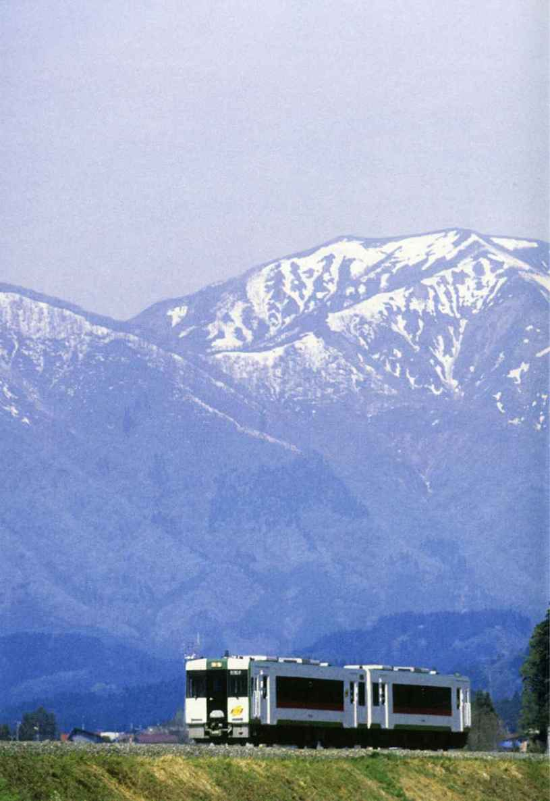
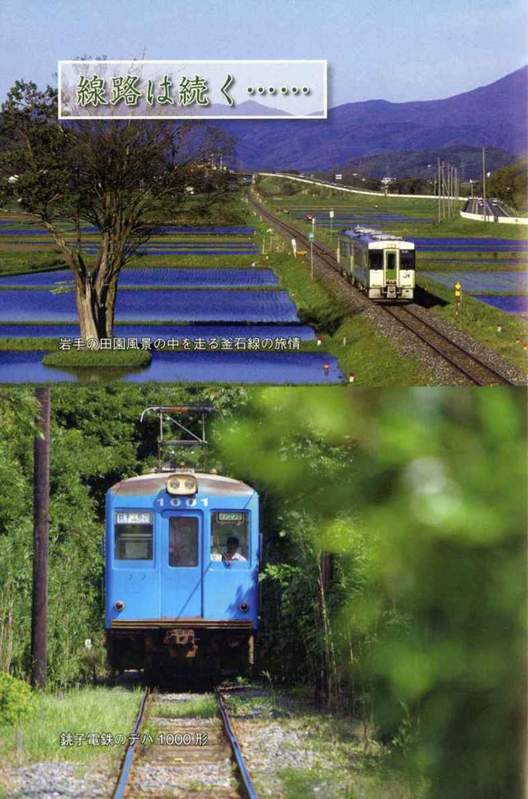
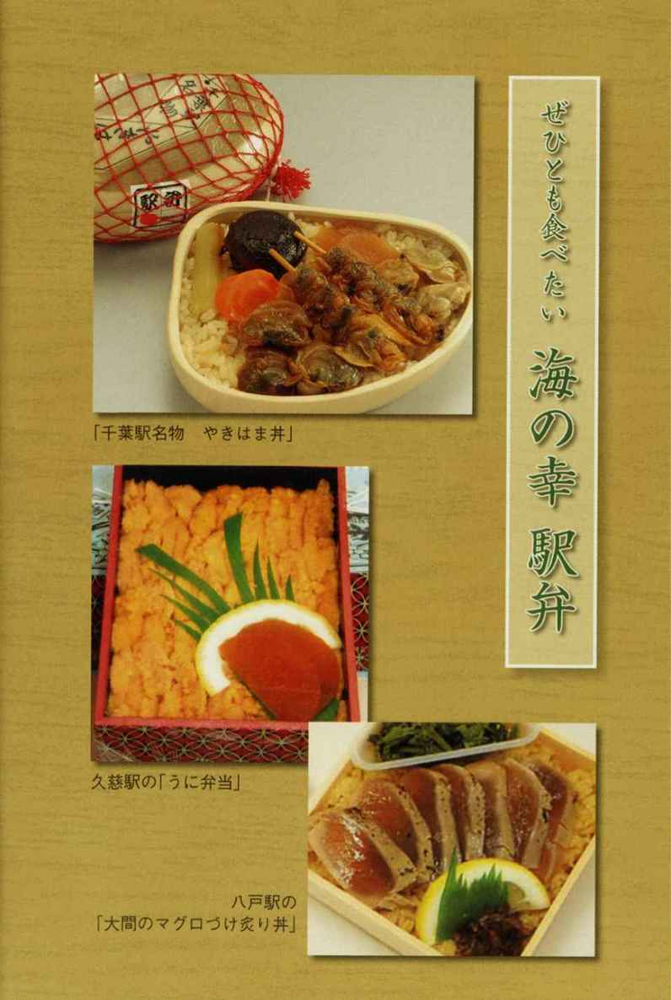
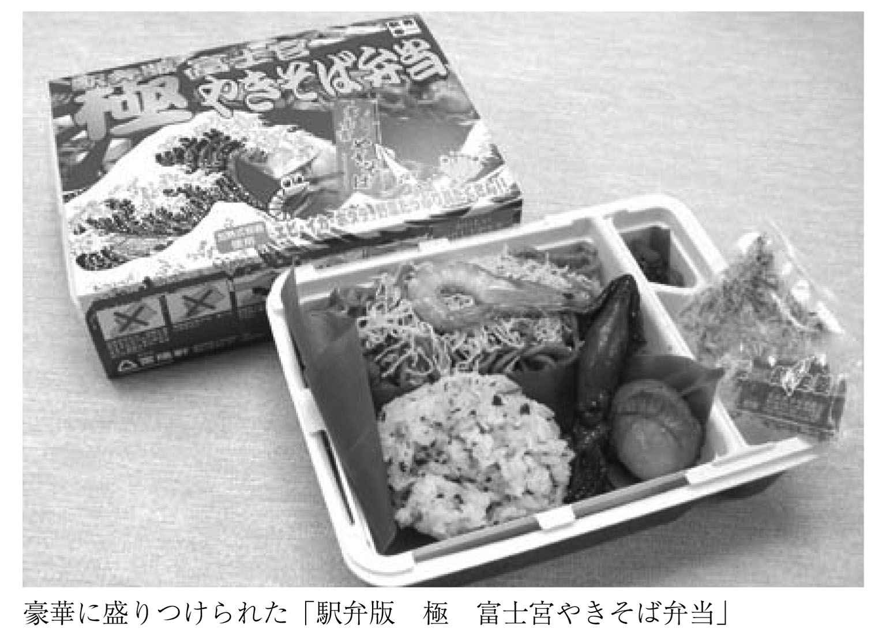
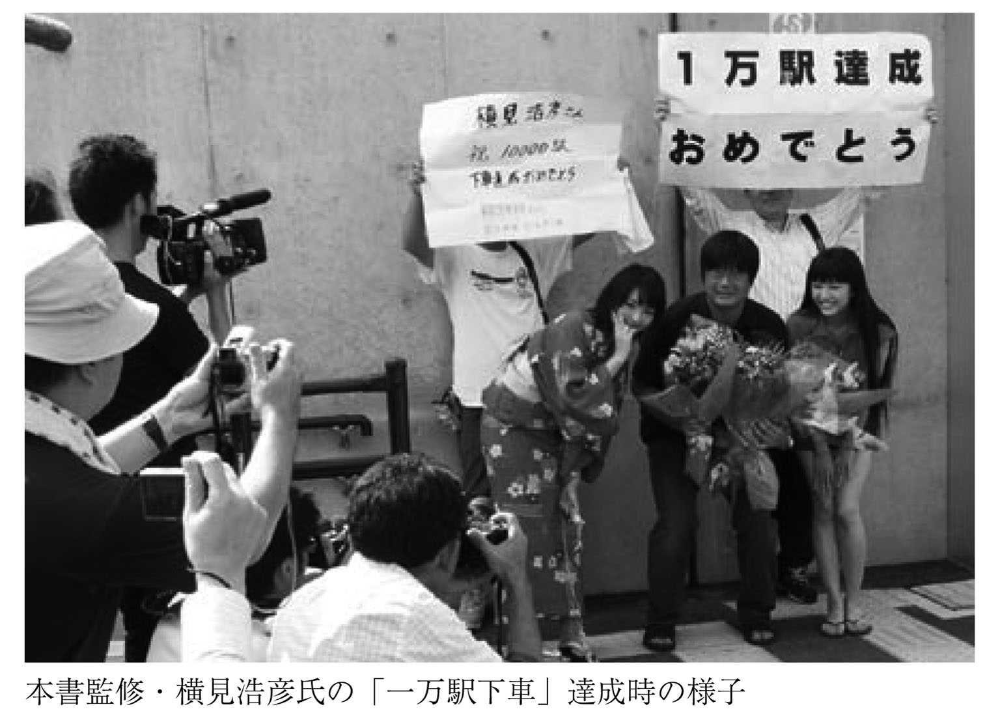

| 鉄道の達人２ 降りたい駅 乗ってみたい路線 (竹書房文庫) | |
| Unknown | |
| (2010) | |



降りたい駅
乗ってみたい路線
鉄道の達人２
横見浩彦：監修
この電子書籍は、縦組の底本を元に作成しました。
はじめに
「このところ、鉄道ファンを題材としたテレビドラマや、漫画『鉄子の旅』のアニメ化などの影響もあってか、これまで鉄道にさほど関心がなかった人でも、鉄道に目を向けるようになってきたような気がします。」
......そんな書き出しからなる「はじめに」の序文を添えて、前作となる『鉄道の達人』が刊行されたのは２００８年春のことでした。
それから２年と少しが経ち、鉄道ブームの盛り上がりは当時と比べても少なからず加速しているように思えます。
いま、鉄道ファンは確実に裾野を広げています。
もちろん、増えているのは、これから鉄道のことをいろいろ吸収しようとしているライトなテツ＝テツ入門者です。そして、僕たち既存のテツの使命は、皆さんが知識を増やしていくことのお手伝いであり、鉄道世界のナビゲートだろうと思います。
そう考えて製作のお手伝いをしたのが前作だったのですが......、今になって振り返ると、やはりまだまだ語り足りません。テツ入門者に向けて「鉄道の世界には、こんなに面白いことがいっぱい！」と紹介したいことは、とても一冊の文庫に収まる量ではないんです。
ならば、どうしたらいいのか。その結果として導き出されたのが、本書『鉄道の達人２ 降りたい駅 乗ってみたい路線』です。
この『鉄道の達人２』では、僕のライフワークである「駅」についての面白ネタを中心に、「駅弁」「路線」「テツ」という章立てでさまざまなトピックをご紹介します。基本的には、前作『鉄道の達人』を読んで、もっとも基礎的な部分をふまえた方に向けた内容になっていますが、もちろん未読の方にも楽しめるよう配慮しました。
「やっぱり鉄道は面白い！」
本書を読んでそう思っていただけたなら、僕はなにより幸せです。
２０１０年５月 横見浩彦
もくじ
本書に記載した情報・規約等は２０１０年５月現在のものです。法改正・ダイヤ改正等によって変更が生じる場合がありますのでご注意下さい。
第１章 テツならば行っておきたいウワサの駅！
日本一の路線が誇る風光明媚すぎる湖上駅
国中に線路網が張り巡らされ、正確無比な運行で知られる日本は、世界有数の鉄道大国です。国内にある駅の数は、私たち旅客が乗り降りできる旅客駅だけで、およそ９２５０駅。路線の新設や廃止にともない、廃止される駅や新しく作られる駅が次々と出てくるため、その数は常に揺らいでいますが、実に膨大な数の駅が日本中に散りばめられています。
「ならばひとりのテツ（鉄道ファン）として、その全部を訪れてやろう！」
......と志す人も少なくないようですが、この試みを実現してしまう鉄人的なテツはごくわずかです。多くの鉄道ファンは、行ってみたい駅や乗ってみたい路線・車両を夢見ながらも、さまざまな制約のせいでその願いを達成できずにモンモンとした気持ちを抱えて日々の生活を送っているはずです。
さて、全国に９０００以上の駅があるのですから、中にはもちろん変わった駅、有名な駅、「一度は行きたい」と語られる駅がいくつもあります。その中で、一番手としてご紹介するのは静岡県・大井川鐵道井川線にある奥大井湖上駅です。
１９９０年に開業した新しい駅ですが、この駅が全国のテツを一瞬でトリコにしたのは、その特異なロケーションに秘密があります。
この駅は名前の通りの湖上駅として、湖を渡る２本の鉄橋に挟まれています。鉄橋の名前は、奥大井レインボーブリッジ。駅舎は湖に突き出した半島の上に建造されていますが、周囲に人家もなく、そこにつながる道は湖面から70メートルの高さがある鉄橋を渡って隣り駅である接岨峡温泉駅方面へ延びるハイキングコースのみ。まさに「陸の孤島」という形容がふさわしい駅です。
一応、駅には駐車場が用意されてはいるものの、これまた鉄橋の向こうにあり、駐車場から駅舎までの距離は、なんと徒歩で片道20分。日常的に利用する地元住民は皆無で、利用者は全員が観光客です。
なぜ観光客がこの駅を訪れるかは、奥大井湖上駅の様子を撮影した写真を見ればすぐにわかります。一面の緑が広がる周囲の山々と、湖面の青、そこに伸びる赤い２本の鉄橋に挟まれた小さな駅......。全国にあまたいる撮りテツ（写真や動画の撮影を主活動とするテツ）にとって、この駅は聖地のひとつと崇められる撮影ポイントですから、テツならずとも「この駅の写真、見たことある」という人も多いでしょう。
もちろん、離れたところから見た駅だけでなく、駅のホームからの景観も素晴らしいものです。駅舎やホーム、鉄橋のハイキングコースが湖面からの高さ70メートルというのは、そこから周囲を眺めてみるだけでも、おいしい空気の中で十分に興奮できるロケーションです。
さて、奥大井湖上駅がなぜ人気か......。その理由を語るならば、駅が敷設されている大井川鐵道井川線自体の話も欠かせません。そもそもこの路線が、日本トップクラスの人気を誇る路線だからこそ、大井川湖上駅の人気も盤石のものとなっているのです。
そんな井川線の魅力を列挙するならば、以下のようになります。
○日本一の急勾配区間を持つ鉄道路線（アプトいちしろ駅～長島ダム駅間）
○その急勾配を登るために日本唯一のアプト式路線の区間を持つ
○井川線の駅のうち約半数が秘境駅であり、優れた景観を持つ駅が多い
○井川線につながる大井川本線ではほぼ毎日蒸気機関車が運行している
ちなみに日本一の急勾配とは90パーミル（１０００メートル進んだ場合に90メートルの高低差が出る勾配）、アプト式路線とは急勾配を登るために通常の２本のレールの間に歯形の付いた３本目のレールが敷いてあり、そこを歯車のついた第３車輪を持つ機関車が登る形式のこと。そして秘境駅とは、周囲に人家が見あたらず周囲に道路も走っていないような駅のことです。
もうおわかりでしょう。これだけテツ好みなポイントをそろえた鉄道路線など、そうお目にかかれません。また純粋無垢なテツだけではなく、ライトな鉄道ファン層にも訴求力の高い「蒸気機関車」や「風光明媚」といったポイントも押さえているのですから、まさに鬼に金棒。実際に日本にある全鉄道駅を踏破した鉄人的テツのひとりであり、本書監修を務める横見浩彦氏も、大井川鐵道井川線を「日本一好きな路線」と言ってはばかりません。
そんな井川線の中でも特にオススメの駅として、真っ先に挙げたい奥大井湖上駅。これまでに訪れたことがない人は、ぜひ一度その魅力を堪能しに行ってもらいたいポイントです。
泣く子も黙る!? 「怖い顔」の駅
９０００以上の駅があれば、珍しい駅もたくさん挙げることができます。今回は、そんな中から〝駅舎の形が独特〟という２駅をご紹介しましょう。
ひとつめは、駅舎が恐ろしい鬼の顔をしている駅です。
ＪＲ東海・飯田線にある東栄駅の駅舎は、正面から見ると目をつり上げ牙をむいた鬼の顔をしています。そして瓦ぶきの屋根の上には、ツノのような部分も。幼い子供に見せたら本気で怖がってしまいそうな、鬼の駅舎です。
なぜ、このような愛らしさとは無縁の駅舎ができたのでしょうか。実は、この駅舎は現地（愛知県北設楽郡）に伝わる、古くからのお祭りをモチーフとして造られました。
祭りの名は「花祭」。毎年冬に開催される、悪霊払いや五穀豊穣、無病息災を祈る、江戸時代から続くお祭りで、国の重要無形民俗文化財にも指定されています。祭りでは40種類以上の舞いが踊られ、その際には「て～ほへ、てほへ」という掛け声で町中が盛り上がります。そんな花祭のクライマックスに登場するのが、駅舎のモチーフともなった鬼。鬼と町の人、観光客が入り乱れて踊る「鬼の舞い」は花祭の一番の見どころとされています。
東栄駅は常勤の駅員がいない無人駅ですが、駅舎の中にはふるさと文化交流館も併設され、さまざまな資料が展示されています。機会があれば、ぜひ一度その鬼の駅舎の迫力をじかに味わってみてはいかがでしょうか。
続いて登場するのは、北越急行ほくほく線のくびき駅です。１９９７年のほくほく線開業とともに新設された駅らしく、半球ドーム場の駅舎は、正面から見ると現代的なデザインです。しかし、裏に回って駅舎を見てみるとその印象は一変します。のっぺりした銀色の半球体の中央には目玉と思わしき赤い円形のデザインが......。
「これはロボットか何かの顔？」
あまりに前衛的な造形に、思わずそう口走ってしまっても不思議はありません。そして、この感想はそう的外れなものでもありません。実はくびき駅の駅舎は、宇宙人の顔をモチーフとして造られているのです。駅舎の中の待合室も、赤を基調とした宇宙をイメージさせるデザインで統一されています。
新潟ののどかな田園風景が続く中に、突然現れる巨大な銀色の宇宙人フェイス。これだけを見たのでは、まず駅だとは想像できない建物ですが、どうやら駅舎の宇宙イメージは観光客の集客を目指してデザインされたもののようです。それにしてもこの宇宙人は、いったい何を思う表情なのか、気になるところです。
ホームをぶち抜いて巨木が生える駅
京阪本線・萱島駅には、人間によるデザインではない、自然の力を感じさせる名物があります。それは推定樹齢７００年の、大きなクスノキ。なんとこのクスノキは高さ約20メートル、幹回りは約７メートルもあり、３・４番ホームのど真ん中にコンクリート製のホームと屋根をぶち抜いて、威厳ある姿を見せています。
もともと、この大きなクスノキは、当地にあった萱島神社の御神木として地元住民に愛されていた存在でしたが、この区間の駅と線路の高架化工事を行う１９７２年には、伐採される予定だったといいます。
ところが、地元の方々から「いままで親しんできた御神木を切るのはしのびない」と、クスノキの保存を求める声が高まったため、そのままの形で残されたというエピソードがあります。もちろん、御神木を抱えた萱島神社も、駅の高架下にしっかり残されています。
現在も元気な姿を見せてくれている大クスノキには、丁寧な手入れが行われています。この先も大クスノキは、利用者にやすらぎを与え続けることでしょう。
日本最北端の関所が駅になった？
ＪＲ北海道・函館本線の山越駅も、変わったコンセプトの駅舎を持っていることで知られています。函館市の北に位置し、内浦湾にもほど近いこの地の駅は、江戸時代の関所を模した形に作られています。
そのモデルは山越内関門。日本最北端に位置した関所でした。
もともとは無人の荒野だったこの地にも、１７９９年に江戸幕府が東蝦夷地を直轄地とした頃から、多くの人々が住むようになったと言われます。そして次第に警備上にも重要な位置を占めるようになったため、１８０１年には現在の函館市内にあった関所が、山越の地へ移転。以来、１８６１年に廃止されるまで、ここで蝦夷地への武器持ち込み取り締まりや、通行人の往来手形改めなどが行われるようになりました。
関所跡地から山越駅までの距離はほんの１００メートル。そのため、関所リスペクトの意味からも駅舎（待合所）が木造の関所風にデザインされているのです。
ちなみに、駅舎内部には、関所が活況だった当時の関所の様子がわかる模型や図面が飾られています。また、駅舎脇にあるトイレも木造風で看板には「厠」の文字が。さらには駅前にある山越駅前バス停の待合室もまた、関所風に作られている......と、なかなかの徹底ぶり。近くを訪れる際には、少し時間を取って関所の名残を感じに立ち寄ってみてはいかがでしょうか。
ガンダムと両さん、大地に立つ！
ガンダム......といえば、もはや説明が不要なほどの知名度を誇る、日本ロボットアニメの金字塔的作品です。『機動戦士ガンダム』として１９７９年にテレビ初放映以後、30年が過ぎても人気に衰えは見えず、ガンダムシリーズの新作アニメ作品が次々と放映されるかたわら、初代ガンダム（ファンはファーストガンダムと呼ぶ）の新しいグッズも絶えずリリースされています。
さて、ガンダムは近未来の宇宙や地球を舞台とした物語で、ストーリー上は日本の鉄道とは何の関わりもありません。しかし東京のある駅は、ガンダムファンにとって聖地として扱われてきました。そう、アニメの制作スタジオがある駅です。
ガンダムは、西武新宿線・上井草駅の近くにある日本サンライズ（現・サンライズ）で制作されました。また、サンライズに限らず、上井草駅のある東京都杉並区は、世界有数のアニメスタジオ集積地でもあります。そこで、杉並区が推進する地域活性化事業の一環として、２００８年、上井草駅前にあるモニュメントが設置されました。それが機動戦士ガンダムのブロンズ像です。
像は高さ３メートルほどもある立派なもので、ガンダムが右手を天にかざすポーズで作られており、像の名前は「大地から」。これは、ガンダムの生みの親として知られる富野由悠季監督が、テレビシリーズ第１話のタイトルである「ガンダム大地に立つ」からとって名付けたものだそうです。
駅前のブロンズ像だけでなく、上井草駅周辺ではガンダムをモチーフにしたものをたくさん見つけることができます。たとえば地元の商店のシャッターの表面に描かれた巨大なガンダムのイラスト、そして街灯に掲げられる商店街のフラッグにもガンダムの横顔が。極めつけは上井草駅の発車メロディ。そう、上井草駅では、列車の発車のたびにガンダムのテーマ曲が流れているのです。
上井草と同じ東京都内には、ガンダムの場合と違い、作中でキャラクターが直接大活躍する舞台となった土地の駅前に、ある作品の主人公のブロンズ像が設置されています。作品名は『こちら葛飾区亀有公園前派出所』。「こち亀」の愛称で知られる週刊少年ジャンプの名物長期連載マンガの主人公・両津勘吉（通称・両さん）の像です。
２００６年、最初に設置されたのは、亀有駅北口。警官の制服姿で右手を上げて挨拶するようなポーズの、等身大（身長１６３センチ）両さん像でした。ですがこち亀像は、ひとつでは終わりません。その後も亀有駅近辺にこち亀キャラクター像は増え続けています。いろんなポーズ・衣装の両さんをはじめ、子供時代の両さん一味像や派出所メンバー像など、２０１０年４月現在で亀有駅周辺に８つものブロンズ像が設置されています。こち亀ファンの方はぜひ一度、これらを見て回ってみてはいかがでしょうか。
これまで、駅前にあるアニメ・マンガキャラクターのブロンズ像といえば、『ゲゲゲの鬼太郎』の像が大量に設置された「水木しげるロード」が素晴らしい鳥取県の境港駅が代表格でした。しかし今後は、東京の巻き返しがあるかもしれません。どんな展開になるか、お見逃しなく！
流氷を見ながらくつろげるグルメ駅
「鉄道ファンとグルメは両立しない」
こんな言葉があります。いわく、テツたる人種は趣味に使える金銭のすべてを鉄道関係に割きたがるため、鉄道旅での立ち寄り先にたとえおいしい名物があっても、少しでもその料金が高ければ無視してしまう......。
たしかに一面の真理はとらえているかもしれませんが、なにもそうかたくなになることはありません。行きたいところへ行き、食べたかったら食べる。そんな鉄道グルメ旅だって、立派に成立しています。
そんなグルメ旅をしたい方にオススメなのがＪＲ北海道・釧網本線です。この路線には駅舎を改装して飲食店として利用している駅が多く、旅情とグルメの両方を満足させやすいのです。
中でもイチオシの駅と言えば、喫茶店「停車場」を備える北浜駅でしょう。オホーツク海沿岸を走る釧網本線の中でも、最も海に近づいた場所にある駅で、なんと駅から海岸までの距離は20メートル。冬場には、ホームに立って流氷を眺めることだってできます。
喫茶「停車場」は、もともと駅の事務室だった部屋を改装した店で、店内のイスに実際に列車で使われていたものを流用するなど、鉄道ファンにとってはたまらない空間です。もちろん店内から窓の外に広がるオホーツク海を一望することも可能です。おいしいコーヒーを飲み、名物のホタテカレーなどを食べながら、駅から流氷を眺める......なんて、誰もが一度は憧れてしまうシチュエーションです。
北浜駅は、待合室の風景も全国的に知られています。いつのころからか、ここに立ち寄った鉄道ファンが「その記念に」と待合室の壁に自分の名刺を貼り付けていくのが〝お約束〟となったものだから、いまや北浜駅待合室は、数え切れないほどの名刺で埋め尽くされているのです。壁も、天井も、引き戸の裏も、見渡す限りの名刺、名刺......。この光景を眺めるだけでも、オホーツク沿岸の北浜駅を訪れる価値があるかもしれません。
日本最西端の「証明書」を手に入れろ
日本全国、津々浦々に建造されている鉄道駅ですが、東西南北の最端の駅をご存じでしょうか？
最北端駅は、ＪＲ北海道・宗谷本線の稚内駅（北海道稚内市）
最東端駅は、ＪＲ北海道・根室本線の東根室駅（北海道根室市）
......この２駅まではわりと簡単なのですが、最南端と最西端は、微妙な問題をはらんでいます。というのも、「鉄道」という言葉を、狭義に「在来線や新幹線などの普通鉄道のみ」ととらえるか、広義に「モノレールや新交通システム、ケーブルカーなども含めたもの」ととらえるかによって、最端の駅が変わってしまうからです。
普通鉄道の最南端駅はＪＲ九州・指宿枕崎線の西大山駅（鹿児島県指宿市）
広義鉄道の最南端駅は沖縄都市モノレール線の赤嶺駅（沖縄県那覇市）
普通鉄道の最西端駅は松浦鉄道・西九州線のたびら平戸口駅（長崎県平戸市）
広義鉄道の最西端駅は沖縄都市モノレール線の那覇空港駅（沖縄県那覇市）
......という具合に、やや複雑になっています。とはいえ、この程度の難解さは真の鉄道ファンにとっては入門レベル。全部を覚えておくとともに、「自分にとってはどちらが最南端＆最西端か」という、個人的なルール作りも行っておきたいところです。
さて、実は最南端と最西端の駅についての話題がややこしくなったのは、わりと最近の話です。
というのも「ゆいレール」の愛称で親しまれている沖縄都市モノレール線が開業したのが今からほんの数年前、２００３年のことだから。つまりそれまでは、西大山駅とたびら平戸口駅が、長らく「正真正銘の日本最南端・最西端の駅」として君臨していたのです。
そこで逆襲的なアピールに転じたのが、本項の主役たる、たびら平戸口駅です。その方法は、オリジナルの「日本最西端の駅 訪問証明書」を発行するというものでした。
たびら平戸口駅で２００円で販売されているこの証明書には、全国の駅とレールでつながっている普通鉄道の中では日本最西端の駅である旨が力強く書かれており、当駅の入場券などを挟める切り込みも入っています。最西端のタイトルを簡単に譲り渡してなるものかという、松浦鉄道の強い意志を感じます。
なお、この証明書は全国の鉄道ファンに快く受け入れられたようで、なかなかの売れ行きだとか。しかし売れ始めたキッカケはというと、「たびら平戸口駅に観光バスが停まるようになったから」というから、一抹の寂しさも漂います。
最西端の駅を訪れて訪問証明書を手に入れるならば、その際の交通手段は鉄道に乗ってこそ意味があるというもののはず......。そう思ってしまうのは、テツとして間違いではないはずです。
一般人は出入り不可の改札口
神奈川県横浜市にあるＪＲ東日本・鶴見線の海芝浦駅は、一般人が改札口から出られない駅として、広く名を知られています。本書の前巻である『鉄道の達人』においても、その存在を紹介したほどポピュラーなトピックです。
海芝浦駅の改札を一般人が通れない理由......それは、駅の敷地そのものが東芝京浜事務所という企業の敷地内にあり、駅がそのまま「民間工場の出入り口」を兼ねているため。つまり海芝浦駅の改札を通過できるのは、東芝の社員証を持つか、事業所訪問の許可を持つ関係者だけに限られているからです。
しかし広い日本には、似たような特徴を持つ駅が他にも存在します。今回は、そんな駅をもうひとつご紹介しましょう。
駅の名は神武寺駅。神奈川県逗子市に建つ、京浜急行電鉄逗子線の駅です。
神武寺駅の開業はおよそ80年前。以来、特に話題となることなく近年まで営業されてきました。ですが２００７年の新駅舎完成を経て２００８年に新改札口が設置され、一躍全国のテツの注目を集めます。
２００８年10月、神武寺駅に新しくできた改札口は、なんと米軍池子住宅の敷地内に置かれたのです。もちろん出入りできるのは、米軍関係者およびその許可を受けた者だけ。一般客は利用できません。もっとも、一般人はわざわざこの新改札を通らずとも通常の改札口を利用できるので、特に不便はないのだとか。
海芝浦駅ほどの特異性はないものの、十分に特殊な神武寺駅。「いつか行ってみたい駅リスト」に入れておく価値はありそうです。
都心の地下に眠る「幻の新橋駅」
東京の都心部の地下深くに、その存在を知る鉄道ファンなれば誰もが「行ってみたい！」と願う伝説的な駅が眠っています。それが「幻の新橋駅」です。
現在、地下鉄の新橋駅といえば、東京メトロ銀座線の駅として広く認知されています。しかし地下鉄の黎明期には、現在の地下鉄新橋駅のすぐそばに、もうひとつの地下鉄新橋駅が存在していたのです。そう、もちろんこの駅こそが〝幻〟の正体です。
「地下鉄」という冠のつかない新橋駅は、１８７２年に日本最初の鉄道路線（新橋～横浜駅間）の駅としてセンセーショナルなデビューを果たしたことで、つとに有名です。
一方で今回の主人公たる地下鉄新橋駅も、やはり注目を浴びる存在として誕生しました。ときに１９３４年、浅草～新橋駅間を走る、日本最初の地下鉄路線の終点駅としての誕生でした。この路線を引き、地下鉄新橋駅を運営していたのは、東京地下鉄道という会社です。
しかしその５年後にあたる１９３９年、地下鉄新橋駅がもうひとつ誕生してしまいます。今度は、東京高速鉄道という会社が運営する、渋谷～新橋駅間を走る新路線の終点駅としての開設でした。
「だったら同じ駅を使って列車の乗り入れをすればいいじゃないか」
「わざわざ別の駅にしなくてもいいじゃないか」
誰だって、そう思うでしょう。事実、後発組である東京高速鉄道の社長であり、東急グループの創業者としても知られる五島慶太氏もそのような意向を持っていたそうです。しかしこのアイデアは、もう一方の当事者である東京地下鉄道には受け入れられませんでした。ビジネスがからんだオトナの事情というやつです。
さて、こうして生まれた２つの地下鉄新橋駅ですが、悲しいことに、その片方が歴史の闇に消えてゆくまで、そう時間はかかりませんでした。後発組の東京高速鉄道は、たちまち相手方の会社の株を買い集め、買収を成功させてしまったのです。
かくして浅草～新橋、新橋～渋谷という２つの路線は接続され、現在の地下鉄銀座線と同じルートの路線ができあがります。
もちろん、こうなれば新橋駅の片方は不要のもの。どちらを残すかという会議の末に、新設された地下鉄新橋駅はたった８カ月間しか利用されないまま、鉄道の表舞台から消えゆくこととなってしまったのです。
ただし、この幻の新橋駅が姿を消したのは、あくまで「表舞台から」というだけ。実は旅客の利用がなくなってからも、電車の車庫や駅員の会議室、資料倉庫、あるいは仮眠室として利用され続けており、現在もまだまだ地下スペースとしては現役です。
なんとも鉄道歴史のロマンを感じさせる「幻の新橋駅」。もちろん通常は、一般人にとって見ることも入ることもできないスペースとなっているわけですが、まれに東京メトロのイベントとして人数を限定してファンに公開されています。近年では２００７年に、「地下鉄開通80周年記念イベント」として応募者３０００名の中から抽選に当たった１５０名の鉄道ファンにのみ、幻の新橋駅の見学が許されました。「運がよければ、いつの日か......」そう考えて次のイベントを待つ人は、少ない数ではありません。
ちなみに、幻の新橋駅へ列車が入る分岐器は、新橋～虎ノ門間にあります。地下鉄に乗車し、この区間を通りがかる際には、ぜひ精神集中し耳をすませてみましょう。幻を彩る分岐音が聞こえてくることでしょう。
駅名の長さを巡る仁義なき戦い
最も長い駅名を持つ駅はどこか？
たとえ鉄道にまったく興味のない人でも、どこかで一度はこのテーマについて見聞きしたことがあるのではないでしょうか。しかし、１位の定義やその変遷について、スラスラと暗唱できる人はそう多くないはず。駅名の長さを巡っては、実に熾烈で細かい争いが繰り広げられているからです。
まずは「１位の定義」について触れておきましょう。駅名の長さとひとくちに言っても「正式表記の文字の数」なのか「読みの音の数」なのかで、まず意見が分かれてしまうのです。
「正式表記の文字数 第１位」は、記録を知らない人にとっては意外なところに潜んでいます。世界のちびっ子の人気者たるミッキーのお膝元......そう、あの東京ディズニーリゾートに、しかも１位タイが２駅そろっているのです。
駅名は「リゾートゲートウェイ・ステーション駅」と「東京ディズニーランド・ステーション駅」。ともに「・」を含めて17文字あり、開業した２００１年からトップの座を守り続けています。千葉県浦安市の東京ディズニーリゾート内を運行するディズニーリゾートラインというモノレール路線の駅です。
一方で「読みの音の数」は、なかなか複雑な変遷をたどっています。ちなみに「東京ディズニーランド・ステーション駅」は読みで20文字ありますが、トップ争いに加わることはできません。
長さ競争が注目されはじめたのは１９９０年のことでした。その２年前に阿武隈急行に開業した「やながわ希望の森公園前駅」（読み16文字）の記録を大幅に更新する駅が茨城県の鹿島臨海鉄道・大洗鹿島線に誕生したのです。注目の名前は「長者ヶ浜潮騒はまなす公園前駅」（読み22文字・正式表記13文字）です。
しかしさらに２年後、南阿蘇鉄道・高森線に「南阿蘇水の生まれる里白水高原駅」（読み22文字・正式表記14文字）が開業してしまいます。そう、この２駅は読みの音数では並んでいるものの、正式表記に１文字差があったため、〝なんとなく序列がつけられてしまった〟のです。
その後、「南阿蘇～駅」は、２００１年までの約９年間、「読みの音の数も正式表記の文字数も日本一」という２冠独占状態を維持し続けていました。
ですが残念ながらその年、２冠はともにホルダーを変更します。ここで登場するのは一畑電気鉄道（現・一畑電車）・北松江線のとある駅。もともとは「古江駅」という名前だったものの、駅前にできた美術館の開設にあわせて改称した「ルイス・C.ティファニー庭園美術館前駅」（読み23文字・正式表記17文字）です。
この駅はまず、「南阿蘇～駅」が持っていた２冠を一気に強奪。直後に開業するディズニーリゾートラインの２駅と正式表記タイトルを分け合う形で、新たな２冠ホルダーとして君臨することになります。
ところが、この最強王者に悲劇が襲いかかるのですから、歴史の流れは誰にも読めません。
なんと２００７年に、最長駅名のもとであった美術館が閉館してしまったため、再び改称することとなったのです。その新しい名前は、美術館に隣接する施設からとられた「松江イングリッシュガーデン前駅」。これまた長い名前ですが、タイトルを争うほどではありません。
こうして現在、読みの音の数のタイトルは、復権した「長者ヶ浜潮騒はまなす公園前駅」と「南阿蘇水の生まれる里白水高原駅」が分け合いつつも、どちらか一方に絞るならば正式表記の文字数によって「南阿蘇～駅」が優勢......という状況を迎えているのでした。
「長い駅名」ではなく「短い駅名」に目を向けたら、どうなるでしょうか。
実はこのタイトルについては、さほど厳しい争いはありません。「正式表記も読みの音数も、ともに１文字」という抜群の強さを誇る駅がタイトルを安定防衛しているからです。
その駅とは、三重県の「津駅」。日本一どころか世界一短い駅名としてギネスブックにも登録されているほどのツワモノです。
まぎらわしいネーミング「駅駅」
一畑電車・北松江線にある特徴的な駅の名前といえば、一昔前は駅名の長さで日本一を誇り、前項でも紹介した「ルイス・C.ティファニー庭園美術館前駅」でした。しかし現在この駅は改称してしまい、日本一の座を追われています。そこでご紹介したいのが「湖遊館新駅駅」です。
......この表記に「？」と思った方もいるでしょう。しかし「駅駅」は誤植ではありません。
普通、「東京駅」「上野駅」などと駅名を表していても、これらの駅の正式名称は「東京」であり「上野」です。たとえば列車内のアナウンスを思い出してください。「次は東京～、東京～」と車掌さんも言っています。「○○駅」という表記や呼び方は、あくまで地名との混同を避ける意味で使われているのです。
ところが湖遊館新駅に関しては「駅」まで含めて正式名称です。そのため「正式名称＋駅」という通常の表記ルールに準ずると「湖遊館新駅駅」となってしまうというのが、本項のポイントなのでした。
その昔は、ここと同じように〝正式名称に「駅」が含まれる駅〟が全国にいくつかあったものです。たとえば近鉄橿原線の橿原神宮駅駅や、京阪電気鉄道新京阪線の桜井ノ駅駅など。しかしこれらの駅はすでに改称されてしまい、現在のところ正式名称に「駅」を含む駅は湖遊館新駅駅ただひとつ。その意味で、大変珍しい鉄道スポットということができます。
「ごめん駅」の隣にある「ありがとう駅」
駅名として「ごめん」や「ありがとう」という名前がついているだけでも珍しいのに、その２つの駅が並んでいる......今回は、そんな話です。
この２つの駅は、ともに土佐くろしお鉄道阿佐線の駅です。といっても、この路線がこの正式名称で呼ばれることはあまり多くありません。現地の人の呼び方も、構内などの案内や時刻表での表記も、路線の愛称が使われています。
その愛称とは「ごめん・なはり線」。すでに愛称の中に「ごめん」の文字が入っていることに気づかされます。この路線は、高知県南国市の後免駅から高知県安芸郡奈半利町の奈半利駅までを結んでおり、その始発駅と終着駅の名がそのまま路線愛称に選ばれたのです。
ごめん＝後免駅の名の由来は、古い地名です。この駅は１９２５年の設置当時、長岡郡後免町に属していたため、その後の市町村合併で地名が南国市に変わって以降も後免駅という名のまま、改称されずに現在に至っています。
では、その隣にあるというありがとう駅も......と思ってしまうところですが、残念ながらこちらは違うパターン。「ありがとう駅」とは、後免駅の隣にある後免町駅に付けられた、駅愛称なのです。
ごめんとは謝罪の言葉。ならば隣には感謝の言葉を示す駅を......。この命名には、人々が素直に「ごめんなさい」「ありがとう」という素敵な言葉を言えるようにとの願いが込められているそうです。
駅愛称の命名者は、『アンパンマン』の生みの親であり、この地にゆかりのある漫画家・やなせたかし氏です。さすがは人類愛にあふれた作品で知られるやなせ氏といったところでしょうか。
ちなみに、ごめん・はなり線とやなせ氏の関係は、これだけにとどまりません。
全部で20あるごめん・なはり線の駅すべてには、やなせ氏が生み出したオリジナルの駅キャラクターが設定されており、駅構内や列車ペイントなどで、その姿を見ることができます。
たとえばごめん駅のキャラクターは「ごめん えきお君」、ありがとう駅のキャラクターは「ごめん まちこさん」といった具合です。ごめん駅では、ホームに駅員の制服姿で立つ「ごめん えきお君」の像の他、アンパンマンの石像がちょこんと座った可愛らしいデザインのベンチや、やなせ氏による「ごめん駅でごめん」という歌碑が建てられています。もちろんこれは、テツにとっての撮影ポイントのひとつ。たとえばアンパンマン好きなお子さんとともに付近にお立ち寄りの際には、ぜひファインダーに収めておきたいものです。
駅名になってる学校はどこに？
駅の名前には、さまざまな由来があります。多くは駅が開設された土地の名前から付けられていますが、駅に近いランドマークからとられている場合も少なくありません。
東京にある東京急行電鉄（東急）東横線・都立大学駅も、そんなパターンで名付けられた駅のひとつです。
この駅はもともと、１９２７年の開業時には「柿ノ木坂駅」という名称でした。由来は、駅が立地する土地の名前から。しかしわずか４年後には駅名が改称されます。鉄道会社による沿線開発の一環として、この近くに旧制府立高等学校を誘致する話が持ち上がり、「ではその学校の名前を駅名にしよう」と決定されたからです。
こうして柿ノ木坂駅は１９３１年に「府立高等前駅」と改称され、翌年には実際に学校も誘致されました。
ですが前年に改称されたばかりの駅名は、さらに改称されます。新しい名前は、「府立高等前駅」から「前」を抜いた「府立高等駅」です。
けれど、お察しの通り駅名の変遷はこれでは終わりません。といっても、現在の「都立大学駅」になるのはまだまだ先の話。実はこの後もさらに駅名の変遷は続きます。理由は、学校自体の名称変更でした。
１９４３年、府立高等学校の名称変更にともない、駅の名前が「都立高校駅」に、そして１９５２年、ようやく現在わたしたちが知っている「都立大学駅」が誕生します。駅の開業からおよそ25年のうちに４度の改称を経て、ようやく獲得したのが都立大学駅という名前だったのです。
「都立大学があるから都立大学駅」
実に分かりやすい話ですが、残念ながら今度は「学校の移転」という悲劇がこの駅を襲います。１９９１年、都立大学駅近くにあった東京都立大学八雲キャンパスが、施設の拡大を理由に東京都八王子市へと移転してしまったのです。
なんというストーリーでしょう。改称に改称を経て定着した駅名の由来たるランドマークそのものが、離れていってしまったのです。
その後、しばらく駅名は改称されませんでした。しかし「都立大学がないのに都立大学駅」という事態に違和感を持つ人は少ない数ではなく、また大学受験の際に「都立大学は都立大学駅にあるに決まっている」と勘違いした受験生が、都立大学のない都立大学駅前で途方に暮れる......というハプニングもあったと伝えられています。
そこで駅を運営管理する東急電鉄は、付近の住民を対象にアンケート調査を行ないました。もちろんお題は「都立大学駅という駅名を変更すべきかどうか」。
結果、「改称に賛成」と投票した人がおよそ６割、「反対」がおよそ４割と、過半数が改称に賛成する結果が得られましたます。しかし「賛成票が全体得票の３分の２に達すれば改称」という規定に照らし合わせるとわずかに票が足りないという理由から、改称は見送られて今日に至っています。
ちなみに、騒動の中心となった東京都立大学は、その後の２００５年にまたもや改称しています。現在の大学の名前は首都大学東京。略して呼ぶならば「首都大」。現在、国内の全大学の中で唯一、校名の末尾に「大学」の文字がつかない大学でもあります。
学校の名称変更にともなって改称に改称を重ねて、最終的には学校自体が付近からなくなってしまい、そのうえ都立大学という名称の学校自体が存在しなくなるという状況の中、今も「なぜ大学がないのにこの名前なんだろう」という謎を振りまきながら彼の地で営業を続けている都立大学駅。もし駅に人格があるとするならば、この事態をいったいどのようにとらえているのでしょうか......。
さて、そんな都立大学駅の隣には東急東横線・学芸大学駅があります。
......そう、実はこの駅のそばには、東京学芸大学がありません。都立大学駅と同じパターンであり、改称を繰り返しているという点も共通しています。
１９２７年、地名から碑文谷駅と名付けられて開業したこの駅は、ここを最寄り駅とする学校の名前をとっておよそ10年後の１９３６年に「青山師範駅」と名を変えます。そして、以降のパターンも都立大学駅のそれと同じ。学校名の変遷とともに１９４３年に「第一師範駅」、１９５２年に現在の「学芸大学駅」へと改称されることとなりました。
ですが学芸大学駅が学芸大学の最寄り駅だったのは、やはりそう長い時間ではありませんでした。東京学芸大学は１９６２年には、東京都小金井市に移転してしまうのです。
ならば駅名はどうすべきか。この学芸大駅についても、すでに大学がないのだから改称すべきだとの声があがり、そしてここでも受験シーズンには不幸な受験生が途方に暮れる悲しい事件が起こったといいます。そこで、さまざまな機会に駅名変更のテーマで議論がなされましたが、結局は長く続いた駅名への愛着心や、すでに定着したイメージなどを理由として、地元住民の大きな賛同を得られないまま、現在に至っています。
実によく似た変遷をたどり、しかも隣同士にある都立大学駅と学芸大学駅ですが、この両駅にはさらに共通点があります。両駅とも、駅名の由来となった大学には移転で離れられてしまいましたが、実はその附属高校はいまだ両駅を最寄りとして現地にあるのです。なんという奇妙な縁でしょうか。
今回は、都内の東急東横線に並ぶこの両駅を紹介しましたが、全国には駅名が示す施設やランドマークを失ってなお名を変えない駅がいくつかあります。珍しいケースですが、いったいそれらがどこにあるのか、探してみるのも一興でしょう。
シロウト泣かせの駅名グループ集合エリア
前項では、すでにその地に存在しない大学の名を冠した駅が並んでいる地域を紹介しましたが、「同じような駅名が密集」といえば、他にもチェックすべき地域があります。
たとえば千葉県の千葉市周辺。ここには「千葉」という地名を駅名に含む駅がわんさかあります。ＪＲの路線だけでも、千葉駅、東千葉駅、西千葉駅、千葉みなと駅、本千葉駅。私鉄やモノレールも入れてみれば、京成千葉駅、千葉中央駅、新千葉駅、千葉寺駅、千葉公園駅、千葉ニュータウン中央駅......と、合計で11駅。これだけあると、さすがに地元の人でも「あれ？」と戸惑うことが多いのだとか。
であれば、県外から訪れた人にとってはなおさら混乱のもとになりそうです。
似たような状況は、埼玉県の浦和周辺（現さいたま市）にも見られます。
しかも千葉と違って、浦和の駅名にはひとつの称号が与えられています。それは「東西南北のすべての方角名を付けた駅がある」ということ。つまり浦和駅を中心に、東浦和駅、西浦和駅、南浦和駅、北浦和駅がすべて存在するということです。現時点で、この称号は浦和グループだけのものです。もちろんこの５駅の他にも、浦和の名を冠する駅はあります。中浦和駅、武蔵浦和駅、そして浦和美園駅......。「浦和」の名を冠する駅は全部で８駅ということになります。千葉グループには劣るものの、これはかなりの数といえるでしょう。
しかし、上には上がいるというのが悲しき世の常。千葉グループと浦和グループを上回る数を誇る駅名派閥があります。
まずは「大阪」。
大阪の場合、千葉や浦和のそれとは違い、やや広範なエリアに散らばってはいますが、その数は大したものです。
大阪駅を筆頭に、新大阪駅、大阪城公園駅、大阪城北詰駅、大阪天満宮駅、大阪港駅、大阪空港駅、大阪ビジネスパーク駅、大阪教育大前駅、大阪阿部野橋駅、大阪難波駅、大阪上本町駅、大阪狭山市駅......と、13駅。さまざまな路線がさまざまな場所で、大阪の名の付く駅を持っています。では、千葉グループの持つ11を上回り、大阪グループが日本の駅名グループで最大派閥ということになるのでしょうか？
残念ながら、違います。大阪グループをその数で遙かに上回る巨大派閥が、実は四国に存在しています。その名は「伊予」。現在の愛媛県にあたる旧国名であり、「いよかん」という柑橘類の名前との関連で覚えている人もいるでしょう。その「伊予」の名を冠する駅が、まずＪＲ四国の予讃線に大量にあります。
讃岐うどんで知られる香川県の高松駅から、瀬戸内海と宇和海に沿って愛媛県の宇和島駅までを走る予讃線には、全部で94の旅客駅があります。その中には、駅名に「伊予」の文字を冠する駅がなんと26もあるのです。これは、８だ11だ13だと数を競っていた浦和、千葉、大阪の各駅名グループがしっぽを巻いて逃げ出すほどの数。ものすごい伊予率です。
あまりの数のため、各駅名はあえて書き出しませんが、しかし「伊予」グループは予讃線の他にもあります。まず予土線の伊予宮野下駅、そしてやや反則的ではありますが伊予鉄道横河原線にある、「伊予」をひらがな表記にした、いよ立花駅を含めるとその数は28駅にまで。もちろん、文句なく日本一の駅名グループといえます。
予讃線94駅のうち26をも伊予ネーミングの駅が占めるのですから、さぞ豪快に伊予○○駅という駅が連続するのだろうと思われる方もいるでしょう。ところが予讃線の路線図を眺めてみると、たしかに伊予グループの駅は多いものの、それほど連続はしていません。並んでいたとしても、せいぜい３駅。若干ながら、興をそがれる感は否めません。
では、連続して同じ駅名グループが並ぶ路線とエリアはどこかにないものでしょうか。捜してみれば、すぐに見つかりました。「伊予」の場合と同じく、旧国名を使った駅がズラズラと並ぶ路線があるのです。
佐賀県と長崎県にかけての旧国名「肥前」地域を走るＪＲ九州・長崎本線には、「肥前」のついた駅が並んでいます。
始点である鳥栖駅を出発してしばらくは、特に共通項のない駅名が続きますが、肥前山口駅から一気に、肥前白石駅、肥前竜王駅、肥前鹿島駅、肥前浜駅、肥前七浦駅、肥前飯田駅と、「肥前」の名を持つ駅が７連続。これはなかなかのパンチ力。そしてやはりシロウト（県外からの来訪者）泣かせのエリアといえそうです。待ち合わせをする際などに、ど忘れして「肥前ナントカ駅」なんて覚え方をしていようものなら、７つ並んだ肥前グループの駅名リストを前に、涙に暮れるしかありません。
同名系統がたくさん並んで壮観ではあるものの、混乱を招きやすい駅名グループの集合エリア。初めて訪れる際には、ぜひしっかりと駅名を把握しておきたいものです。
日本で一番多い駅名
日本人の名字は、世界レベルで見ても種類が多いほうだと言われています。その実数は定かではありませんが、推定で約30万種。隣国である韓国では３００種に満たないとされていますから、やはり相当な数です。とはいえ、「よくある名字」というものは明確に存在し、実際に名字の多さベスト３に入る佐藤さん、鈴木さん、高橋さんには頻繁にお目にかかります。
では駅名ではどうでしょう。たとえば東浦和駅と西浦和駅では、間違えやすそうな似た名前であっても同じ名前ではありません。駅の世界にも、同名ということがあるのでしょうか。
日本で一番多い駅名は「市役所前駅」です。
そう言われると、なんとなく納得がいくという人も多いかもしれません。「市役所前駅」は、北は北海道、南は九州まで、全国に10駅もあります。もちろんそれぞれの間にチェーン系企業のようなつながりはなく、地方自治体の中心である市役所を最寄りのランドマークとして駅名の由来に使ったケースが重なっただけでしょう。
北から順に駅の所在を紹介すれば、まず北海道函館市、千葉県千葉市、福井県福井市、長野県長野市、愛知県豊橋市、和歌山県御坊市、広島県広島市、愛媛県松山市、熊本県熊本市、鹿児島県鹿児島市となっています。県庁所在地のケースが多いこと、ほとんどが市電やモノレール線の駅でありＪＲ路線の駅はひとつもありません。市役所前駅というものが、栄えた都市の町中を走る小さな路線の駅に多いことをうかがわせます。
ただし同名の駅が複数あるということは、弊害もあります。インターネットの普及によって時刻表ではなくネット上でルート検索を行う人がほとんどになってしまった現在、検索ページで行き先駅の記入欄に「市役所前駅」と打ち込んでも、候補駅が複数あるため、同名駅の中から絞り込みという一手間が増えてしまうことです。といっても、その程度の弊害では駅名改称の理由にはなり得ません。おそらくこれからも、全国に「市役所前駅」は少しずつ増えていくのかもしれません。
そんな「市役所前駅」には、他にも仲間がいます。たとえば、「○○市役所前駅」のように、駅名に市名が含まれているところが、なんと８駅もあります。場所は、静岡県掛川市、岐阜県関市、岐阜県羽島市、岐阜県各務原市、愛知県瀬戸市、京都府京都市、大阪府貝塚市、広島県廿日市市。このうち廿日市市役所前駅は、市町村合併などの影響で２００６年に改称された新入生。こちらもまた、今後このような形で増えていくかもしれません。
市役所グループの駅には他のパターンもあります。今度は「市役所前駅」から「前」を抜いたもの。こちらはさほど数は多くなく、愛知県名古屋市の「市役所駅」と、市名追加ケースである山形県南陽市の「南陽市役所駅」の２つのみとなっています。
全国に、あまたある市役所グループの駅。旅の途中で見かけてみたら「おお、ここがそうか」と気にかけてみてください。
日本一恐ろしいホームはどこだ？
「駅の日本一」というテーマで情報を集めるだけで、かなりの分量が集まります。分かりやすいところでは駅名の長さや乗り換え路線の多さ、一日あたりの乗降客数などなど......。さまざまなテーマで日本一が発表されており、駅側がそれを誇らしげに掲げていることも少なくありません。
ですが、中にはもちろん不名誉な日本一タイトルもあります。今回はそんな中のひとつ「日本一恐ろしいホーム」を考察してみましょう。
「恐ろしさ」というものは、何らかの数値として直接表現できるものではないため、厳密な日本一を決定することはできません。しかし全国のテツから「やはり、あそこだろう」「あれは怖い。他のどこよりも怖い」と言われたホームが兵庫県にありました。
阪神電鉄・春日野道駅のホームは、もともと狭いうえに、そのホームの両側を時速80キロほども出す電車がビュンビュン通過するという、恐ろしさで知られていました。
ホームの幅はおよそ４・５メートル。そう聞くとやや広く感じるかもしれませんが、いわゆる「白線の内側」が２メートルちょっとしかないのです。そこに多くの乗客がいることを想像すれば、恐ろしさの一端が知れてきます。
春日野道はもともと多くの電車が通過する駅であり、通過電車の風圧から距離をとって逃げるすべがないため、ホームの中央には柵が設けてあり、誰もがその柵に捕まって恐怖をやりすごしていたものです。しかもその昔には、この中央の柵さえない時代が続いていたといいます。なんと恐ろしい話でしょう。
とはいえ、現在の春日野道駅ではこの恐ろしいホームを廃止して、新たな「怖くないホーム」を設置。不名誉なタイトルを返上しています。うれしいような残念なような、複雑な気分になっている鉄道ファン・春日野道駅ファンもいることでしょう。
では、新たに日本一怖いホームという称号を得ることになる駅は......。このタイトル戦には、日本の東西から２つの駅がエントリーされました。
東日本代表は、東武鉄道・伊勢崎線の浅草駅ホームです。以前から、人によっては「春日野道駅なんかより全然怖い」との評価を受けていた駅でもあります。
浅草駅のすぐ横には、隅田川が流れています。伊勢崎線の列車乗客にとって、この川を渡る瞬間は絶好のビューポイント。特に花火大会の開催される日や、川の土手に桜が咲き乱れる春などは、窓の外を眺めなければ損、というほどの景色を堪能できます。東武鉄道側も、隅田川を渡る際の風景を名物ととらえており、この時だけは制限速度時速15キロというスローペースで運転しています。
しかし浅草駅ホームの怖さは、この「川渡り」にこそ、原因がありました。浅草駅は渡河直前の位置にあり、線路が急カーブする地点にホームが入り込んでしまっているためです。
そのせいで、ホームは先に行くほどみるみる細くなり、最先端部などはその幅が数十センチしかありません。もはや「先のほうが狭い」どころではなく、「尖っている」と表現してもいいくらいです。
そのうえ、カーブ部分にホームを建設した弊害として、停車した列車とホームの間にはスキマがあいています。カーブの角度が急なため、このスキマもまれに見るほど大きく、もしよそ見をして足を踏み外そうものなら、体の小さな子供でなくとも......いや、大人でさえ２人まとめて落ちてしまえる広さです。
そんな東の横綱・浅草駅に対して、西日本からのエントリーは阪急電鉄・中津駅です。
浅草駅がカーブを武器に怖さを演出しているのに対して、中津駅の武器は、同じ関西の先輩たる春日野道駅と同じく、狭いホームの両側を通過列車がビュンビュン走る点です。
中津駅の宝塚線ホームの広さは、かつての春日野道駅のそれよりも狭く、そして中央に柵もありません。しかも特急列車の通過もあるため、その瞬間にホームにいる人間の恐怖心は否応なく跳ね上がります。
どちらの駅がより恐ろしいのか。東西の横綱の決戦はどちらに軍配が上がるのか。これはもう、自分で体験して確かめてみるしかありません。
列車がハミ出す短いホーム
東武伊勢崎線・浅草駅のホームには「怖い」という他にもうひとつ特徴があります。これまたポジティブなものではありませんが、それはホームが直線ではなくカーブに差しかかっているために、延伸が不可能という点です。
そのため浅草駅では、長い編成の列車運行時に不便が生じています。たとえば基本的に６両編成までしか入線できないホームに８両編成の列車が入ってくる時には、端の２両に関してはドアが開かず（ドアカット）乗客は乗降車できない、あるいは浅草～北千住駅間は６両編成で運行し、北千住で４両の増解結を行う......といった具合です。
ホームの短さゆえにこのような対策を取っている駅は他にもあります。たとえば京浜急行の梅屋敷駅や、東急大井町線の九品仏駅、山陽電鉄の大塩駅などがそう。近隣の他駅よりホームが短いこれらの駅に列車が止まる際には、ホームと接していない一部車両についてドアカットが行われています。
浅草駅はカーブによって延伸が不可となっていますが、もちろんこれらの駅にもそれぞれホームを伸ばせない理由があります。たとえば道路と踏切が近い、あるいはトンネルにかかってしまう......。ですが、このような理由でホームを伸ばせない駅は全体にとっては少数派。そのため鉄道会社は、周辺人口の増加にともなって車両編成を長くした後は、一部の駅についてだけドアカットすることで対応したというわけです。
とはいえ、こうした駅の対策が今後もなされないわけではありません。たとえば過去には、トンネル自体の拡幅工事を行ってスペースを確保し、問題を解決した駅もあります。ここに挙げた駅も、いつの日かホームの延伸が可能になり、今のような肩身の狭い（？）思いをすることはなくなるかもしれません。とはいえ、こういう珍しい特徴を持つ駅が近代化して無個性になってしまうというのは、駅テツとしては非常に悩ましいところでもあります。
「せっかくキャラが立ってるのに、もったいない！」
こうしたテツの声と、効率や利便性を求める鉄道会社のちょっとした対立構造は、今後も至るところで繰り広げられていくことでしょう。
最長のホームを探せ！
短いホームの話題の後は、当然長いホームの話です。運行している列車よりも短いホームは珍しいものですが、長いぶんには基本的に問題はありません。たとえば一般的な駅のホームが運行列車の長さよりも少し長く設定してあるのは、運転士がもし少しのミスで停止線をオーバーしてしまっても、それほど問題が起こらないようにという意味も含まれています。ＴＶゲーム『電車でＧＯ！』などの列車運転シミュレーションをプレイしたことがある方ならわかる通り、電車の運転士の主な仕事は速度調整であり、中でも停車は最も大切な要素となります。ホームの長さに余裕を持たせることは、リスクマネジメントであるという以外に、運転士の重圧を少しでも和らげられるように、という鉄道会社の優しさかもしれません。
とはいっても、ホームはむやみに長くすべきものでもありません。列車の長さが２００メートルなのにホームが３００メートルもあっては、余裕ではなくただのムダ。優しさをほめられるどころか、責められても仕方ありません。
基本的にホームの長さは、そこを発着する列車の長さに対応して設計されています。となれば、長いホーム探しの手順は簡単。長い編成を探せばいい、ということになります。
たとえば東海道本線はどうでしょう。東京付近なら最大15両編成で運行されているので、１車両の長さが約20メートルとして、３００メートルのホームが必要です。
「いやいや、長い編成といえば新幹線だ。東海道新幹線は25メートルの車両で16両もつないで走るぞ」
これもたしかにご名答。たとえば東京駅の東海道新幹線ホームは４００メートル以上あります。
しかし、これを遙かに超えるホームが京都駅にありました。全長５８８メートルという驚愕の長さを誇る０番ホームです。
「そこには、いったいどれだけ長い編成の列車が!?」
思わずそう興奮してしまう気持ちはわかりますが、貨物列車ではなく旅客列車でそれほど長いものは存在しません。
実は京都駅０番線ホームは、超ロングホームに思えるのは見た目だけで、実際には途中で分断されて２つのホームとして利用されているのです。
長いホームの東側３２３メートルについては東海道本線の上り列車が、そして反対の西側は30番線、関西空港直通の特急「はるか」専用ホームとして利用されています。またこの西側ホームについては、特急「はるか」が運転開始した当初は「はるかホーム」という名が付けられていたとか。
実は１本のホームではなく、２本に分かれていた......。そう知ると「京都駅の０番線ホームが日本一長い」という説も、微妙な怪しさを含んできますが、現状ではこれが鉄道ファンの間での「一番長いホーム」の定説となっています。いつの日か、この説が覆り「１本のホームとして京都駅０番線よりも長いホーム」が現れることがあるとすれば、ぜひカメラを持って駆けつけてみたいものです
標高でみる高い駅と深い駅のランキング
鉄道旅の醍醐味といえば、抜群の眺望の中を走り抜ける車窓風景にあります。そして車窓といえば、楽しみなのは海か山。特に山岳部で、眼下に広がる平地や夜景を眺めながら列車の揺れに体をまかせる心地よさは、たまらないものがあります。
では、眺望が期待できる、日本で一番標高の高い駅はどこにあるのでしょうか。首都圏からほど近い避暑地として人気の清里高原にある、ＪＲ東日本・小海線の野辺山駅は、その答えのひとつ。標高は１３４５メートルもあり、駅ホームにはその旨を知らせる標識柱が誇らしげに立てられています。
記載内容は「ＪＲ線最高駅野辺山」......これを見ると、少～し気になることがあります。日本最高ではなくＪＲ線最高ということは、他にも何かあるのでは......ということです。
実は、あります。野辺山駅よりも高い標高を誇る鉄道駅が日本にはあるのです。それは富山県の室堂駅。標高は野辺山駅よりも１０００メートル以上も高い２４５０メートルです。
しかし......この室堂駅を日本最高所の駅と認めるかどうかは人によって異なります。というのも、室堂駅は立山黒部貫光・立山トンネルトロリーバスの駅だから。そう、室堂駅を発着しているのは普通鉄道ではなく、「法律的な分類上は〝鉄道〟とされるトロリーバス」なのです。それゆえ、人によっては「あれは認められない」という異論が噴出する結果となっています。
野辺山駅と室堂駅。「日本最高所の駅」として、どちらの肩を持つべきか、非常に悩ましいところです。
これと同じ悩ましさは、「高い」ではなく「低い」という基準で駅のランキングをつける際にも降りかかります。
一般的によく知られている「一番低い駅」は、青函トンネル内にあるＪＲ北海道・海峡線の吉岡海底駅でしょう。その標高は、海抜マイナス１４９・５メートル。さすがに海底を走り抜けるだけあって、地下鉄どころではない深さであり、これは日本一どころか世界一の数字です。
ですが吉岡海底駅はもともと青函トンネル建設中に資材搬入用に作られた基地であり、旅客駅ではありません。トンネル開通後には見学だけなら一般客も利用できるシステムになっていましたが、その観光駅としての使命も２００６年をもって終了。、現在では営業列車の停車が１本もないまま長期休止駅となっています。
ならば、吉岡海底駅の隣に目を向けてみると、そこにあるのはもうひとつの海底駅たる竜飛海底駅。こちらの深さは１３０・５メートルです。ですがやはり、ここも旅客駅ではなく見学ツアーでしか訪れる手段のない駅。「それじゃだめだ」との異論が出てきそうな雲行きです。
では海底駅以外で、一般客の乗降が自由な深い駅を探してみましょう。
そこで登場するのが、東京都営地下鉄大江戸線の六本木駅です。
一般的に地下鉄は新しいほど深いところを走るとされており、２０００年に全線開業した比較的新しい大江戸線が深さランクのトップに立ちました。
なにしろ六本木付近を見てみると、地下鉄日比谷線という先輩地下鉄の他、東京電力の地下トンネル、水道管、首都高速の基礎坑など、地下も何かと混雑中。それらを避けて掘ったところ、六本木駅の標高は、地下42・３メートルという日本一の数字になってしまったようです。２つの海底駅と比べると見劣りしてしまう数字ですが、ビルでいえば10階建てに相当するのですから、こちらもかなりのものです。
「地下じゃなくて、地上にある駅で低いところは？」
もちろん、そんな声に応えるランキングもあります。現在、日本の地上駅の中で最も低いのは、愛知県にあるＪＲ東海・紀勢本線などが入線する弥富駅。その標高は海抜マイナス０・９メートルとなっており、やはりホームには「地上で日本一低い駅」という看板が掲げてあります。
なお弥富駅のある周辺は、鎌倉時代ごろから続く防水地区「輪中集落」の中にあります。標高が水面下であり、水流の多い木曽三川（木曽川、長良川、揖斐川）に囲まれた立地として、古来から水害が耐えなかったという土地柄をしのばせるエピソードです。
最も高い駅、低い駅、深い駅......。これまた、どの駅をもって「日本一」と認めるかは、個人の判断にかかってきそうです。
「ダルマ駅」を巡るケンケンガクガク
人里離れた場所にあり、鉄道でしか訪れることができない「秘境駅」のブーム到来から数年が経ちました。最近では、休日などを利用してローカル線に揺られながら秘境駅を目指す人の数も増え、そのせいで「どこも秘境っぽくなくなってしまった」と残念がるテツの声もチラホラ。鉄道というジャンルに限らず、それまでは無名だったものが流行に乗ってしまうと、裏で忸怩たる思いをする人が現れるのは仕方ないことなのでしょう。
鉄道ネタとして、最近じわじわ話題性を上げているトピックに「ダルマ駅」というものがあります。秘境駅の時のように大きなセンセーションを作るかどうかはいまだわかりませんが、メディアや個人ブログページへの露出はどんどん増えています。
ダルマ駅とは、鉄道の車両を駅舎として利用している駅のことです。名前の由来は、駅舎に使われている車両は、車輪が外してあるから。この、手足のないダルマ状態のようにも見える駅舎車両を指してネーミングされたようです。
知らない人にとっては「そんな駅があるのか！」と驚きをもって迎えられるかもしれません。そして、その流れが加速して小さなブームを作りつつあるようです。しかし多くのテツにとっては、こうした駅の存在はわりとメジャーなものでした。
現在、全国に50駅以上あるダルマ駅のほとんどでは、廃車済みの貨車が駅舎として使われています。誕生の時期は１９８０年代後半から１９９０年代初頭にかけての国鉄末期とＪＲ創設にまたがる期間。つまりダルマ駅の存在そのものは、まったく新しいものではないわけです。当時からこうした駅は「貨車駅」と呼ばれており、「ダルマ駅」という呼称がなかったことを考えると、最近になってダルマ駅が話題となった理由の大きな部分が、そのネーミングの物珍しさやインパクトによるものだろうと思えてきます。
では、なぜこれまでダルマ駅は話題にならなかったのでしょうか。ネーミングが「貨車駅」のままでは、テツの心をくすぐるに足りなかったのでしょうか。
実は、最近増えた「ダルマ駅をありがたがる風潮」の多くの部分がライトな鉄道ファンや一般人によるものであり、古くからの鉄道ファンや熱心なテツはこの流れにほとんど寄与していないとする声があります。それどころか、多くのテツにとってダルマ駅＝貨車駅は、ありがたがる気など起きない、むしろ忌避すべき存在だという意見さえあるのです。
ダルマ駅建立ラッシュが起きた80年代後半、民営化を控えた国鉄は緊縮財政を迫られており、大規模な合理化をはかっている時期でした。ですが全国にあまたある駅の中には老朽化が進み、思い切った改修か建て替えを急がなければ危険な駅舎が散見します。
大きな駅ならいざしらず、地方の無人駅にも改修・建て直し予算を回すのは、緊縮財政を進める国鉄にとっては大きな痛手だったのでしょう。そこでふと横を見ると、そこにあったのは貨物部門の合理化で廃車となった、大量の貨車、貨車、貨車......。そうです、国鉄は駅舎改修の予算を浮かすために、在庫としてあった廃車済みの貨車をリユースする手に打って出たのです。
ですが、この国鉄の選択は多くのテツの反発を招きました。
「古い木造駅舎には何とも言えない趣があった。それを潰して、あんな無味乾燥な貨車ひとつで済ませるなんて！」
「そもそも貨車駅の待合室なんて狭くて設備の質も知れたモノ、居心地も悪い。これじゃ単なるサービスの低下じゃないか！ 旅客とテツをナメてるのか！」
「旅先で貨車駅を見るたびに憂鬱な気分になる！」
こうして「国鉄の負の遺産」とのイメージのもと、多数のテツから嫌われてしまった貨車駅は、近年になり「ダルマ駅」という名称を与えられるまで、日陰の道を歩くこととなってしまったのです。
とはいえ、すべてのテツがダルマ駅を忌避しているわけではありません。ダルマ駅を嫌うテツの多くは、古い駅舎の味わいを好む駅テツに集中しており、旅先で見かける珍しい光景を好む旅情派の乗りテツなどの中には、ダルマ駅との出会いを喜ぶ人ももちろんいます。
また、地域活性化の一環として、駅舎たる貨車の壁面にペイントや装飾を施す自治体や団体も存在し、ダルマ駅が地域に貢献している面も見受けられます。
「あんな、国鉄の手抜きの産物を喜ぶなんて！」
「いいじゃないか、ああいうのも味のひとつでしょう？」
ダルマ駅を巡るケンケンガクガクは、おそらく今後も続いていくことでしょう。
腕木式信号機を操作させてくれる駅
古く歴史のあるものを好む鉄道ファンの嗜好対象は、当然ながら駅舎だけにとどまりません。車両やその付属品、切符、時刻表など、鉄道にまつわるさまざまなものが、多くの鉄道ファンにとって憧れの対象となっています。
岐阜県にある明知鉄道・明知線の岩村駅は、そんなファン垂涎のある鉄道設備が動態保存されており、しかも操作体験できることで知られています。
その設備とは、腕木式信号機（写真は巻頭「鉄道写真館」に掲載）。
鉄道の世界で「信号機」といえば、いまやその多くは「色灯式信号機」です。
これは道路にある自動車用の信号機に近いイメージのもの。赤・緑・黄などのランプを点灯させて、先の区間（閉塞）の状況を運転士に知らせる役割を持っています。たとえば通勤・通学途中に窓の外を眺めてみてください。線路脇にこうした信号機を見かけることができるはずです。
腕木式信号機とは、色灯式信号機などに使われる科学技術が生まれてくる前から活躍していた、古い方式の信号機です。生まれは、なんと１８４０年代の英国ロンドン。日本に鉄道という文化が持ち込まれた頃には、すでに方式として完成の域にあった伝統の信号機です。
設備としての構造や信号の認識方法は簡単です。柱の上部に取り付けた可動式の板の角度により、運転士に信号を伝えるというもので、例を挙げれば「板が水平なら止まれ、下を向いていたら進め」といった具合。構造上、さほど複雑な情報伝達はできません。
とはいえ、鉄道運行にあたっては必要な機能は備えられており、誕生から長く親しまれてきた信号方式です。日本でも、腕木の方向が見にくい夜にはランプ点灯を補助につけるなどのアレンジが加えられて活躍を続けました。
操作は、「信号テコ」と呼ばれるレバーを動かして表示を変えるという手動方式です。テツ的ノスタルジーにひたる目的ならこの方式がベストかもしれませんが、ヒューマンエラーの可能性を減らすことができ、列車の運行数増加にも対応できる「自動式の色灯式信号機」が登場すると、幹線を中心に活動の場を失っていってしまいました。
それでも腕木式信号機は、国鉄時代のローカル線ならほとんどの路線で見かけることができたほど、長期間活躍を続けました。
そして現在。国鉄からＪＲとなった後も腕木式信号機はいくつかの路線で残っていましたが、２００５年にＪＲ東日本・八戸線で引退したのを最後に、ＪＲ路線上からは消滅。いまも青森の津軽鉄道にわずかながら残っていますが、完全引退までのカウントダウンはすでに始まっているような状況です。
ファンにとっては、この「現役の腕木式信号機」を見物するだけでも眼福といえますが、現役なればこそ「じかに触ることができない」のが残念なところ。
そこでオススメなのが明知鉄道の岩村駅なのです。岩村駅では２００４年３月まで現役で腕木式信号機が稼働していましたが、引退後２年の空白期間を経て、この設備が「産業遺産」モニュメントとして復活を遂げました。
しっかりと動態保存された腕木式信号機は、岩村駅の入場券を持っている人であれば誰でも操作体験が可能です。信号テコをガシャンと動かし、腕木をみずからの手で動かす......。テツならば一度はやってみたいアクションです。
なお、第三セクターの明智鉄道は、観光客向けに、沿線の特産である料理を車内で堪能できる「グルメ列車」を通年で運行していることでも知られています。そのラインナップは、寒天列車、山菜列車、きのこ列車、じねんじょ列車......。岐阜の山の幸に舌鼓を打ちながら、腕木式信号機を目指す旅というのも、実にオツなものといえるでしょう。
蒸気機関車時代の給水塔と転車台を見たい！
いにしえのロマンを感じさせる列車......といえば、やはり筆頭に挙げられるのは蒸気機関車です。無骨ともいえる黒一色のボディに、マシンというより「機械」を感じさせるパイプだらけの複雑な形状、そして吐き出す黒煙と甲高い汽笛の音......。蒸気機関車には、鉄道ファンでなくとも思わず心動かされてしまう魅力が詰まっています。こうした蒸気機関車人気に応えるべく、各地の私鉄で観光列車として蒸気機関車が続々と運行されているのも、ご存じの通り。たとえば大井川鐵道などは、機関車だけでなく客車も旧型車両を使うというこだわりを見せ、しかもその蒸気機関車を毎日運行するという徹底ぶりで、かなりの人気を集めています。
江戸末期から明治初期にかけて、日本に最初に上陸した鉄道は、蒸気機関車でした。その後、技術の進歩とともに鉄道の主役はディーゼル機関車、電気機関車、そして電車へと変遷をたどります。もちろんそれにつれて、駅や車両基地などに必要とされる設備も変更を重ねられ、蒸気機関車そのものとともに「蒸気機関車のための設備」も姿を消していったのは仕方のない話でしょう。
しかし広い日本を探せばまだまだ「蒸気機関車的なモノ」は残っています。今回は、そんな蒸気機関車用設備のひとつ、給水塔と転車台（写真は巻頭「鉄道写真館」に掲載）を残した駅をご紹介します。
まずは給水塔を探してみましょう。給水塔とは、文字通り水を供給するための設備です。
蒸気機関といえば、石炭を燃やして走るイメージが強く、水の重要性はなおざりにされがちです。しかし実際は蒸気機関車の時代、水は石炭より重要なものと位置づけられていた様子もあります。
蒸気機関車は石炭を燃やして走りますが、石炭を燃焼させたエネルギーがそのまま推進力に転換されるわけではありません。石炭を燃やして水を熱し、水蒸気を発生させ、その膨張力を動力に利用していました。そして蒸気機関を長く安全に稼働させるためには、不純物や鉱物が少なく、パルプ類を腐食・目詰まりさせないような水の純度が求められていたからです。
こうした理由から、給水塔は蒸気機関車を運行させる路線の機関区には欠かせない設備として日本中に建てられていましたが、やはりというか当然というか、時代の流れ、鉄道界の主役の変遷とともに次第に解体＆消失。いまや現存する数はかなり少なくなっています。
鉄道ファンが愛する給水塔は、やはり当時の面影を残した古いものです。材質としてはコンクリート、木、レンガなどがありますが、一番人気はなんといってもレンガ製。赤褐色の威厳ある姿やそこにツタが巻き付いた給水塔に、駅テツは心動かされてしまいます。
給水塔を見学できる駅として人気なのは、ＪＲ西日本・小浜線の小浜駅。一般の人にとっては「オバマ大統領就任時に話題になったあそこか」という認識かもしれませんが、鉄道ファンにとっては有名な駅です。
小浜駅の敷地内にある給水塔はレンガ製のものにツタがからみついており、まさにテツが夢見る給水塔の姿そのまま。近年ではこの給水塔を「守る会」も発足し、長く鉄道遺産として保存しようとの気運も高まっています。
小浜駅の他にも、給水塔で有名な駅はいくつかあります。たとえば愛媛県にあるＪＲ四国・予讃線の伊予西条駅。駅構内に給水塔が残されており、隣接地に建てられた「四国鉄道文化館」ではさまざまな鉄道遺産を見て回ることができます。
渋い姿の給水塔といえば、ＪＲ九州・唐津線の厳木駅も外せません。ホームのすぐ脇に残されている給水塔が建てられたのは１８９９年。一世紀以上の風雨を耐え抜いてきた給水塔の威容と古い木造駅舎の姿は、ノスタルジーにひたりたいファンの心をつかんで離しません。
給水塔と並ぶ蒸気機関車時代の遺産、転車台は、簡単に説明すれば「線路ごと機関車を回転させる設備」です。機関区や駅で入線してきた機関車の向きを変えたい場合、線路をカーブさせる方法では必要スペースが大きくなりすぎます。そこでターンテーブルとも呼ばれる転車台が発案されました。
たとえば都市部のコインパーキングなどで、規定位置に車を停めると床を回転させて入庫しやすくさせるシステムのところがありますが、転車台はまさにこれの列車版。機関車１両をレールが敷かれた転車台上に停車させて稼働させれば、その場で直角に曲ったり、Ｕターンも可能になります。たとえば機関区内で給水塔や給炭設備に向かわせるために、あるいは路線の終着駅で列車の進行方向を逆にするために使われていた仕組みです。
給水塔と同じく、蒸気機関全盛時代の機関区に欠かせなかった鉄道遺産として、また動態保存あるいは現役設備として残っている場合にはダイナミックな転車シーンを見物できる場として、転車台もまた鉄道ファンから非常に高い人気を誇っています。
首都圏から近いところでは、秩父鉄道・秩父本線の終着駅、三峰口駅の転車台が有名でしょう。観光用の蒸気機関車パレオエクスプレスの発車前、帰着後などに転車台に駆け寄ってカメラを構えるファンの姿はおなじみの光景。転車台が稼働して、重そうな機関車が回転を始めると歓声がわき起こります。
現役の駅ではなく、廃駅にある転車台として話題なのは、愛知県にある武豊港駅。ここはかつて武豊駅から引かれた貨物支線の終着駅だったため、転車台が備えられていた場所です。
武豊港駅の転車台は「武豊停車場跡地」の記念碑の脇に設置されています。駅の廃止後、転車台ごと土砂に埋もれていたのを小学生に発見され、これを契機に修復と工事が行われたというエピソードも独特ですが、武豊港駅の転車台はそのシステム自体が非常に特殊です。
通常の転車台は丸いテーブルの上に線路が１本敷いてあり、ここに機関車を入線させる方式がとられていますが、武豊港駅のそれは「２本の線路が直角に交差するテーブル」を使った日本唯一のタイプ。このため、武豊港駅の天車台は、２００９年に国の登録有形文化財に登録されました。
蒸気機関車が主力として活躍していた往時のおもかげを忍ばせる給水塔と転車台。間近で見る機会があれば、きっとその魅力にとりつかれ、何度もカメラのシャッターを切ってしまうに違いありません。
見ておきたい「ランプ小屋」のある駅
列車の動力として電気が使われるようになるまで、夜の列車内ではどのように明かりを確保していたかご存じでしょうか。
今では明かりといえば電灯のことであり、「車内は明るくて当然」の時代ですが、鉄道黎明期にはそんな常識は存在しません。列車の動力が蒸気機関なのですから、車内に電力供給の仕組みもありません。
当時、夜の車内の明かりは、鉄道員が点けて回るべき仕事とされていました。夕暮れ時になり主要駅に列車が停まると、係員の出番です。彼らは車両後部からその屋根に登り、作業窓と呼ばれる小窓から、客室内へと灯油ランプを釣り下げて回ったのです。なんとも風情のある、そしてのんびりとしたエピソードです。
つまり各地の主要駅には、ランプ係を担う人材とともに、ランプそのものと燃料の備蓄が必要だったことになります。
本項でとりあげる「ランプ小屋」（写真は巻頭「鉄道写真館」に掲載）とは、明治時代の鉄道主要駅に建てられていた、燃料保管庫のことです。たいていは火災を懸念してか頑丈なレンガ造りで建てられており、当時の正式名称は「危険物庫」。
燃料の引火性の高さを考えれば仕方がないとはいえ、物騒な名前です。
明治時代にはこうして日本各所の駅に備えられていたランプ小屋ですが、さすがに時代が下ると車内電気照明が普及し、お役ご免となっていきます。そして現在、残り少なくなったランプ小屋は実用目的としては単なる駅付属の倉庫となっているようですが、鉄道の遺構見物を趣味とするファンの目を楽しませる存在となりました。
ランプ小屋のある駅としてまず最初に紹介すべきは、京都市にあるＪＲ西日本・奈良線の稲荷駅でしょう。「千本鳥居」で知られる、伏見稲荷大社の最寄り駅として、大晦日などには人でごった返すこの駅構内にひっそりと建つランプ小屋は、１８７９年に建造されました。現在は奈良線の駅ですが、開設当時は東海道本線の主要駅だった稲荷駅......。ランプ小屋を見ると、そんな駅の歴史を感じることができます。日本に現存する最古のランプ小屋として、準鉄道記念物に指定されていることもうなずけるというものです。
建物は間口と奥行きがともに３メートルほどの小さなものですが、レンガでしっかりと作られています。また、小屋を管理するＪＲ宇治駅に事前に申請しておけば、入場と見学も可能。近くに立ち寄った際には、伏見稲荷大社参りとともに、ぜひランプ小屋も覗いてみたいものです。
さて、稲荷駅のランプ小屋を「現存する最古のランプ小屋」と紹介しましたが、実はこの表現には異論がつきまといます。というのも稲荷駅のランプ小屋はたしかに１８７９年に建造されたものの、後に縮小工事が行われ、その姿は建立当時のものとは違ってしまっているからです。
そうした意味で注目したい、建てられた当時の原形を保ったまま現存する最古のランプ小屋は、福井県にあります。
ＪＲ貨物が管理する貨物駅、敦賀港駅の構内にあるランプ小屋は、稲荷駅のランプ小屋完成の３年後＝１８８２年に作られたモノですが、葺替えられた屋根を除けば当時の原形をそのまま保っています。人により、あるいは資料によっては、こちらをして「日本に現存する最古のランプ小屋」と表現しています。
敦賀港駅の付近には、このランプ小屋の他にも古い赤レンガ造りの倉庫が建ち並んでいます。趣のある古い港町を散策しながら、ランプ小屋の姿を確認し、思いにふける......。ここもまた多くのテツにとって憧れの土地なのです。
押したらどうなる？ 駅の非常停止ボタン
「押すなよ、絶対に押すなよ!?」
そう言われると、どうしても押したくなってしまうのがヒトの性。テレビのバラエティ番組ならば「押すなよ」は「押してくれ」の合図と知られていますが、現実世界ではなかなかそうもいきません。
「押しちゃダメなのはわかっているけど、だからこそちょっと押してみたい」
ふらちな欲望が頭の中をグルグル回ってしまう鉄道設備......それが駅のホームに取り付けられた「非常停止ボタン」です。
ボタンの注意書きには「緊急の場合には押してください」とありますが、これは「緊急時以外には押してはいけない」と同じ意味。もしホームから線路に誰かが転げ落ちでもしようものなら、すぐさま押せるというものですが、他人の不幸を待ちわびるわけにもいきません。いったい、このボタンを押すと何が起きるというのでしょうか。
ホームの柱などに設置された非常停止ボタンは、「列車非常停止警報装置」という、ものものしいシステムに組み込まれています。このシステムは、名前の通り非常時に働くとても〝強い〟強制力を持った機構で、冗談半分で作動させてよいものではありません。
ではもし、この列車非常停止警報装置が作動すると、どうなるのでしょうか。
システムが作動するということは、駅のホーム、あるいは線路上で緊急性をもった異変が生じたことを意味します。即座に警報ブザーがけたたましく鳴り響き、駅員と駅利用客に注意をうながすとともに、自動的に駅周辺の信号機はすべて赤色に点灯します。これにより、駅構内にいる列車は発車ができなくなり、駅構内へ入ろうとする周辺の列車もすべてが非常停止。赤信号を見た走行中の運転士は、ただちに非常ブレーキを作動させて乗客等の生命と安全を守らなければなりません。
この時、駅内にある保安システム上では、駅構内のどこで非常停止ボタンが押されたかが明示されています。駅員はこれを確認し、すぐさま現場へ急行。事態の確認と収拾にあたらなければなりません。警報装置の解除を行うのは、もちろん安全の確認が取れてからですから、それまでは駅構内にいるすべての人間に緊張が走り、そして列車は走行を止めなければならないのです。
やはり、名前通りにかなり強固な保安システムである、列車非常停止警報装置。決して、イタズラ半分で押して良いボタンではなさそうです。
もともとこの装置は、２００１年に東京の山手線・新大久保駅にて起こった事故（ホームから線路上に転落した乗客と、それを助けようとした乗客２名が入線してきた電車に轢かれて全員死亡）を重く見た国土交通省の肝いりで発案されたもの。そのため、イタズラで押そうものなら法律で罰せられる決まりになっています。
「押したらいったい何が起こるのか」
そんな好奇心は胸の奥にスッとしまって、鉄道にかかわるすべての人の安全を祈ることにしましょう。
駅スタンプのはじめて物語
旅の思い出として手帳やノートにペタンと押す、駅スタンプ。鉄道に少しでも興味があるなら、これを知らない人はいないでしょう。
駅周辺の観光名所や絶景スポット、特産品や名物などがデザインされたスタンプは、多くの駅で誰でも気軽に使えるよう設置されています。
そんな駅スタンプを、全国に先駆けて設置した駅は、どこだったのでしょうか？
やはり首都のターミナル駅たる東京か、はたまた私鉄が企業アピールのために始めたのか......いろいろな妄想が駆けめぐります。
答えは、国鉄北陸本線の福井駅。最初の記念スタンプ設置は１９３１年のことでした。今から約80年も前に生まれていたとは、いささか驚きです。
では、いったいどんな経緯と目的で設置されたのかが気になるところですが、実のところそれは明らかにされていません。当時福井駅に置かれていたスタンプの大きさは、一辺５センチほどの四角形。一見すると郵便の消印によく似ていたそうです。
そういえば当時の鉄道は、郵便物を運ぶメインの輸送手段。郵政との縁はかなり深いものがありました。一説によると、そのつながりから消印をヒントに発案され、設置されたのではないかと言われています。
ちなみに、この福井駅のスタンプですが、おせじにも「大きな話題になった」とは言えなかったようです。その影響で駅スタンプを置く駅はチラホラ出始めたものの、一般的な認知度が上がるのは、それからずっと後のこと。なんと福井駅での誕生からおよそ40年もの歳月を経て、大阪での万国博覧会開催とからめた国鉄のアピールキャンペーン「ディスカバー・ジャパン」の実施とともに、一般に「駅には独自のスタンプがあるらしい」と知られることになります。
このキャンペーンで国鉄は「旅の魅力」をアピールしようとさまざまなＰＲを実施しますが、そのうちのひとつが、全国１４００の駅に記念スタンプとスタンプ台の設置だったのです。
以降、順調に駅スタンプの知名度は上がり、今では各駅を回ってスタンプを集める「スタンプラリー」イベントは珍しいものではありません。
各駅の音をつなぐと曲になる発車メロディ
昔の映画などを見ていると、列車の発車が間近に迫ると「ジリリリリリ！」とけたたましい音で乗車を急かせるシーンによく出くわします。
「そういえば、昔はあんな音が鳴ってたなあ」
そんな思い出にふける人も多いのではないでしょうか。列車の発車を知らせる手段としてベルが全盛だった当時には、ホームに立つ柱に大きなベルが備え付けてあり、その近くで列車を待っていた人は、至近距離で鳴り響くベル音をうるさく迷惑なものと感じていたはずです。
鉄道誕生当初は、鐘をカンカン鳴らすことで知らせていた発車の合図は、ベルや車掌が手に持つホイッスル、プルルルルの電子音という変遷を経て、現在は各駅・路線・鉄道会社独特の発車メロディに移り変わっています。
発車の合図にメロディを流すというアイデアは、１９７０年代に大阪の京阪電鉄・淀屋橋駅で生まれたとされています。当時は複雑なメロディではなく、単に「ドミソ」の音階を奏でるだけだったようですが、これが今の発車メロディ＝発メロのブームの起点となりました。
発メロが全国的に広がるきっかけを作ったのは、国鉄から民営化したばかりのＪＲ東日本です。当時ＪＲ東日本では、鉄道自体のイメージアップキャンペーンを連発しており、そのうちのひとつが「発車ベルを発車メロディに切り替える」というものでした。
というのも、それまでＪＲ東日本では発車の合図をピロピロピロと鳴り響く電子音によるベルで知らせていましたが、どうにもその評判が悪く、乗客だけではなく駅周辺の住民からも「耳ざわりだ」「うるさい」という苦情が届いていたといいます。
そこでＪＲ東日本では、音響メーカーの雄・ヤマハに依頼する形で、発車メロディの開発にとりかかりました。ポイントは「耳ざわりでないこと」「しかし乗客の耳にすぐ届き、注意を喚起するもの」「複数のホームで違う曲が流れても不協和音にならないもの」......などなど。
こうして作られた発車メロディは好評のうちにまたたく間にＪＲ東日本の管内に広がり、他のＪＲ各社や私鉄でも採用されるようになったといいます。今では、その駅に関係のある作品やアーティストのメロディを使うなど、駅自体のアピールにも使われるようになりました。
たとえば東京の高田馬場駅では手塚治虫氏との関連で『鉄腕アトム』のテーマ曲が、松本零士氏が住む大泉学園駅では『銀河鉄道９９９』のテーマが、蒲田駅では『蒲田行進曲』が流れる、といった具合です。そんな各駅の発車メロディの中でも、特に異彩を放っているのが発メロの生みの親である京阪電鉄のものです。
なんと京阪電鉄本線の発メロは、駅によって独立しているのではなく、停車駅の順番につなげていくとひとつの曲になるよう作曲されているのです。
作曲を請け負ったのは、ミュージシャンであり鉄道マニアでもあり、みずからを「鉄道タレント」と呼ぶ向谷実氏。鉄道ゲームのヒット作『トレイン・シミュレーター』や『鉄道ゼミナール』の制作者としても知られています。
向谷氏は４つのコンセプトで発メロを制作。上り、下り、その特急列車、通勤列車というそれぞれで違うメロディになるよう作ってあります。
このユニークな試みが、今後の鉄道各社・各路線にどのような影響を与えていくかはまだわかりませんが、トピックとして知ったからには、ぜひ一度は聞いておきたいところです。
本で読むだけでは、想像もおぼつかない「音」そして「曲」の世界。やはり実際にその場に立って、駅の雰囲気や前の駅とのつながりを聞き分けてみなければ......。こうしてまたひとつ、旅の目的ができてしまいましたね。
駅の時計はなぜ狂わない？
日本の鉄道会社の運行は、世界で一番、時間に正確だと言われています。たとえばある鉄道ファンは「列車がほんの２～３分遅れるだけで、おわびのアナウンスが流れる国なんて日本くらい」と言いますし「他の国では、そもそも乗客が時刻表通りに列車が来るなんて思っていない。時刻表を信用していない」という話も聞きます。
こうした日本鉄道界の美点は、まず綿密に組み立てられたダイヤと、正確な時計によって成り立っています。
たとえば、列車が定刻で到着・発車したとしても、駅の時計が少しでも狂っていれば、それは即、苦情につながります。携帯電話の普及によって腕時計をする人が減ったと言われる今、もしかすると駅の時計に頼る人の数は以前よりも増えている可能性だってあります。
では、なぜ駅の時計は狂わないのでしょうか。もしかすると、駅員が毎朝、時報を聞きながら秒単位で時計を合わせるという業務でもあるのでしょうか。
答えは、考えるまでもなくひどく簡単です。
駅のホームあるいは改札口に設置されている時計は、現在ほぼすべてに電波時計が採用されているからです。
電波時計とは、一日に何度か時計自体が電波を受信し、正確な時間を表示できるよう作られた時計のこと。その誤差は「一年で数秒」とも「十年で数秒」とも言われています。やはり鉄道の世界において、正確な時間を知ることは何よりも大切な要素であるため、ここはミスの起こりやすい「駅員による手動調整」などの手段はとられず、シビアにそしてデジタルに解決されているようです。
とはいえ、駅員が時間に無頓着なわけでは決してありません。それどころか、鉄道会社の従業員は、何よりも先に時間に関することを学ばされるともいいます。
たとえば時間の呼び方。
「次の乗り込み業務は７時半くらい」
鉄道会社に勤める者として、こんな表現は許されません。「７時半くらい」ではなく、正確に７時何分なのか、そもそも「７時」とは午前なのか午後なのか。そのため鉄道員として入社した若者が最初にたたき込まれるのは、まず24時間方式で時間を呼ぶ習慣だと言われています。
加えて、実は列車のダイヤグラム上では列車の発着時間は秒単位で決められています。時刻表の表記では「分」の単位までしか記されていませんが、内部的にはより細かく規定されており、たとえば自動化された鉄道信号も、秒単位で切り替えが行われているのです。
決して狂わない日本の鉄道。その理由の一端がわかるエピソードです。
駅名標に込められた意味
駅のホームには、その駅の名前を記した看板が立てられています。これを「駅名標」といいます。普段は「ああ、○○駅に着いたな」という使い方しかしない人も多いかもしれませんが、実は駅名標には結構な情報が込められています。
たとえば東京駅で列車に乗る場合。山手線や京葉線などのＪＲ東日本が管轄する路線のホームに立つ駅名標には、駅名の下に太い黄緑色のラインが引かれています。ところが東海道新幹線のホームに立って駅名標を見てみると、駅名の下に引かれているラインの色はオレンジです。これはＪＲ東日本とＪＲ東海が、自分たちが管轄する路線ではこの色を使うと色の使い分けをきめているから。つまり乗客に対して路線の管轄を暗に伝えているのです。
こうした取り組みは、あまり大きく取り上げられることはありませんが、鉄道会社各社によって行われています。ある会社では路線ごとにラインの色を変えたり、ある会社では通過エリアごとに色を変えたり......。駅名標にある矢印も、看板の表と裏では向きが違うはず。これはホームのどちら側の列車に乗ればどちらに進むかを明示して、乗り間違いを防ごうという鉄道会社の優しさでもあります。
普段は見落としがちな駅名標に込められた各種の情報、覚えておくと、なにかと得することもあるかもしれません。
これからできる新駅はどこに？
鉄道ファンにとって、生涯をかけるにふさわしい大事業と呼ばれるものが、いくつかあります。たとえばＪＲの全路線・全区間を列車に乗って旅する「ＪＲ乗りつぶし」。これに私鉄も加えた「乗りつぶし」。あるいは日本中の駅に降り立つことを目指す「全駅下車」......。どれもこれも、簡単には達成できない目標として、多くのファンは休日などに時間を見つけては少しずつ自分の事業を進めているものです。
「よし、今回の旅でこのエリアは終了。全体の50％クリア！」
なんて喜んでいる人にとって恐ろしいのは、新駅や新路線などの新たな要素が既存の駅・路線マップに書き加えられることです。
「ちょっと、新駅ができたんで降りてくる」
この言い回しは、テツ以外の人には理解できないことでしょう。特にそこに用事もないのに、駅に行く。列車に乗る......。テツとはそういう人種なのです。
そんなディープな世界に足を踏み入れてしまった人のために、今後開業予定の駅をざっとご紹介しましょう。
・羽田空港国際線ターミナル駅（京浜急行電鉄・空港線）天空橋駅～羽田空港駅間に２０１０年10月開業予定
・羽田空港国際線ビル駅（東京モノレール・東京モノレール羽田線）天空橋駅～新整備場駅間に２０１０年10月開業予定
・名称未定駅（福井鉄道・福武線）江端駅～ハーモニーホール駅間に２０１０年度開業予定
・名称未定駅（福井鉄道・福武線）浅水駅～三十八社駅間に２０１０年度開業予定
・相見駅（ＪＲ東海・東海道本線）幸田駅～岡崎駅間に２０１１年度開業予定
・富合新駅（ＪＲ九州・鹿児島本線）川尻駅～宇土駅間に２０１１年度開業予定
・吉川美南駅（ＪＲ東日本・武蔵野線）吉川駅～新三郷駅間に２０１１年度開業予定
・泉岳寺駅（ＪＲ東日本・山手線／京浜東北線）品川駅～田町駅間に２０１３年度開業予定
もちろん、これが新駅計画のすべてではありません。また開業予定時期についての延長などもあるでしょう。そして問題は、駅の場所です。乗りつぶしや全駅下車の基地となる自宅から、遠いか、近いか......。近い場合は気にすることもありませんが、遠い場合にはなにかと今後の計画修正が必要なはずです。それでも開業後すぐに行くのか、後回しにするか、今後の旅の予定に組み込むか、あるいは見なかったことにするか......。また解決を要する悩ましい問題がひとつ、浮かび上がってしまいました。
Ｃｏｌｕｍｎ 東京駅開業にまつわる物語
１８７２年に日本最初の鉄道が新橋駅～横浜駅間に開通してから42年後、東京駅は１９１４年にようやく完成します。しかし当時の東京駅周辺には、オフィスビルなどまったくなく、子供たちが虫を追って遊ぶ広大な原っぱが広がっていたといいます。
現在、東京駅の特徴といえば赤レンガ造りという点が挙げられますが、駅の設計の責任者である辰野金吾氏は、当時の最先端技術だった鉄筋コンクリート様式での駅舎造りを考えていたようです。
ところが、そう言い出した辰野氏本人ですら、本物のコンクリートを見たことがありませんでした。そこで彼はわざわざ神戸まで出かけ、コンクリートを使用する工事現場の見学を行うのですが......。そこで見たのは、固まる前のドロドロしたコンクリートであり、カチコチに固まったコンクリートは未見のまま帰ってきたのだとか。
結局、辰野氏はそのドロドロなイメージから「あれで本当に巨大な建物を支えられるのか」との疑念を払うことができず、鉄筋コンクリート造りの提案を破棄。改めて鉄骨＋赤レンガ造りの東京駅を設計したとされています。
現代人にとって「趣がある」と評判のレンガ造りの裏側に隠されていた、こんなストーリー。「ああ、コンクリートじゃなくてよかった」と思った人もいたのでは？
第２章 駅弁に込められた美味なるドラマ！
駅弁界にもエコの波！ デンプン容器登場
地球環境の悪化と同調して自然保護運動が盛り上がっている現在、もはやどの業界も避けて通ることができなくなった「エコ」の観点。もちろん駅弁業界もその例外ではなく、たくさんのエコロジーな取り組みがなされています。
今回ご紹介するのは、そんなエコ駅弁のニュータイプ。なんと弁当の容器（トレイ）をデンプンで製作しているという駅弁の話題です。
東海道新幹線の新大阪駅と京都駅で販売されている「近畿味めぐり弁当」は、２００９年秋から、キャッサバ芋を原料とするデンプントレイ「タピオ」を採用したことで話題となりました。
一見するとただのプラスチックに思えるその容器は、実は植物系天然原料から作られたもののため、土に還すことができる......というのが最大の特長。つまり燃えるゴミと同じように処理できる、地球に優しいエコな容器なのです。
もちろん、「近畿味めぐり弁当」はエコの話題だけではなく味のほうも逸品です。近畿農政局が主催する「地産地消 駅の弁当メニューコンテスト」で近畿農政局長賞を受賞したこの駅弁には、近畿の味が詰め込まれています。
近畿地方でとれた米とたくさんの具材をホクホクに炊きあげたかやくごはんをメインに、近江牛のコクが楽しめるジューシーなメンチカツや、近江鶏の入った筑前煮......。まさに近畿の地産食材をふんだんに詰め込んだ、〝地産地消〟の駅弁です。
おいしく話題性豊富でエコ......どうです、要注目でしょう？
テツなのにお金が貯まる「だるま」の弁当
さほど広い国土を持つわけでもないのに、日本には縦横無尽に線路網が張り巡らされています。そのおかげで、鉄道を趣味とする人にとっては深淵で簡単には極められない世界が構築されているわけですが、しかし一筋縄ではいかない趣味とは、その過程で多くのお金や時間を消費することを意味します。
ゆえに人は、鉄道趣味のことを「鉄」という文字を「金＋失」と分解し「金を失う趣味である」と表現します。そう、テツでいるということには、お金がかかるのです。
そこで！ ......というわけでもないのでしょうが、大切にしたいのが、これからご紹介する２つの駅弁です。これらは、なんと食べ終わった後の駅弁容器を貯金箱にすることができるのが特長です。
ひとつめは、群馬県にあるＪＲ東日本および上信電鉄・高崎駅名物としてもよく知られている「だるま弁当」。
とにかく大量のだるまが奉納されていることで人気の観光地、少林山達磨寺にあやかった「だるま弁当」は、茶飯風の炊き込みご飯の上に山の幸のおかずが敷き詰められた滋味あふれる弁当です。発売が開始された１９６０年には陶製の容器に入れられていましたが、ゴミ問題からくるエコの観点や再利用の発想から１９７３年にプラスチック製容器に変更。この時、赤いだるま型の容器の口の部分に穴が空けられ、貯金箱として使えるスタイルとなりました。
容器は赤一色に着色されているため、おしゃれな貯金箱として利用するために自分で着色しているというファンも少なくありません。
ちなみに、昔をなつかしむファンの声に応えて、陶磁器容器を用い、米やおかずの材料もすべて群馬県産にこだわった「復古だるま弁当」も２００６年から売られています。ですが、こちらの容器には貯金箱として使える穴があいていないため、蓄財目的でだるま弁当を買おうという向きには要注意。そのうえ商品としても「だるま弁当」の９００円に対して「復古だるま弁当」は１３００円と、少々お高くなっています。
ところが、容器も中身も違うとなれば、両方手に入れたくなってしまうのがテツ魂の困ったところ。しかも「復古だるま弁当」のほうには〝数量限定〟というコレクター心をくすぐる要素まで加わっています。ここでどういう購入計画を練るか......実に悩ましいところです。
さて、貯金箱になる駅弁にはもうひとつ代表格があります。それは新潟県の信越本線・新津駅で売られている、こちらもだるま型のお弁当。といっても高崎駅のそれとは違い、世界有数の豪雪地帯である新潟らしく、かわいらしい雪だるまをモチーフとした「雪だるま弁当」です。
新潟の名産コシヒカリ米を敷き詰めたうえに、海の幸と山の幸を美しく配置したお弁当で、大人にも子供にも大人気。ワンポイントの雪だるま型かまぼこも愛らしい逸品です。
容器の雪だるまの顔は、眉毛や鼻を動かして表情を作ることができ、口の部分がコインを入れる穴となっています。誰の目にも非常に愛らしく映る「雪だるま弁当」の容姿は〝駅弁界のアイドル〟の名に恥じないものです。
そしてこの「雪だるま弁当」にも、コレクターの心を刺激する要素があります。通常色である白色の他に、いくつもの色違いバージョンが存在するのです。色の種類は、白、ピンク、緑、青、オレンジの５色。かつてはこれに加えて「幻」と呼ばれた黒もまれに発売されていました。とはいえ５色全部をそろえるだけでも、かなりの根気と、各地で開催される駅弁大会に率先して訪れる行動力や資金力が必要になるかもしれません。
貯金箱容器でお金を貯めたいのに、その容器をそろえるのにお金が飛んでいってしまう......。鉄道趣味の奥深さと恐ろしさの一端がかいま見える、貯金箱駅弁のご紹介でした。
秋田で出会う全国唯一のうどん駅弁
暑い夏にピッタリな、それでいて注目度が高く、ついでに希少性の高い駅弁があります。ＪＲ東日本奥羽本線・秋田駅の夏の名物たる「稲庭割子つけ麺」です。
名前に「つけ麺」と入っていますが、これは中華そばのつけ麺ではありません。３００年の長い歴史を誇る秋田のご当地メニュー・稲庭うどんの弁当です。
この駅弁の希少性は、うどんを使ってある点に尽きます。なにしろ、うどんの駅弁というもの自体が、全国で唯一。うどんで名をはせる香川県の讃岐にだって、うどんの駅弁はありません。
もちろん、味だって一級品です。一口サイズのうどんを小分けにしてあるためチュルリと食べやすく、天ぷらや薬味もなかなかのもの。あきたこまちを使った舞茸ごはんも、素朴ながらしっかりと味が染みています。
この「稲庭割子つけ麺」、１９８８年ごろから販売されていますが、手に入れるのはそこそこに困難です。というのも通年販売ではなく、７月、８月の２カ月限定商品であり、しかも完全予約制（１回の注文につき５個以上）・数量限定商品のため。夏に秋田を訪れる機会があれば、ぜひ食べておきたいものです。
誰もが恋する鯉の弁当
ＪＲの山形新幹線、奥羽本線、米坂線が乗り入れる米沢駅。この駅の駅弁をご紹介......といったら、たいていの人は「ほほう、米沢牛だな」とニヤリとほくそ笑むかもしれませんが、残念ながら今回はハズレです。
米沢駅が誇る変わりダネ駅弁といえば、知る人ぞ知る「鯉弁当」。これに尽きるというのが、駅弁フリークの常識です。
米沢の鯉料理は、川魚が貴重なタンパク源だった時代から、郷土食として伝えられてきました。今でも米沢ではその特産品を「Ａ（Apple＝リンゴ）、Ｂ（Beef＝牛肉）、Ｃ（Carp＝鯉）」というキャッチフレーズで周知しています。
醤油、砂糖、酒などで長時間じっくり火を通した主役の鯉のうま煮は、骨までほっくり柔らかく仕上がっており、東北の駅弁らしい濃いめの味付けは、ご飯と実によく合います。または、この甘くて濃い味付けを、東北のお酒と合わせてみるのもオツなものです。
いまや全国に名高いブランド牛・米沢牛と比較しても負けないほどの深いうまみを、駅弁ファンならぜひ一度は体験しておくべきでしょう。
とはいえ、やはりそのハードルは低くありません。「鯉弁当」は完全予約制のうえ、１日５食のみの限定品。いくら鯉に恋すれど、なかなか食べられない異色の弁当なのでした。
全国のファンが殺到する幻のうに弁当
複雑に入り組んだリアス式海岸と、世界三大漁場のひとつ「三陸沖」を持ち、おいしい魚介の宝庫としてのイメージが強い東北の太平洋沿岸。そこを走るローカル線のある駅で売られるある弁当に、全国のファンから熱い視線が寄せられています。
駅弁の名は、シンプルに「うに弁当」（写真は巻頭「鉄道写真館」に掲載）。三陸鉄道北リアス線の久慈駅で販売するこの弁当は、もともと知る人ぞ知る存在でした。しかし近年、多くの雑誌、テレビなどが「絶品！」「驚愕！」との報道を繰り返したため、一気にその知名度は全国区に駆け上がり、いまや「幻の駅弁」との地位を確立してしまいました。
弁当の構成は実にシンプルです。三陸沖で獲れたばかりの新鮮な地ウニを、その殻に残った汁と一緒に火にかけた香り高い炊き込みご飯。そのうえに、ご飯が見えないほどの蒸しウニを敷き詰めただけ。フタを開ければウニしか見えず、立ち上る磯の香りは人を一瞬で骨抜きにしてしまいます。
販売は４月～10月のウニシーズンのみで、生産は１日20個のみの限定品。久慈駅の食堂「リアス亭」にて、おかみさんによって手作りされており、店頭または久慈駅か宮古駅での購入が可能です。とはいえ、人気と生産個数のアンバランスを考えれば、予約無しでこれに挑むのは無謀というもの。あるメディアでは「地元民以外は予約なしでは買えないと思った方がいい」と報道されていました。
誰が見ても「これだけウニが入ってこの値段（１３６０円）か！」と驚き、そしてウニを口に含むや、無言でうなずきながら足をバタバタさせて歓喜するという、幻の駅弁。いくら購入が難しくとも、ぜひ一度は口にしてみたいものです。
酒とつまみでゆったりほろ酔い列車旅
鉄道は世界各地を走り回っていますが、駅弁という文化は、実は日本独自のものです。そもそも食事を冷たくなる前提で作って外で食べる「弁当文化」を持つ国の数が多くなく、その中でも「列車内で食べるための弁当」がこれほどある国は、日本の他に存在しません。
日本では、１００年以上も前から駅弁の文化が育ってきました。日本最初の駅弁としてよく知られているのは、１８８５年に宇都宮駅で販売されたもので、その内容はごま塩のおにぎりとたくあん。もちろん純和風です。
以降、駅弁のパブリックイメージは和風のおかずとご飯にお茶......という形ですっかり定着してきました。
しかし時が移ろえば駅弁の内容も変わるもの。和風から洋風のおかずに、そしてお茶ではなく酒を合わせる駅弁も登場します。１日50個限定・要予約の「神戸ワイン弁当」はその代表格といえるでしょう。
一番のポイントは、やはり名前の通りワインです。弁当箱の左側には、神戸で醸造された白ワインのボトルとグラスがセットされ、旅情気分をいっそう高めてくれます。ライトな飲み口のさっぱりとしたワインで口を洗って、ほろ酔いで車窓を眺める......運転の必要ない列車旅ならではの風情です。
さて、この弁当は食べ物も豪華です。メインのおかずは、いまや世界で知られた「神戸のビーフ」つまり国産牛ステーキです。肉の断面は淡いピンクのミディアムレア。もともと柔らかい肉が厳選されているため、冷めていても口触りは良好です。この他にも、サフランライスにピクルスにポテトにパン......と、「神戸ワイン弁当」の構成は徹底的に洋風です。古くから異国文化を吸収し発展してきた神戸らしい駅弁といえるでしょう。
「とはいっても、やはり弁当は和風がイイ。酒もできれば日本酒を！」
そんな主張も聞こえてきます。となれば、神戸から日本海側に回って島根県のＪＲ山陰本線・松江駅を目指してみましょう。純和風にして地元の名産とうまい日本酒がセットになった名物駅弁がお待ちかねです。
松江駅の「ごきげんべんとう」は、日本で唯一、地酒が２本付く駅弁です。弁当のフタを開け、辛口の「湖上の鶴」と甘口の「國暉」をクイッとやりながらトレイを眺めてみてください。
そこには、わかさぎの甘露煮や赤貝、ウナギ、シジミ、島根特産かまぼこの野焼き、白魚の天ぷらといった、宍道湖七珍になぞらえた逸品がズラリ。どれも地酒とよく合う味付けになっており、まさに小さな松江の特産品フェア。列車の揺れと酒の酔いがあいまって、いい気分になれることは疑いありません。ぜひ一度ご相伴を。
......と、次はこんな声も聞こえてきました。
「こんなミニボトルじゃ酒が足りない。もう酒は自分で用意するから、最強のおつまみ駅弁をよこせ！」
近畿、中国の駅弁はそんな要望にも応えてくれます。今度は松江駅から山陰本線を少し東に走ってみましょう。
目指すは鳥取駅です。
鳥取駅が誇る、旬の酒肴を集めた駅弁、その名も「とっとりの居酒屋」が、このオーダーへのベストな答えでしう。
実は鳥取はたくさんの酒造を抱えた、西日本を代表する酒どころのひとつ。その鳥取の自慢の酒にピッタリ合うように、うまい肴を詰め込んで作られたのがこの駅弁です。
Ｂ級グルメとして話題急上昇中のとうふちくわ、トビウオのすり身で作った名物アゴちくわ、イカの子の煮付け、ワカサギ南蛮漬け、砂丘の長いもの天ぷら、砂丘ラッキョ酢漬け、そしてシメにはアゴ寿司とイカ寿司......と、全部で14種類あるおかずは、鳥取自慢の総菜ばかり。自分の目利きで買ってきた酒をここに並べれば、車内は一気に鳥取ローカルの居酒屋に早変わり。オツな列車旅になること疑いありません。
ワインとステーキか、地酒と宍道湖の幸か、鳥取の総菜か。いずれを選ぶか、全部いくか、どの選択をするにしても、おいしい酒とおいしいつまみとともに楽しい列車旅が実現しそうです。
旅のテツ分を補給する高級食材弁当
「日本人は、世界一の○○好きだ」
さて○○に入る言葉は？
「鉄道」「駅弁」どちらも正解！ さあ、他には？
「マグロ」......これまた正解！
というわけで、今回はマグロを使った駅弁の話題です。
日本人とマグロのつきあいの長さは、鉄道とのそれとは比べものになりません。マグロの骨は縄文時代の貝塚からも発掘されるほどですし、江戸時代に寿司の世界でマグロのヅケ（赤身の醤油漬け）が普及してからは、日本人のマグロ好きは恐ろしい勢いで加速を続けました。そしていまや、世界のマグロ漁獲量の半分近くを日本人が消費しています。
その一方で現在、天然マグロの漁獲量は規制を受けて減り続けており、日本も各方面から圧力を受けています。多くの日本人にとって、マグロが食べられなくなることは、人生の一部の喪失ともいえる事態です。
けれど、まだ大丈夫。今ならマグロも食べられます。それも駅弁という、優雅な旅の途上の食事として、マグロの味を堪能することができるのです。
生のマグロの水揚高では日本一を誇る、和歌山県の南紀勝浦。彼の地ではマグロが体に脂肪をたくわえておいしくなる旬の２月になるとマグロ祭りが開催されるなど、日本有数のマグロの町として知られています。そんな南紀勝浦を代表する駅弁は、やはりマグロを使ったものでした。
販売されている駅は、ＪＲ紀勢本線・紀伊勝浦駅。名は「鮪素停育」。ルビが振られていなければまず読めないような異端のネーミングですが、中身はしっかり本格派です。
おかずのメインを務めるのは、もちろん名前の通りマグロのステーキ。カラッと揚がった地元産のマグロの切り身に甘辛い特製ソースがたっぷりからめてあり、ご飯によく合います。また、おにぎりを高菜の浅漬けの葉でくるんだ「めはり寿司」は、南紀地方の郷土料理のひとつ。当地では昔から弁当の定番として愛されており、「目を見張るほど大きい」ことから命名されたといいます。
さて、マグロの駅弁といえば外せないものがもうひとつ、青森県にもあります。
「青森でマグロ」
......こう聞いて、ピンときた人もいるでしょう。しかし同時に思ったはずです。「まさか」と。
マグロはもともと安い魚ではありませんが、青森県にはその中でも国内随一の高値がつくブランドマグロの発信源・大間漁港があります。そして〝大間のマグロ〟といえば、魚好き、寿司好きな人間にとって憧れのネタ。ですが、だからこそこれを知る人は「駅弁に大間のマグロは無理だろう」と思ってしまうのではないでしょうか。
けれど、大間のマグロを使った駅弁はちゃんと存在します。八戸駅にて、マグロが旬を迎える冬期にのみ販売される注目の駅弁の名は「大間のマグロづけ炙り丼」（写真は巻頭「鉄道写真館」に掲載）。もちろん、日本で最も高級とされる、大間で水揚げされた、一本釣りの本マグロが主役を務める弁当です。
そのパッケージを見ると、大間のマグロを使ってあるという証明書もきちんと印刷されています。マグロ好きなら、これを見ただけでヒートアップしてしまうことでしょう。
醤油ベースの特製タレでヅケにされたあと、表面をさっと炙ってあるマグロの切り身は、「これが赤身？ トロじゃないの？」というくらいに、脂がノリノリ。極上のマグロだけが持つオーラをひしひしと感じさせてくれます。また薬味としてレモンとワサビも添付されているため、「ラストはサッパリとしめたい」といった嗜好にも応えられるようになっています。
価格は１８９０円と少々張りますが、大間のマグロを口にできるとなれば、これは破格もいいところ。機会があれば食べなきゃ損といえるレベルです。
ちなみに、八戸駅では「大間のマグロづけ炙り丼」と同じ製造元が手がけるロープライス版の大間マグロ駅弁を購入することもできます。
「大間のマグロまっしぐら 津軽海峡弁当」と名付けられたこの駅弁は、大間マグロのヅケ炙りの切り身と、マグロそぼろがご飯の上に敷き詰められた逸品で、価格も１２００円とお手頃です。
こちらにも、マグロ好きを強烈に誘う魔力がたっぷり含まれており、悩ましい限りです。
ご当地グルメの雄が駅弁界に殴り込み!?
「Ｂ─１グランプリ」という、発足数年にして全国的な知名度を得たイベントがあります。残念ながら鉄道関係ではなく、グルメ関係のイベントです。
「Ｂ─１グランプリ」は、日本各地に伝わるＢ級グルメを集めてその人気や味を競わせつつ、それぞれのＰＲの場とするというのが趣旨。そして参加したご当地グルメのいくつかは、本当に全国規模の知名度を得てブームを巻き起こすことに成功しました。筆頭格として挙げられるのが、第一回大会と二回大会を連覇した、静岡県富士宮市のＢ級グルメ「富士宮やきそば」です。

もうおわかりでしょう。彼の地には、この富士宮やきそばの駅弁があるのです。富陽軒がＪＲ東海道新幹線・新富士駅で販売している「駅弁版 極富士宮やきそば弁当」には、現在日本中を巻き込みつつある富士宮やきそばのおいしさがパンパンに詰まっています。
富士宮やきそばの特長は、まず麺にあります。市内の特定の製麺所で作られる専用麺は、通常の茹で麺ではなく水分の含有量が少ない蒸し麺。そのため独特の歯ごたえが人気となっているのですが、この水分の少なさは麺ののびにくさにつながり、結果として弁当に適した素材となりました。
もちろん、富士宮やきそばの定義にもなっているダシ粉（カツオやイワシの削り粉）や紅しょうがも付属。それどころか、一パイ丸々のイカ煮物や、わさびを混ぜて炊いたご飯、ボイルした有頭エビなどサイドメニューも盛りだくさん。やきそばでは感じにくい満腹感もしっかり演出してくれます。
そのうえうれしいのは、加熱式容器が採用されている点です。ヒモを引っ張って７～８分待てば、いつでもどこでもアツアツのやきそばが堪能できます。
「Ｂ─１グランプリ」連覇により、いまや全国から年間50万人以上の観光客を集めるようになったご当地グルメ界の雄・富士宮やきそばの味を、ぜひ新幹線の車内で楽しんでみてください。
あの容器に憧れる！ 千葉名物のデカい貝
千葉駅の駅弁といえば、よく知られているのが、巨大な貝殻型の陶製容器が購買意欲をそそる「千葉駅名物 やきはま丼」（写真は巻頭「鉄道写真館」に掲載）です。
トレードマークになっている大きなハマグリの貝殻型容器は、40年ほど前から使われている千葉の駅弁のシンボル的な存在。それを、本物の漁網を採用した赤いネットに収めてあるため、実にいい雰囲気が出ています。
では貝殻のフタを開けてみましょう。駅弁なので湯気は出ませんが、磯の香りと醤油ダレが入り交じった、とても官能的な香りが鼻をくすぐります。
見てみれば、中はギッシリとハマグリ尽くし。中央に鎮座して最も目立つのは、「やきはま」ことハマグリの串焼き。醤油の香りの正体は、この串焼きについた焦げ目からのものです。串焼きの調理は秘伝の醤油ダレに漬けて焼くという工程を二度繰り返されているのですが、この手間が芳醇な香りを生んでいます。
そして串焼きに居並ぶのが、ハマグリの白焼きに、煮ハマグリ。原価の高いハマグリが豪勢に使われており、それぞれの味の違いを楽しめるのがうれしい仕掛けです。そして、これらのおかずを受け止めているのが、風味豊かなゴボウの炊き込みご飯です。数年前まで千葉駅名物として親しまれていたこの駅弁の前バージョンにあたる「はまぐり丼」では、ご飯はアサリの炊き込みご飯でした。しかし２００５年のリニューアルにあたって、おかずのハマグリとの愛称がより良いものを探し求めた結果、同じ貝であるアサリを使うよりも、土の香りが豊かなゴボウが選ばれたといいます。
３種のハマグリのおかずを食べる際には、その順番に注意が必要です。串焼きと煮ハマグリは濃いめの味付けですが、白焼きはとてもあっさりしています。先に味の濃いものを食べてしまうと、白焼きの繊細な風味を感じにくくなってしまいます。最初の一口は、ぜひ白焼きでいってみましょう。
食べ終わった後には、ぜひ容器を家に持ち帰って再利用したいところです。たとえば日々のお弁当箱にしたり、机において小物入れにしたり......。容器の出来がよいので、いろんな楽しみ方が想像できてしまいます。
１年のうち２日しか販売されない駅弁
おいしいと評判の駅弁、手に入りにくいと話題の駅弁には、「数量限定」になっているものが少なくありません。たとえば材料が稀少であったり、ひとつひとつが手作りであったり、限定になる理由はさまざまです。もしかすると「今日の分が売り切れていませんように」と祈り、「予約し忘れた！」と焦ることも、珍しい駅弁を食べるというイベントの一環なのかもしれません。
では、全国にいくつもあるそんな珍駅弁のうち、もっとも手に入れにくいものはどれなのでしょうか？
この問いに対するひとつの答えが、岐阜県のＪＲ高山本線・高山駅にあります。なんとその駅弁は、１年間３６５日のうち、たった２日間しか売り出されないというのですから、その希少性は他の追随を許しません。
いったい、どんな日になると発売されるのか。この謎は弁当の名前を知れば明らかになります。
「まつりべんとう」
そう、これは高山駅近隣にて１年のうち２日だけ開催されるお祭りの期間中にのみ売り出される駅弁なのです。
とはいえ、ここにはちょっとしたカラクリがあります。実は一度につき２日間開催されるお祭りが、年に２回あるのです。
京都祇園祭、秩父夜祭と並び日本三大曳山祭とも言われている高山祭は、４月14・15日に日枝神社で、10月９・10日には桜山八幡宮で開催されます。そして販売元の金亀館では４月14・15日には「春のまつりべんとう」を、10月９・10日には「秋のまつりべんとう」を発売しています。
こう聞くと「じゃあ結局、１年に４日チャンスがあるわけね」と思いがちですが、残念ながらそうは問屋が卸しません。
「春のまつりべんとう」と「秋のまつりべんとう」では、その頃に旬を迎える食材も違いますから、当然内容が異なります。となると、これらはやはり別の弁当。つまり「１年のうち２日しか手に入らない弁当が２種類ある」というわけです。
そのうえ、この全国的にも話題の弁当については、金亀館から「毎年おかずの内容がかわります」とアナウンスされています。
となれば、高山祭のたびに新しい味をチェックしたくもなるものですが、そのためだけに毎年２回、高山駅を訪れるのは、なかなかに高いハードルです。
駅弁ファンとして、食べてはみたいが旅のタイミングが合わない限りはどうやっても食べられない......。高山駅の「まつりべんとう」は、こうしてテツに語られる存在となっていったのでした。
Ｃｏｌｕｍｎ まだまだ人気の汽車茶瓶
日本最初の駅弁とされているのは、１８８５年に宇都宮駅で販売されたおにぎりとたくあんの弁当です。
そして１８８９年、お茶どころである静岡駅で、駅弁の友としてお茶が販売されるようになりました。お茶の入った信楽焼きの土瓶と湯のみがセットになったこの商品は「汽車茶瓶」あるいは「汽車土瓶」と呼ばれ、またたく間に全国に浸透していきます。
やがて日本各地で信楽焼きだけではなく益子焼きや美濃焼などさまざまな陶器が使われるようになり、駅名入りの茶瓶や、ふぐの形（下関駅）、城の形（名古屋駅）などオリジナル形状の茶瓶も登場......。汽車茶瓶は一気に駅弁の友としての地位を確立しますが、その座は新容器の登場により奪われてしまいます。
陶製の汽車茶瓶の地位をおびやかしたのはガラス瓶、ポリ容器、そしてペットボトルです。中でもペットボトルは、登場以来ライバル容器を寄せつけない人気で、現在も主役を演じ続けています。
ですが、古いファンたちの視線は常に「少し過去を見ている」のはどこの世界も同じこと。ネットの普及と個人間売買の隆盛により、最近ではネットオークションで汽車茶瓶の人気が高まりを見せています。「もしかすると復活も」......そんな期待も、寄せられているようです。
第３章 路線は続くよ、どこまでも！
東海道新幹線と東北新幹線が直通しないワケ
ＪＲ東京駅では、東海道新幹線と東北新幹線に乗ることができます。路線的には、どちらの新幹線にとっても東京駅は起点駅。ここから東海道新幹線は終点たる新大阪駅へ、東北新幹線は八戸駅へと向かって走ります。
しかし不思議に思ったことはありませんか？ なぜこの２つの新幹線は、直通運転をしてくれないのでしょうか。たとえば東海道新幹線は、その多くが新大阪駅から山陽新幹線と直通して博多方面へ向かっています。この運行を東北新幹線までつないでしまえば、九州から青森までをつなぐ、列島縦断の超長距離新幹線が実現されるというのに......。
ご存じのように、東北新幹線はＪＲ東日本、東海道新幹線はＪＲ東海という、管轄の違いはあります。しかし両社は直通運転をガンとして認めないほど仲が悪いわけでもありません。直通ができない理由は、他にあるのです。
直通できない理由のうち最も大きなものは、まず「電化方式」でした。東日本と西日本では交流電源規格が違うため、周波数50ヘルツの東北新幹線と周波数60ヘルツの東海道新幹線は直通できないとされていました。
ですが、いまの科学技術をもってすれば、東西の交流電源の境界線を越えて走る新幹線の製造は可能です。たとえば長野新幹線では、軽井沢駅と佐久平駅の間にある異周波数切り替えセクションを走るために、この２つの周波数に対応したＥ２系電車の「あさま」が運行しています。東海道新幹線と東北新幹線を断絶していた周波数の壁は、技術の力で乗り越えられる段階にきているのです。
実は、この２つの新幹線が直通しないことは、東北新幹線が開業する前から定められていたようです。理由は、直通した超ロングダイヤがもし乱れることがあれば、全国の新幹線網に大きな影響を与えてしまうから。また東北新幹線のおよそ２倍の輸送人員を誇る東海道新幹線側では、今後は大量輸送に対応するため長編成である16両編成に統一したいという意向があるのだとか。......とはいえ、博多と八戸を一気に走り抜ける超長距離走行の新幹線、もし実現したら乗ってみたいものではあります。
たった２９０円で新幹線に乗れる区間
新幹線に乗る......というと、どうしても「速いが、高い」というイメージがついてきてしまいます。実際、「お金のない学生時代には帰省の際も新幹線は使わずに在来線を乗り継いだり深夜バスを使っていた」という人も多いはず。しかし広い日本、探せば安い値段で新幹線に乗れる区間は見つかります。
福岡県にはＪＲ西日本の博多南線という路線があります。ここは山陽新幹線の博多駅から、南へほんの８キロほど伸びるだけの短い路線。実はもともと、博多駅から車両基地のある博多総合車両所までを結ぶ、新幹線の入出庫のための回送線だった区間です。しかし、この区間を旅客線化してほしいという要望が相次いだため、ＪＲ西日本は旅客路線として開業させ、鉄道法規上は在来線と設定したのです。
こうして誕生したのが、長さおよそ８キロほど、そして走行する車両は新幹線ばかりという特徴をもつ博多南線でした。
通勤・通学の時間帯に合わせたダイヤが組まれて新幹線車両が走る博多南線ですが、区分けは新幹線ではなく在来線のため、特急料金を払えば１００系、５００系、７００系という新幹線車両に乗ることができます。そのお値段は、この区間の運賃１９０円に、特急料金１００円を足した、たったの２９０円。「新幹線は高い」という概念を覆す区間です。
しかし博多南線は、２０１１年３月に予定されている九州新幹線の全線開通時には、その本線として組み込まれる予定になっています。現在は協議中であくまで未定......という但し書きはつきますが、九州新幹線開通以後も現在と同じ状況が維持されることはないと見られています。
「博多南線では新幹線に２９０円で乗れたんだよ」
そんな体験談を語るチャンスを得られるのは、あとわずかの期間だけです。新幹線好きとしては、逃さず乗っておきたいところでしょう。
ちなみに、全国にはもっと安く新幹線に乗れる区間が一応存在はしています。新潟県の越後湯沢駅～ガーラ湯沢駅間は、博多南線と同様に「新幹線が走る在来線区間」という設定のため、運賃１４０円＋特急料金１００円と、たったの２４０円で新幹線に乗車可能です。
これは、博多南線よりも安いという意味では価値あるトピックなのですが、実はガーラ湯沢駅はスキー場が営業される冬期のみ営業の駅であり、「１年中２４０円で新幹線」という乗り方ができるわけではありません。そのため、話題としては博多南線にやや劣る扱いをされてしまうようです。
日本唯一！ 新幹線が通る踏切
新幹線の魅力といえば、やはり一番はその速度に求められます。速いからこそ、新幹線はいつまでも子供たちのヒーローでいられるのです。しかし一方で、新幹線はその速さを実現するために、いろいろな面において在来線とは違う仕組みで運行されています。
たとえば、新幹線の線路上には、信号機がありません。多くの在来線では、幹線でもローカル線でも信号機といえば色灯式信号機が一般的ですが、新幹線の線路上にはこうしたものは設置されていないのです。その理由は、新幹線が速すぎるから。
いくら２００キロ、３００キロという猛スピードを出す新幹線といえど、そこに乗り込んでいる運転士は普通の人間です。そのスピードが速ければ速いほど、線路際に立っている色灯式信号機を見落としてしまう可能性は大きくなってしまいます。想像してみてください、晴れた日ならまだしも、雨の中を３００キロで走行しながら一本の信号も見逃さずに......という状況を前提にしたのでは安全確保の体制は万全とはいえなくなってしまうはずです。
そのため、速度の速い新幹線や、超高密度で運行される山手線などの一部在来線では、信号機が運転席に搭載されるシステムがとられています。自動列車制御装置（ＡＴＣ）と呼ばれるこのシステムは、レールを通して列車が信号を受信し、運転台のパネルに信号を表示する仕組みになっています。そしてもし、列車のスピードがこの信号が示す速度以上になるようならば、自動的にブレーキがかかり安全を確保するようにプログラムされています。
新幹線の線路は、道路と直接交差しないように建造されている点にも注目しましょう。新幹線の出すスピードでは、もし踏み切り上に異常が発生し、それを運転士が視認してからブレーキをかけたとしても、制動距離が長すぎて停車が間に合わないため、このような措置がとられているのです。つまり道路と新幹線用線路が交差する場合はすべて立体交差になっており、踏切は存在しないというわけです。
ちなみに、ここでいう「新幹線」には、「ミニ新幹線」と呼ばれる山形新幹線と秋田新幹線は含めません。この２路線については新幹線と在来線を直通させた「新幹線直行特急」が正式名称であり、規定上は在来線です。そのため山形・秋田新幹線の路線内には多くの踏切が設置されています。
ところが日本には、たった一カ所だけフル規格の新幹線が通る踏切があります。それは静岡県浜松市のＪＲ東海浜松工場構内にある「西伊場第１踏切」。
ＪＲ東海の車両検修などを行う浜松工場では、東海道新幹線と山陽新幹線の車両検査および修繕も業務に含まれています。そしてこれを受けるために新幹線車両が工場内に入る際に通る引き込み線に、公道と交差する踏切があるのです。
もちろん、営業運転ではなく入庫のための走行ですから、急スピードは出していません。しかし一般道と交差する踏切を悠々と新幹線が通過するその様は、なかなかに違和感のある珍光景です。そのため、西伊場第一踏切の周辺には、カメラを構えた撮りテツの姿がいつもチラホラ。絶好の撮影ポイントとして、広くその存在を知られています。
山手線に一カ所だけ踏切があった！
前項ではフル規格新幹線が通る唯一の踏切をご紹介しましたが、次は山手線唯一の踏切です。
山手線は、日本でも有数の運転密度を誇る路線です。地下鉄が縦横無尽に駆け回り、さまざまなルートで都内を移動できるようになっても、東京、新宿、渋谷、池袋、品川、上野などの主要タウンを網羅した山手線人気はいまだに健在。平日朝には２分30秒、日中でも４分、そして夕方には３分間隔と、かなりのハイペースで運行されています。
駅間の距離が短いことも山手線の特徴です。その平均駅間距離はたった１キロちょっと。これはＪＲ東日本の管内ではダントツで短く、ＪＲグループ全体で見てもＪＲ西日本の大阪環状線に次ぐ２位という記録です。
これらの要素を勘案すると、確かに山手線の運転は困難を極めそうです。ＪＲ東日本が多額の資金を投入して、新幹線に使われているのと同じＡＴＣシステムを導入した理由もうなずけます。そのうえ山手線は「踏切がほとんどない」という点も新幹線と似通っています。
なにしろ運行本数が多い路線であり、ただでさえ車の台数と渋滞ポイントが多い都内中心部を駆け抜けるわけですから、ＪＲ側はもともと少なかった山手線の踏切をどんどん立体交差化して、交通を妨げないよう処理しています。最近では２００５年に池袋駅～目白駅間にあった踏切が歩道橋化され、踏切マニアを残念がらせたものです。
さて、そんな山手線に残された唯一の踏切が「第二中里踏切」です。場所は田端駅～駒込駅間。山手貨物線に乗り入れた湘南新宿ラインも併走していますが、貨物線の線路は立体化されているため、純粋に山手線のみの踏切として存在しており、車も通ることができます。
「さすがに山手線だと〝開かずの踏切〟だろう」
そんな想像を導きやすい第二中里踏切ですが、朝夕の時間さえ避ければ、それほど強烈な〝開かず〟というわけでもありません。このあたりは、他路線をまたがない、純粋山手線仕様の踏切ゆえ......ということでしょう。
とはいえ、おそらくＪＲ側もここについては早い段階での踏切廃止化を検討中のはず。行くのなら、そして撮るのならなるべく早いうちがいいでしょう。まさに絶滅寸前の山手線踏切こと第二中里踏切、要チェックです。
土佐を走るヨーロッパの路面電車
２０１０年のＮＨＫ大河ドラマとして『龍馬伝』の制作が発表され、そして放映が開始されて以来、日本中を席巻しているのが、通算何度目かの龍馬ブームと土佐（高知）ブームです。もともと人気の高い幕末の時代を舞台に、日本史史上有数の人気者である坂本龍馬を主人公とする大河ドラマが登場したのですから、ブームが再燃するのも仕方のないことでしょう。
しかし、この龍馬ブームと土佐ブームが、鉄道ファンにとっても望外の喜びをもたらしてくれました。土佐と高知の盛り上げに一役買おうと、現地で１９０３年から営業を続ける土佐電氣鐵道がイベントを開催してくれたのです。
現在高知県では、ブームの後押しと観光客の満足度向上のために「土佐・龍馬であい博」という長期イベントが２０１１年１月まで開催されています。その開催期間にあわせて、土佐電氣鐵道がなつかしい、そして珍しい車両を現役復帰させてくれたのです。
かつて土佐電氣鐵道といえば、鉄道ファンにはおなじみだったのが「外国の路面電車が運行している」というトピックでした。
路面電車は１８８１年にドイツのベルリン郊外で初めて運行された鉄道形態です。土佐電氣鐵道は、そんなドイツに敬意を表する意味を込めて、そして利用客数が減少傾向にあった自社の話題づくりのために、１９９０年からドイツの都市シュトゥットガルト市を筆頭に、ヨーロッパの都市からの電車車両の購入＆運行を始めました。
最初に輸入・運行されたシュトゥットガルト市電の車両は、７３５形電車です。この車両はボディの塗色はもちろん、車内広告などもドイツで使われていた状態そのままに復元され、しかも車両前面にドイツ国旗をペイントして土佐デビューを飾り、現地の人々を驚かせました。
その後にはポルトガルのリスボン市電から５３３形電車を、ノルウェーのオスロー市電から１９８形電車を、そしてオーストリアのグラーツ市電からは３２０形電車を購入し、次々に高知の街へと解き放ちました。
こうして、いきなり異国情緒を漂わせ始めた土佐電氣鐵道は、鉄道ファンの間で話題の存在となります。
しかしこれら外国製車両の使用には、いささか経営的な問題が発生することとなります。基本的にワンマン化して人員削減する方向に流れていた業界において、車掌を置かなければならない外国製電車を使い続けることが、直接的に経費を圧迫しはじめてしまったのです。
こうして次第に外国製車両は姿を消してゆき、２００９年１月には最後まで残っていた外国製車両も現場引退を強いられてしまいました。
そんな折りに起こったのが、２０１０年の土佐・龍馬ブームです。土佐電氣鐵道はこのブームの後押しのため、２０１１年１月までの期間限定で、ポルトガル市電の９１０形をメインに、グラーツ市電の３２０形、オスロー市電１９８形という３台の外国製車両を急きょ復帰させ、街を走らせてくれています。
外国製車両が現役だった頃に乗り損ねた人にとっては絶好のチャンスであり、当時乗ったことがある人にとってはなつかしい旅の記憶を思い起こす好機です。時間をかけて路面電車を乗り継ぎつつ、土佐の空気と食べ物を味わい、龍馬を知る......。２０１０年後半のスケジュールに、そんな旅のプランをぜひ付け加えたいものですね。
ぬれ煎餅で危機を乗り切った銚子電鉄
２００６年11月、あるホームページ上に掲載された「鉄道会社の叫び」が、インターネットを通じて鉄道ファンの心を大きくゆさぶりました。
「緊急報告 電車運行維持のためにぬれ煎餅を買ってください!!
電車修理代を稼がなくちゃ、いけないんです。」
このトップの文言に続いて記載してあったのは、「車両検査費用すら用意できず、来年からは現在のダイヤ運行の維持も難しい。もちろん社員一同努力はするが、お客様にも『ぬれ煎餅』や鉄道グッズの購入という形で協力をお願いしたい」という内容です。
自社ホームページのトップにそう記して、世間や鉄道ファンに助けを求めていたのは、千葉県で銚子駅～外川駅という６キロほどの短いローカル線を経営する銚子電鉄でした。
それまで、銚子電鉄はローカルながらそこそこに名の知れた路線でした。その昔にはＮＨＫ朝の連続ドラマ『澪つくし』の舞台となったことで知名度を上げ、また年末年始の時期には、全国的に有名な初日の出の名所である犬吠埼へ向かうために乗る路線としても親しまれていました。
ですが経営状態は常に厳しく、鉄道事業としては赤字が続いていたことに加えて、その年の夏には当時の銚子電鉄社長が業務上横領の罪でなんと逮捕。そのせいで、自治体からの助成金は停止し、金融機関の融資は凍結され、もはや経営はどうにもならないところまできていたようです。
そこで銚子電鉄が一るの望みをたくしたのが、〝副業〟である食品販売でした。実は銚子電鉄では、１９７６年に観音駅で売り始めた「鯛焼き」や、銚子駅等で販売していた銚子名産の醤油を使った「ぬれ煎餅」のヒットが、鉄道部門の赤字を補填するほどの数字を残していたのです。
こうして迎えた２００６年11月、ついに車両の法定点検費用すら捻出できなくなった銚子電鉄が自社ページに掲載したのが、先の文言です。
ちなみに、この時点では銚子電鉄の副業食品としては「鯛焼き」のほうが知名度は上だったようですが、通販向きな食品はどちらかという観点から、「購買アピールするならぬれ煎餅」と決められたのだとか。ともかく必死で食品販売にたよって経営の役に立てようという思惑とその思い切りのよさは、見ていてすがすがしいほどです。
さて、こうして世間一般に思い切りさらされることとなった銚子電鉄の経営危機と、ぬれ煎餅だのみの助命嘆願は、当の銚子電鉄が想像する何倍ものスピードと規模をもって、大変好意的に受け止められます。
「銚子電鉄に乗ってくれというんじゃなく、煎餅買ってくれという開き直りがイイ。逆に好感が持てる」
「俺たちみんなで銚子電鉄を助けよう。ぬれ煎餅を注文だ！」
鉄道ファンのブログや巨大掲示板の鉄道関連スレッドを通じて一気に広がった「銚子電鉄を助けよう」という潮流は、大きなうねりとなって日本中に行き渡りました。
それまで、通販ではせいぜい一日に数件の注文しかなかったという銚子電鉄には、この日を境に数千件の注文が一気に殺到。しかも近隣の町や県からわざわざ遠出してまで濡れ煎餅と銚子電鉄グッズを買いに来る人も少なからずいたようで、銚子電鉄のホームページには、今度はうれしい悲鳴と感謝の言葉が連ねられるようになりました。
結果、ぬれ煎餅は発送まで数週間待ちというほどの注文数をしばらく維持し続け、銚子電鉄の車両たちは無事に法定点検を受けることができることになり......銚子電鉄は、今もなお鉄道部門の不振に苦しみつつも食品部門の売り上げでそれを補填しつつ営業を続けています。
恐るべしは、ぬれ煎餅......いやいや、真に恐るべしは 一度火が付くと一気に燃え広がるネット上の口コミの威力と、テツの団結力と優しさ、さらにはそんなテツたちの力を見抜いていた銚子電鉄の広報力......ということでしょうか。
とにもかくにも、ぬれ煎餅によって危機を回避した銚子電鉄。ここを訪れるなら、せめて煎餅と鯛焼きくらいは入れられる程度に腹を空かせておかないと、後悔してしまいそうです。
車内でネットができる路線
その昔、秋葉原といえば世界に冠たる電気の町として知られていました。家電を買うにも、電気関係の小さな部品をそろえるにも、とにかく電気なら秋葉原。日本の家電メーカーの成績がよかったこともあり、「アキハバラで電化製品を買う」ことを目的として彼の地を訪れていた海外からの観光客もたいへんな数にのぼっていました。
ですが現在、秋葉原のイメージは完全に変容しました。電気関係には相変わらず強いものの、どちらかといえば家電というよりはパソコンやそのパーツ系の買い出し場所としての認識が強くなる一方で、急速に電気関係以外での〝強さ〟を街全体が身につけていったからです。そのジャンルとは、いわゆる「オタク系」。同人誌やアニメＤＶＤ、フィギュア、ゲーム、そしてメイド喫茶と、いつのまにか秋葉原にはオタク産業の店が続々と出店。いまや新たなる日本文化のシンボルとなったオタク系産業の聖地としてあがめられるようになりました。
鉄道の世界における秋葉原のイメージも、２００５年を境に変わったといえるでしょう。以前は秋葉原に関して、大きな鉄道的トピックはあまり見られませんでしたが、２００５年８月24日に秋葉原駅～つくば駅を結ぶ首都圏新都市鉄道・つくばエクスプレスが開業して以来、新しいニュースが次々に発進されるようになりました。
つくばエクスプレスのアピールポイントとしてまず大きな注目を集めたのは、在来線ではトップとなる「運転最高速度１３０キロメートル」という点でした。これは首都圏ではＪＲを除く鉄道として初めて達成された速度で、その達成理由は路線の全線が高架か掘割、あるいは地下線によって建設されているから。つまり新幹線などと同じように踏切が存在しない路線構造になっているため、高速運行が可能になったということです。
保安システムとしては、自動列車運転装置（ＡＴＯ）による自動運転が全線で行われ、運転士は乗務しているものの、車掌を省略したワンマン運転が実施されています。また、これにともなう要素として、駅ホームでの安全を確保するため、各駅ホームには転落などを防止するホームゲートが取り付けられています。
ホームゲートについては、ホーム上から列車前面を撮影する際にはジャマになると撮りテツから嫌われる傾向がありますが、安全面ではやはり秀逸なシステムとして評価されています。
もちろん使用される車両も高性能の新型車両が選ばれており、路線の多くを占める地下区間での急勾配や急カーブもものともせずに高速走行が可能となっています。また、現在すでに「最速の通勤列車」の称号を得ているつくばエクスプレスですが、いまだ実装されてはいないもののシステム的には１６０キロまでの速度増加も可能とされていますので、しばらくその座は安泰といえるでしょう。
「さすが新路線。そして、さすがアキバ発の路線」
つくばエクスプレスを指してこう言われているポイントもあります。それは、列車内でパソコンの無線ＬＡＮ接続ができるというサービスを実現した点です。
つくばエクスプレスでは、開業時からＴＸ２０００系の編成で列車内無線ＬＡＮの運用実験が行われていましたが、一部区間での公式サービスが２００６年３月に実施され、同年夏にはこれが全区間に適用されました。今ではＴＸ２０００系であれば全編成・全区間において商用サービスが実施されており、通勤・通学時に「ノートパソコンを開いてカタカタ」という光景はもはやおなじみのものとなっています。
利用客数も順調な伸びを見せているつくばエクスプレスには、秋葉原駅から東京駅までの延伸計画も存在します。しかし、ハイテクな列車でパソコンに強いというつくばエクスプレスのイメージは、勝手ながら秋葉原と結びつけておきたいもの。延伸はうれしいけど、無理にはやらずに秋葉原が起点のままでもいいかな......と思っているファンは少なくないはずです。
日本で唯一！ 電車が走っていない都道府県
本書では「列車」という単語をとてもたくさん使っています。しかし鉄道に興味のない一般の人あるいは興味を持ち始めでまだ知識の少ない人は、この言葉を会話の中で多用することはまずない......はずです。
たとえば、そう鉄道に詳しくもない一般の人は、鉄道車両のことを全部ひっくるめて「電車」と呼ぶ傾向があります。年配の方ならば「汽車」という言葉で表現されることもあるでしょう。
そこに「いやいや、電車というのはね......。汽車ってのは......」と熱心にウンチクをぶつけてみても、おそらくあまり意味はありません。ましてや「それらを全部ひっくるめてどんな車両編成にも対応できるように〝列車〟という言葉を使ってるんだよ」と言ったところで、「ふぅん」と適当にあしらわれるか、少し引かれるのがオチでしょう。
ですが、テツにとってこうした言葉の意味は非常に重要です。
「電車とは、外部から列車に電力を供給できる電化区間を、モーターを使って走行する車両のことなんだよ」
「汽車とは、もともとは蒸気機関車のことを指していたけれど、いまでは非電化区間を走るディーゼル気動車を指して使うことが多いよね。でも、この意味での汽車は電化区間を走ることもできるから、非電化区間専用じゃないんだよ」
「動力をそなえていなければ電車とは呼べないんだ。だから客車や貨車を含めて電車って呼んでるテレビタレントとか見ると僕は......」
おそらく、多くのテツはこのあたりについて語り始めたら止まりません。しかもこうした「言葉の定義」については、人により微妙な差異を含んでいるため、語る人数が複数になった時点で論争が勃発する危険性が大となります。
「電車とは」「いやいやその場合の電車ってのは」と、喜色満面で語り合うか、胸ぐらをつかみ合って罵倒合戦に発展するかはまったくわかりませんので、気の弱い人、まだ自分の知識は十分でないと思う人の中には、他のテツの意見については「聞くだけ」「違うと思ってもあえて反論しない」というルールを自分に課している場合もあります。
さて、長々と言葉の定義について紹介してきましたが、ここで改めて本項のタイトルを紹介します。
「日本で唯一！ 電車が走っていない都道府県」
鉄道大国たる日本では、47の都道府県すべてに、「鉄道」は走っています。長らく鉄道がない時代が続いた沖縄県にも「ゆいレール」というモノレールができたため、除外することはできなくなりました。ではこのタイトルでいう電車とは......。今回は、各都道府県内に電化された路線区間があるかどうかで判断してみましょう。
日本全国にはさまざまな路線が張り巡らされており、そのすべては「電化」「非電化」の２つに分けることができます。そして電車は非電化区間を走ることができません。先の例でいう沖縄の「ゆいレール」も、電気で動くモノレールですから電車が走っているとカウントしてみます。
そうした場合、ある県だけに電化区間がないことが明らかとなりました。それは徳島県。
徳島県を走る路線はＪＲ・私鉄あわせていくつもありますが、いまだどの路線も非電化のまま。ディーゼル動力に頼った列車運行を続けています。実は県内にはロープウェイはあるのですが、さすがにロープウェイは「鉄道」ではあるものの、電車と呼ぶ人はまずいないはずです。
もし、それぞれに「違う言葉の定義」を持つ人間が複数集まったら、このようなクイズを出題しあうのも面白いかもしれません。相手の言葉の定義は自分と一緒か、違うのか......そのすり合わせが、答え合わせにもなるというわけです。
私鉄がまったく走ってない都道府県
「電車とは」「列車とは」という議論に続き、ここでは「私鉄とは」という話題に転じてみましょう。
もともと「私鉄」という言葉は、「国鉄」の対義語として誕生しました。国が保有・運営する国鉄に対して、民間企業の経営による鉄道路線という意味です。
この状況が、ややこしく一変したのは１９８７年４月のこと。ご存じ、国鉄の分割民営化が行われたタイミングです。これにより発足したＪＲグループ各社は、「民営化」の名が示すとおり民間企業。つまりＪＲもまた厳密には私鉄になってしまったのです。
しかし現在、「私鉄」という言葉を使う際にＪＲグループ各社を含むことはまずありません。どうやらＪＲ各社自身にもその認識があるようです。「ＪＲはＪＲ」というわけなのでしょう。
ではＪＲ以外はすべて私鉄なのかというと、そう簡単でもありません。問題は公営地下鉄と第三セクター路線の存在です。どちらも沿線自治体の出資によって経営が成り立っているため、これらはＪＲとも私鉄とも違う鉄道路線と考える必要がありそうです。
そのうえで、本項の表題に意識を戻してみましょう。47ある都道府県のうち、私鉄が走っていないところ......。答えは大分県です。
大分にある鉄道路線はＪＲ日豊本線とＪＲ豊肥本線、ＪＲ久大本線というＪＲの３路線のみ。私鉄も第三セクター路線も公営地下鉄もありませんから、これは揉めることなく正解が決まりそうです。
ちなみにこの設問についても、２００３年に「ゆいレール」が開業するまでは沖縄県が正解にくい込んできていました。ですがいまや、沖縄も立派な私鉄を抱えた県となり、大分だけをとりあげられるこの設問がしやすくなったということです。
ＪＲ路線３本しか鉄道路線がない大分県。何の役に立つかはわかりませんが、ぜひ覚えておいてください。
キャラクター性豊かな路線の「愛称」
国鉄の分割民営化以降、増えてきた傾向のひとつに「路線に愛称を付ける」というものがあります。
特にローカル線などで顕著に見られる傾向ですが、地名などを使った正式な路線名ではなく、覚えやすく親しみやすい、そして柔らかなニュアンスの愛称を付けることで、地元に愛される路線になるよう願いが込められているようです。これも、民営化してのサービス向上や地域へのとけ込みを意識した改革のひとつなのでしょう。しかし、中にはどうにも素直にうなずきにくい路線愛称もあります。
「それじゃ、どこを走るどんな路線かわからないよ」
そんなツッコミを受けつつも、愛称で呼んでもらえるならまだ路線も浮かばれるというものですが、「誰も使わない路線愛称を会社側だけが使っている」というお寒いケースもチラホラ......。今回はそんなキャラクター性豊かな路線愛称について、まとめてみましょう。
「花咲線」
滝川駅～根室駅を結ぶＪＲ根室本線のうち、釧路駅から根室駅までの区間についての愛称です。おいしいカニの漁場として知られる花咲港があり、そして「花が咲く」という明るく楽しげなイメージを与えられるという理由で、公募作の中から選ばれました。
「学園都市線」
桑園駅～新十津川駅までを走るＪＲ札沼線に付けられた愛称です。通勤通学での利用客が多く、また沿線には北海道教育大学や北海道医療大学といった大学が多くあることから、その文教的な路線をアピールする目的で「学園都市線」と名付けられました。列車内での乗り換え案内アナウンス等でも正式名称の札沼線ではなく愛称のほうが用いられています。
「はまなすベイライン大湊線」
青森県の野辺地駅～大湊駅を結ぶＪＲ大湊線に付けられた愛称です。ほぼ全線が陸奥湾の東側沿岸に沿って走る風光明媚な路線のため、そのイメージを強調して付けられました。
「十和田八幡平四季彩ライン」
岩手県の好摩駅から秋田県の大館駅まで、山深い内陸部の峠を駆け抜けるＪＲ花輪線は、沿線の景色の素晴らしさでテツ人気の高い路線です。春の新緑、秋の紅葉など季節ごとにさまざまな表情を見せる自然の豊かさや、沿線にある温泉郷やリゾート地のイメージから愛称が付けられましたが、愛称というにはどうにも漢字の文字数が多すぎる感が否めないという意見もあります。
「銀河ドリームライン釜石線」
岩手軽便鉄道を前身とする路線で、岩手県の花巻駅から釜石駅までを結ぶ釜石線の愛称です。愛称の由来は、岩手軽便鉄道が宮沢賢治氏の名作『銀河鉄道の夜』『シグナルとシグナレス』のモデルだったことから。また同氏は作品中によく人工言語エスペラント語を登場させていたという理由から、路線の各駅にエスペラント語の愛称も付けられています。
「ドラゴンレール大船渡線」
岩手県の一ノ関駅から盛駅までを結ぶ大船渡線は、地図上で見るとクネクネと大きく蛇行するような線形が特徴的です。そこで、このクネクネを天駆ける龍になぞらえ、ドラゴンレールという勇ましく覚えやすい愛称が選ばれました。「スーパードラゴン」という快速列車も運転されています。
「奥の細道湯けむりライン」
難読駅としても知られる宮城県の小牛田駅から山形県の新庄駅までを結ぶＪＲ陸羽東線の愛称で、みちのくを歩いた松尾芭蕉と、沿線に点在する温泉郷のイメージを組み合わせて愛称とされました。
「奥の細道最上川ライン」
新庄駅から余目駅まで山形県内を東西に走るＪＲ陸羽西線は、そのほとんどの区間を最上川に沿って走ります。愛称はもちろん、雄大な眺めで人気の最上川の車窓から。陸羽東線とセットで名付けられたものです。
「フルーツライン左沢線」
ＪＲ左沢線は山形盆地を走る全長25キロほどの短いローカル線ですが、その沿線は有名なサクランボとリンゴの産地に埋め尽くされています。列車に乗って旅するだけでもフルーツの香りが漂ってくる......そんなイメージからの愛称です。
「森と水とロマンの鉄道」
東北の奥深い自然と、会津若松に代表される歴史的な町並み、猪苗代湖にたたえられた美しい水......そんなイメージで付けられた、ＪＲ磐越西線の愛称です。新潟駅～会津若松駅間には復活したＣ57形蒸気機関車「ＳＬばんえつ物語号」という観光リゾート列車も運行されており、誰もがその雰囲気に酔いしれます。
「八ヶ岳高原線」
山梨県の小淵沢駅から長野県の小諸駅までを結ぶＪＲ小海線の路線愛称です。八ヶ岳高原という名前の示すとおり、千曲川の上流に沿って走る高原鉄道であり、その旅情や車窓の素晴らしさは日本でも有数と言われています。清里駅～野辺山駅間にはＪＲ最高地点（標高１３７５メートル）もあります。これだけ山の中を走るのに正式名称は海をイメージさせることから、わざわざ「高原線」の名を冠した愛称を付けた......と考えるのはうがちすぎでしょうか。
「九頭竜線」
福井県の越前花堂駅から九頭竜湖駅までを結ぶＪＲ越美北線の愛称です。もともとは、岐阜県側の越美南線（現・長良川鉄道）とつなげる計画があったものの、途中で計画が断念されたという経緯があります。路線としては清流の九頭竜川に沿った形で走るため、九頭竜線という愛称が付けられました。今もなお、「九頭竜川と長良川を一緒に楽しめる路線ができていれば......」と、越美南線との直通計画の中止を残念がる声が絶えません。
「瀬戸大橋線」
茶屋町駅～宇多津駅間を結ぶＪＲ本四備讃線、それと岡山側にある宇野線の一部、香川側にあるＪＲ予讃線の一部をあわせての愛称です。どこにあり、どういうルートなのかを説明する必要がないくらいに分かりやすい名前になっています。
「よしの川ブルーライン」
徳島県内の佐古駅から佃駅までを結ぶローカル線・徳島線の愛称です。徳島線はおよそ70キロの全線はほぼ吉野川に沿って敷かれています。それゆえに付けられた愛称と考えれば非常にわかりやすいのですが、実は路線は吉野川に沿っているものの、車窓からはほとんど川面は見えないため、これを残念がる声が多数挙がっています。
「阿波室戸シーサイドライン」
徳島駅から海部駅までの徳島県と東岸をぐるっと回るＪＲ牟岐線と、そこからつながる第三セクター路線・阿佐海岸鉄道・阿佐東線の全域に付けられた愛称が阿波室戸シーサイドラインです。
「しまんとグリーンライン」
高知県の若井駅から愛媛県の北宇和島駅までを結ぶ、ＪＲ四国の予土線に付けられた愛称です。もちろん由来は「日本最後の清流」とも言われる四万十川から。路線が四万十川と並行しており、その流れをゆっくり眺めるトロッコ列車も運行されています。徳島線に付けられた「よしの川ブルーライン」と対になる愛称として覚えておきたいところです。
「ゆふ高原線」
福岡県の久留米駅から大分県の大分駅まで、風光明媚な高原地帯をゆくＪＲ久大本線の愛称。日本有数の人気温泉地である湯布院へのアクセス路線として親しまれているため、この愛称が選ばれました。路線愛称を見るだけで、旅情気分が盛り上がる秀逸なネーミングと評判です。
「阿蘇高原線」
九州を東西にズバッと横断する形で、熊本駅～大分駅間を結んでいるＪＲ豊肥本線の愛称です。名前の通り、阿蘇の雄大なカルデラの中を走り抜けます。阿蘇の火山群や一面に広がる牧草地帯など、「これぞ列車旅の醍醐味」と思える風光明媚な路線です。
「ゆりかもめ」は路線名じゃない？
鉄道の路線を語る際には、いろいろな名称を並べることがあります。まずは鉄道会社の名前、そして路線の名前、加えて路線愛称。鉄道王国たる日本ではそもそも路線の数が多いため、これらすべてを把握しておくのは、なかなかに難しいミッションです。
中でも間違えやすいものとしてご紹介したいのは、東京の湾岸地域に１９９５年に開業した新交通システム・ゆりかもめです。
「あんなに覚えやすい名前なのに？」
そう不思議に思った人も多いでしょう。しかし、ゆりかもめの名称設定はなかなかに複雑です。
まず最初に誰もが犯しやすいのは「ゆりかもめ」が路線名だという勘違いです。ですが、今も昔も「ゆりかもめ」という路線名は存在しません。
この路線は、東京臨海新交通株式会社が運営する、路線名「東京臨海新交通臨海線」、その路線愛称が「ゆりかもめ」というものでした。何という長く画数の多い路線名でしょう。
しかし、これだけではゆりかもめの命名ストーリーは終わりません。
運営会社である東京臨海新交通株式会社が、その社名を変更してしまうのです。新しい社名は「株式会社ゆりかもめ」。そう、路線愛称の浸透度が高く、その評判も悪くないため、そのまま新社名にしてしまったのです。
・会社名・ゆりかもめ
・路線名・東京臨海新交通臨海線
・路線愛称・ゆりかもめ
つまり先の問いには、この３つをセットで答えられてはじめて正解です。
「だったら、路線名もゆりかもめにして統一しちゃえば？」
誰だってそう思うでしょう。しかし残念なことに、鉄道路線の正式名称とは国への届け出や手続きが必要で、なかなかに面倒なのだとか。「改名したいので明日からコレで」と簡単に変えられるものではないのでしょう。結果、すでになくなった複雑な旧社名が路線名にだけ残っているという、妙な事態を招いています。
会社名と路線名がともに「ゆりかもめ」になる日は来るのか、来ないのか......。期待はしないまま待つ、という態度が正しいのかもしれません。
フジサン一族がのさばる富士急の特急列車
山梨県の大月駅から河口湖駅にかけて、大月線と河口湖をほぼ直通させている富士急行の特急列車をご存じでしょうか。
富士の裾野を走り回ることから名付けられた特急の名は「フジサン特急」。なぜ普通に「富士山特急」と漢字表記にしないかといえば、この場合の「フジサン」とは特急列車の車体に描かれたキャラクター「フジサン一族」を指しているからです。
フジサン特急に使われている車両は、ＪＲ東日本が１６５系電車を改良して作った「パノラマエクスプレスアルプス」を２００２年に富士急行が購入して整備改良の後に現場投入しました。
とはいっても、ラウンジや展望室など内装にはあまり手を加えられた形跡はありません。そのかわり、外装のペイントはずいぶんとＪＲ東日本時代のそれから変貌をとげています。
フジサン特急の車体を遠目に見ると、なにやら水色のギザギザがズラッと並んでいることに気づかされます。そして、もう少し目をこらしてみると、そのギザギザのひとつひとつに顔がついていることを確認できるはず。
そう、フジサン特急に描かれているキャラクターとは人型のものではなく、水色の三角形のボディの先端に白い万年雪を乗せ、山腹に目・鼻・口を持つ「富士山型のキャラクター」だったのです。
人型でなく山型であること。これだけでも意外性は抜群ですが、さらに秀逸かつシュールな特徴は、たくさん並んでいる水色のギザギザひとつひとつが、特定のキャラの別表情というわけではなく、個別のキャラクターだという点です。
そのキャラクター数は、車体外装に98体＋内部に３体＝１０１体。同じような色と形ばかりで混乱以外は招けそうにない事態ですが、この設定完成が２００２年だということを考えると、現在の「ゆるキャラブーム」に先鞭をつけた存在といえるかもしれません。
キャラクターの一部を紹介してみましょう。
まずは主役級と思われる「フジサンクン」。いつも元気いっぱいに張り切るみんなのアイドルという設定ですが、なんとも特徴が薄く思えます。
ニヒルな笑顔の「フジニヤリ」はいやらしい発言をしてはニヤリと笑い、登山客のパンツを覗く癖もあるというセクハラ富士山。
マスクをつけて弱々しい「カゼフジ」は、もちろん風邪っぴきの真っ最中。やる気が出ないそうです。
鼻から毛をのぞかせてヒラヒラ風にたなびかせているのは「ハナゲフジ」。しかし本人は「鼻毛ではなくヒゲだ」と常に主張しています。
......このように、○○フジ、フジ○○というキャラクターばかりかと思えば、とんでもない隠し球も飛んでくるからキャラ探索はやめられません。
いつも徹夜で疲れているというニキビ面の富士山は「ナガイ」。無表情で淡々としているマイペース君は「イノウエ」。このあたりは、どうもスタッフの名前をもじってあるように予想ができますが、同時に「ネタが切れたんなら無理に１０１個作らなくても......」と、余計なアドバイスを送りたくなってしまいます。
とにもかくにもフジサン一族の強烈な個性が前面に押し出されてしまっているフジサン特急。富士急行のホームページ上で全キャラの紹介文とビジュアルを確認することはできますが、やはり本来は現場で特急に乗り込み、内から外からキャラクターをしっかりと観察したいところです。
ゆるキャラブームの先遣隊のはずなのに、誰もついて来られないほどの極北をいきなり目指してしまった富士急行のフジサン一族。もしかすると、急激に大ブームを巻き起こすかもしれません。それだけのポテンシャルは、あるはずなのですが......。
人名由来の駅名がズラズラ並ぶ鶴見線
神奈川県内の工業地帯を走るＪＲ鶴見線にまつわる話題といえば、有名なのは「海に近く、一般人は出入りできない駅」として有名な海芝浦駅でしょう。次いで特徴的なのは、住宅街ではなく、工場が建ち並ぶ工業地帯のど真ん中を走っている点。海芝浦駅で一般人が出入りできない理由も、駅自体が東芝工場の敷地内にあるからという理由でした。
今回紹介するのは、そんな鶴見線のもうひとつのトピックスです。
鶴見線は、本線と支線をあわせても10キロに満たない短い路線で、駅数も全13駅しかありません。しかしその中に５つもの「駅名が人名に由来する駅」を抱えています。
普通、駅名は地名やランドマークをもとに付けられており、人名由来の駅名はまれな存在です。しかし鶴見線にはかくも多くの人名駅が。その理由は、鶴見線が埋め立て地の上を走っていることに求められそうです。
というのも、明治以降に開拓された埋め立て地には、当然ながら「もとの地名がありません。そこで地名や駅名を付ける際には「埋め立て工事の功労者である○○さんの名前をもらおうや」という流れになるケースが多いというのです。
たとえば浅野駅。この駅名は工事に多大な貢献をした浅野セメントの創始者・浅野総一郎氏の名字からきています。同様に安善駅は浅野氏に協力した安田善次郎氏から、武蔵白石駅は白石元次郎氏、大川駅は大川平三郎氏、鶴見小野駅は小野信行氏の名前からとられています。
短いながらも、なかなかに話題豊富なＪＲ鶴見線。侮れない存在です。
復活なるか？「碓氷峠越え」列車
かつてＪＲ信越本線は、群馬県の高崎駅から長野駅と直江津駅を経て、新潟駅までをつなぐ一本の長い路線でした。
特にその途中にある横川駅から軽井沢駅にかけての「碓氷峠越え」は、路線のハイライトとして鉄道ファンの人気を集めていたものです。
１８９３年に、大変な苦労を重ね犠牲を出しながらようやく開通したこの区間は、当時の普通列車が登る限界を超えた急勾配で、関係者の頭を悩ませていました。そこで解決策として提示されたのは、この時の日本には他に例がなかったアプト式（通常のレールの他に、歯形の付いた専用レールを敷き、歯形ギアのついた専用車両でパワフルに走行する路線形式）の採用というものでした。以来約70年間、碓氷峠のアプト式鉄道は国内鉄道ファンの強い支持を受け続けました。
長く続いたアプト式の引退後に、碓氷峠の急勾配登坂を買って出たのは、補助機関車のＥＦ63です。
碓氷峠にさしかかると、それまで運行していた列車に補助機関車ＥＦ63が連結され、うなりをあげて峠をグングン登り始める......。そのパワフルな光景は、やはり沿線のハイライト。多くの人がＥＦ63の勇姿にに魅せられ、ファンになったものでした。
ですが、東京と日本海側を直接結ぶルートとして愛されてきた信越本線のストーリーは、１９９７年の長野新幹線開通とともに、まさにブツリととぎれてしまいます。
長野新幹線が開通し県境を越えることで、信越本線の横川駅～軽井沢駅間の碓氷峠越えルートを利用する旅客数は激減が見込まれるうえ、もともと補助機関車の利用などによって手間とコストがかさむ区間だったことが追い打ちになったのでしょう。第三セクター路線などに変換されることもなく、この区間はいきなり廃止されてしまったのです。
と同時に、軽井沢駅～篠ノ井駅を結ぶ、長野新幹線と並行する区間も、ＪＲから第三セクターに移転。かつては高崎駅から新潟駅までをつなぐ長い路線だった信越本線は、いまでは高崎駅～横川駅と、篠ノ井駅～新潟駅という短い２区間に分断されています。
おまけに、２０１４年度に北陸新幹線の長野駅～金沢駅間延伸が完成すれば、現在の信越本線・長野駅～直江津駅間までが第三セクター化してしまう予定なのだとか。３区間にまで分割されるとは、かつての信越本線の姿を知っている人にとって容易に受け入れられる事態ではありません。
「なんとか、碓氷峠越えの列車を存続させられないものか」
こうした声は、全国から多数寄せられました。希望は、あるのでしょうか？
結論からいえば、碓氷峠越え列車の復活は、十分あり得るはずです。
たとえば、横川駅そばにある横川機関区跡地には現在「碓氷峠鉄道文化むら」が開園しています。この文化むらには横川駅からそのまま線路がつながっており、そこから先の軽井沢に至るまでのルートも、線路・電化設備等がまるごと残されているのです。しかも文化むら内には、峠登りの主役たる２両のＥＦ63も動態保存中。復活については「いつでもこい」とばかりに準備は整っています。
そして２００５年には、文化むらから２・６キロ先にある峠の湯駅までの線路が整備され、観光用トロッコ列車の運行も始まりました。
関係者はこのトロッコ列車を軽井沢まで延伸させる計画を練っていると言われますし、トロッコ列車を足がかりに軽井沢までの上下線を復活させ、新世代のパワフル車両で補助機関車なしの峠越えが計画されているとも言われています。
鉄道ファンならだれもが祈る「碓氷峠越え」の復活。その日は、もしかするとそう遠いことではないのかもしれません。
ついに値上げに踏み切った長崎電気軌道
長崎市内で路面電車を運行している長崎電気軌道は、鉄道ファンの間で一目置かれる存在です。
理由は、しっかりと旅客に向いた経営方針にあります。
１９１５年に開業して以来、長崎の街を走り回ってきた長崎電気軌道の運賃は、長らく「１００円均一」でした。
どこから乗ってもどこまで乗ってもワンコイン。そんなうれしい料金体系を、なんと１９８４年からずっと値上げせずに（しかも途中で消費税の導入と増税という便乗値上げの機会があったにもかかわらず）貫いてきた会社なのです。
この姿勢には、ガメつさでは人後に落ちない鉄道ファンも感服しきり。いつもとは逆に「苦しかったら値上げしてもいいんだよ」という声をかけるほどになっていました。
そして２００９年10月、ついに25年間据え置きだった長崎電気軌道の運賃が20円値上げされました。理由は、今後のバリアフリー対策や運行情報管理システム導入といった設備投資費用計上のため。ですが、こうして情報周知もしっかりしており、何よりこれまでの25年間の運賃に感謝の念を抱かれている長崎電気軌道は、ほとんど値上げによる反発を受けなかったといいます。
まさに、情けは人のためならずというべきでしょうか。長崎ローカルの路面電車にもかかわらず、全国的なファンを持つ長崎電気軌道の運賃のいい話でした。
お寺が経営するダブルタイトルホルダー路線
京都市左京区にある仏教寺院・鞍馬寺は、、若き日の牛若丸（源義経）が修行を積んだ場として、また鞍馬天狗活躍の舞台として知られていますが、鉄道の世界においては宗教法人としては唯一の鉄道事業者であることと、その鉄道路線が２つの点において日本タイトルを保持していることでも著名な存在です。
鞍馬寺が経営する鉄道路線とは、寺への輸送機関として使われているケーブルカー・鞍馬山鋼索鉄道です。境内に設置されていますが、しっかり鉄道事業法の認可を受けてあります。
では注目の日本タイトルですが、まずひとつは鉄道路線としての短さです。ケーブルカーの駅は山門駅と多宝塔駅という２つしかなく、その距離はほんの２０７メートル。単線なので、１両が両駅を行ったり来たりしているという具合です。
ちなみに２駅間の高低差は89メートルもあり、徒歩で登るにはなかなか疲れますが、それでも距離は２００メートルと少しだけ。鞍馬山の側も、歩ける人はケーブルカーを使わず、健康のために自然の中を貫く参道を歩いたほうがいいとアナウンスしています。ですが、参拝よりもむしろ乗車をメインイベントに据えて寺を訪れるテツにとって、それでは本末転倒です。自分の健康よりも趣味優先......。これぞテツの進む道というものです。
続いて、鞍馬山ケーブルカーが持つ２つ目の日本タイトルは、運賃の安さです。その値段は、驚きの「無料」。こんなことをされたのでは、とても他の業者はたちうちできません。いったいどんなカラクリで成り立っているのでしょうか。
実は低額運賃タイトル保持の秘密は、事業者である鞍馬寺が宗教法人であることが密接にかかわってきます。
鞍馬山ケーブルカーに乗るための「運賃は無料」なのですが、そのためには講堂を維持するためなどの「一口１００円の寄付金」を納めなくてはなりません。つまり実質的には、片道運賃１００円と同じこと......というわけです。
なぜ、こんな面倒なシステムがとられているのでしょうか。......答えはやはり、事業母体が一般事業者とは違う公益団体＝宗教法人であるという、鞍馬山ケーブルカーの特徴に集約されました。
実は宗教法人の収入に関して、寄付金という名目の収入には税金が課されないものの、営利目的の事業収入（運賃名目）の場合は課税される......という規定があるのです。
「うわっ、ズルい......」
そんな声も聞こえてきそうですが、別にズルではありません。国と法の仕組みとは、鉄道法規と一緒でなかなか面倒なものなのです。
さて、寄付金を納めることで片道の乗車権利が手に入るわけですが、その際には片道切符に相当する「参拝記念の花びら」がもらえます。これは珍しいものですので、切符収集が趣味の人は、ぜひ手に入れておきたいところでしょう。もちろん、お寺で「テツ趣味が今後も悦びをもたらしますように」、とのお祈りも忘れずに......。
大江戸線ってなんだか狭くない!?
たとえば都営地下鉄・大江戸線の車両に乗り込んだときに、こう思った事はありませんか？
「なんかこの車両、狭くない？」
もしそう感じたのなら、それは錯覚ではありません。都内を走る地下鉄の中で大江戸線は唯一、小さな車両を使う「ミニ地下鉄」と呼ばれる方式が採用された路線だからです。
これまで、地下鉄と地上の列車では同じような規格の車体を使うのが通例となっていましたが、近年になって採用例が増えているのが、ミニ地下鉄です。
なぜミニ地下鉄が増えているかといえば、それはひとえに建設費が安く済むから。小さな車体を使うことで、輸送人員数は少し減ってしまうものの、掘り進める地下トンネルの断面を小さくでき、結果として低コストを実現し、建設期間の圧縮も可能になるというわけです。
現在、ミニ地下鉄の規格で営業している地下鉄路線は次の通りです。
・都営地下鉄・大江戸線
・横浜市営地下鉄・グリーンライン
・京都市営地下鉄・東西線
・大阪市営地下鉄・長堀鶴見緑地線
・大阪市営地下鉄・今里筋線
・神戸市営地下鉄・海岸線
・福岡市地下鉄・七隈線
この他、２０１５年の開業予定で建設中の仙台市地下鉄・東西線もまた、ミニ地下鉄規格です。
ミニ地下鉄のメリットはトンネル断面の小ささだけではありません。車体が小さいということは小回りがきくわけで、通常の地下鉄よりは急なカーブを設定して、土地代の高い場所を避けたルートも選びやすくなるということです。
たとえば東京には大型で高層のビルがたくさんありますが、こうしたビルを建設するためには、地下深くまで杭を打ち込まなくてはなりません。そして地下鉄がこれとバッティングしてしまうと保証料が必要となり、結果として建設コストの高騰に直結してしまいます。「道路の下だけを走ってなるべく私有地にはみ出さないルート」を実現するために、小回りがきくミニ地下鉄の優位性が注目されているのです。
ミニ地下鉄では、車両を小さく仕上げるためにリニアモーターを使用するケースが多くなっています。大江戸線もそのひとつで、現在営業中のミニ地下鉄では京都市営地下鉄・東西線を除く全線がリニアモーターを採用しています。
といっても、ここで採用されているのは「浮いて走るリニア」ではありません。浮かびはせず、通常の列車と同じように車輪で走行する「鉄輪式リニアモーターカー」という形式で、リニアからイメージされるような超高速走行はできないものの、通常の電気モーターを使用するよりも「小さな車体」と「勾配を苦にしないパワフルさ」を獲得できるのです。
勾配に強い点もまた、小回りがきくのと同様のメリットを得られます。再び、大江戸線乗車時の感想に戻りますが、「駅が深い」と感じたことはありませんか？
東京の地下は大変に入り組んでおり、新しい地下鉄を通すには、すでに地下を走っている地下鉄や水路、ガス管、電力トンネルなどを避けて掘り進まなければなりません。そのため当然の帰結として新しい地下鉄ほど深いところを走らされるハメになるのですが、それでも駅はなるべく浅いところに作りたいという事情もあり、路線はどうしても激しいアップダウンを繰り返します。そんな観点からも登坂能力が高い鉄輪式リニアモーターの採用は理にかなっています。
とはいえ大江戸線の駅が全体的に深い位置にあるのは避けられません。東京メトロと都営地下鉄の駅の中で深さ10傑を抜き出してみると、うち６つは大江戸線の駅がランクインするほどで、中でもトップにランクされる六本木駅は海底駅を除けば日本一の深さです。
新しい地下鉄路線敷設の主流となっているミニ地下鉄。その裏にはこんな理由が隠されていたのでした。
車両のない鉄道会社と路線もない鉄道会社
鉄道会社......といえば、鉄道を走らせているわけですから、線路や車両は当然持っているものと思いがちですが、中にはそうでない会社もあります。
たとえば、特殊な設立理由を持つ神戸高速鉄道がそう。
かつて神戸市には、現在の阪急電鉄、阪神電鉄、山陽電鉄、神戸電鉄につながる私鉄４社が乗り入れていました。しかし当時、それぞれのターミナル駅は離れた場所にあり、利用者は乗り換えのために市電に乗らなければならないという不便を味わっていました。
そこで、この不便を解消すべく、私鉄４社と神戸市が協力して１９５８年に設立されたのが神戸高速鉄道です。出資額のうち40％が神戸市、そして乗り入れ４社が40％という、いわゆる第三セクター方式での設立です。
会社の目的は、私鉄４社のターミナル駅を共通規格のトンネル路線でつなげること。つまり神戸高速鉄道の路線がハブの役割を果たすことで旅客の利便性を確保しようという計画です。
神戸高速鉄道には、こうして市内を走り各社の路線と接続する「保有路線」ができたわけですが、そこを走るのは私鉄４社の乗り入れ車両であり、乗務員も各社の所属です。つまり神戸高速鉄道は、線路や駅は持っているものの、自社では車両も乗務員も持っていない珍しい鉄道会社なのです。
鉄道ファンにとって神戸高速鉄道路線は、こうした理由から各社の車両が眺められるエリアとして知られていました。たとえば高速神戸駅～新開地駅間などは阪急と阪神、山陽という３社が乗り入れているため、いろんな車両を見ることができます。また今後も他社の追加乗り入れが行われる予定になっており、バラエティ豊かな車両の見物＆撮影路線として、まだまだ我々の目を楽しませてくれることでしょう。
路線と駅はあるが車両を持たない鉄道会社として神戸高速鉄道をご紹介しましたが、その一方で日本には鉄道路線も持たない鉄道会社があります。
たとえば有田鉄道。
この名前を聞いてピンときたなら、あなたはもういっぱしのテツ。
有田鉄道といえば、今から１００年ほども前に設立された老舗の私鉄でしたが、保有路線の有田鉄道線を２００３年に廃止してしまった会社です。しかし保有路線は廃線になったものの、有田鉄道はいまもこの社名で運営されています。実は鉄道会社は沿線のバス事業も行っているケースが多く、有田鉄道もそのひとつだからです。
鉄道は廃線したものの、バス事業を主体として会社経営は続いているため、鉄道会社にしか見えない社名のまま、鉄道事業は行わずに存続中......。実はこのようなケースは、よくあります。
たとえば北海道の旭川電気軌道に夕張鉄道に士別軌道、千葉の九十九里鐵道、富山の加越能鉄道、岡山の井笠鉄道に下津井電鉄......。これらはどこも有田鉄道と同じく、かつては鉄道路線を運営していたものの、それが廃止となった現在は路線バスや観光バス事業をメインで経営している会社です。
中には、そのような「社名と現実の事業が乖離している」状態では誤解を招くし不自然だと、社名を変更するケースもありますので、これらの会社も、もしかすると近いうちに社名の変更が行われるかもしれません。
ですが鉄道ファンとしては、たとえ路線が廃止になろうとも、かつて楽しい旅を満喫させてもらった鉄道会社がその名前のまま残っているほうがうれしい気持ちがあるのも確か。......現在のバス路線利用者のための措置と考えると、なかなか複雑な気持ちにさせられてしまいます。
鉄道会社各社の営業距離を比べてみよう
ＪＲ、私鉄、ケーブルカーにモノレール......。各地にはさまざまな鉄道会社がありますが、各社の営業距離はどのくらいになるのでしょうか。
ＪＲについては、「乗りつぶし」に要する乗車距離がおよそ２万キロという数字が有名ですが、その内訳となると「細かくは知らない」という人も多いでしょう。まずはＪＲ各社の営業距離です。
ＪＲ北海道＝２５００キロ ＪＲ東日本＝７５２７キロ
ＪＲ東海＝１９８２キロ ＪＲ西日本＝５０１３キロ
ＪＲ四国＝８５５キロ ＪＲ九州＝２１２２キロ
合計約２万キロ
東日本と西日本の営業距離が長いことは予想通りですが、次にくるのがＪＲ北海道ということは知らなかった人も多いかもしれません。さすがに一自治体とはいえ、他県を圧倒して広大な北海道です。
続いては大手私鉄の営業距離です。こちらはランクの高い順に並べてみました。
近畿日本鉄道＝５０８キロ 東武鉄道＝４６３キロ
名古屋鉄道＝４４４キロ 東京メトロ＝１９５キロ
西武鉄道＝１７６キロ 南海電気鉄道＝１５４キロ
阪急電鉄＝１４６キロ 小田急電鉄＝１２１キロ
東急電鉄＝１０５キロ 京成電鉄＝１０２キロ
ここまでが私鉄の営業距離ベスト10です。第４位以下になるとすでに２００キロを割り込んでいること、第１位の近鉄の総営業距離ですらＪＲの一路線である東北本線（６３１キロ）や山陰本線（６７６キロ）、東海道本線（７１３キロ）にも及ばないことなどを見ると、ＪＲ＝旧国鉄の圧倒的なシェアには今さらながら驚かされます。
さて、ここでとりあげた私鉄はすべて普通鉄道がメインの路線ですが、ＪＲ以外でケーブルカーなど広義の〝鉄道〟を含めるとどうなるのでしょうか。
出てきた数字は、およそ７５００キロというものでした。
普通鉄道全線どころか、すべての私鉄の合計ですら、ＪＲ東日本一社の営業距離と変わらないという結果です。
これらすべての数字を合わせると、出てくる数字は約２万７５００キロ。いつかは果たしたい「全国完全完乗」のため、これを長いととるか短いととるか、それはあなた次第です。
Ｃｏｌｕｍｎ いまだ未解決の国鉄三大事件
長い国鉄時代にはさまざまな事件がありましたが、中でも有名なのは、ほんの２カ月の間に起こった原因不明の３件の大事故。人はこれを「国鉄三大事件」と呼びます。
最初に起こったのは、１９４９年７月６日の下山事件。当時の国鉄総裁をつとめた下山定則氏が、常磐線の線路上で轢死体となって発見されました。第一発見者は彼をはねた列車の機関士でした。
次の事件が起きたのは同年７月15日、三鷹駅構内に停車していたモハ63形電車が、無人のまま突然暴走します。電車は改札を突っ切り、駅前の交番を全壊させ、道路を横断して、なんと民家に突入。もともと機械的な評判がよろしくなかったモハ63形電車に搭載された電装品の誤作動が原因と推測されるこの三鷹事件では、６人の死者が出てしまいました。
続いては同年の８月17日。東北本線の金谷川駅～松川駅間で、列車の脱線転覆事故が発生し、３人の死亡者を出してしまいます。事件後、レールを枕木に固定する釘が抜かれていたことが判明しますが、結局誰のしわざなのか保線係のミスなのかはわからずじまい。この松川事件も、他の２件同様、迷宮入りしてしまいます。
戦後の国鉄史上、特に有名な三大事件。今後、その謎が解かれる日は訪れるのでしょうか......。
第４章 これがテツの生きる道！
ムダを省いて動き回る列車内のテツ活動
鉄道好き、鉄道マニア、鉄道ファン、鉄道オタク......いろいろな言い方がありますが、近年になって一般人にも浸透してきたこれらの同義語が「テツ」です。
あくまでニュアンス的な問題ですが、マニアやオタクという単語を使った際に漂ってしまう、暗くじっとりとしたイメージが緩和されるため、またテツ本人たちによる拒絶反応も特にないため、多くの場で使われています。
そのうえ近年は、世間的に軽い鉄道ブームが起こっています。一般メディアで鉄道について触れられる機会も増えており、鉄道関係のイベントも数年前と比べるとやや盛況......日本中を席巻する大ブームとまではいきませんが、「静かな潮流」は確実に起きているようです。
しかし問題は、世間の人にテツがどこまで理解されているかです。そう考えると、この点についてはまだまだ普及が甘い、と言わざるを得ません。
たんに鉄道が大好きという言葉からだけでは、テツの本当の〝生態〟は見えてきません。「電車が好きなんだー。どんな電車？ やっぱ速いから新幹線？」と言われても、多くのテツはおそらく苦笑するしかないでしょう。
そこで本項では、基本的なテツの行動パターンや悦びのツボにスポットを当ててご紹介します。
テツは、大きく４種類に分けられるといいます。その４種とは、まず列車に乗ることが好きな「乗りテツ」、カメラやビデオでの撮影のことばかり考えている「撮りテツ」、鉄道模型の収集やジオラマ制作にすべてをかける「模型テツ」、そしてさまざまな鉄道グッズの収集にハマった「収集テツ」です。
もちろん、ひとりの人間がテツとして成長するにあたって、この４つのうちのどれかひとつにしか興味を持たないということはまずありません。みな少なからず各要素を持ち合わせているものです。そして、ほとんどのテツが持っている最大派閥的な要素が「乗りテツ」です。列車に乗るということに関して、「他にもっと好きなことがある」というテツはいても、これが嫌いだというテツはまず絶対にいません。そこでまずは、列車に乗ったテツの生態を見ていきましょう。
鉄道にさほど興味がない人は、列車に乗り込む際に何を考えるでしょうか。ホームに列車が滑り込んできたら、その外見を眺めて「赤い列車なんだねえ」と色を確認し、もし珍しい形の列車であれば「なんかカッコいいね」と、漫然と思うくらいでしょう。
しかしテツは違います。その列車が新型なのか旧型なのか、どんな動力で動いているのか、車両設備はどうなっているのか......チェックポイントは山ほどあり、そのうえこうしたポイントのほとんどは、時刻表をはじめとするさまざまなデータ供給源から事前に取得済みのはず。乗車時には、それらを確認して「うん、うん」とつぶやき、自身のデータ収集力の優秀さを、自分で褒め称えるのがパターンです。

テツは、基本的に現場での情報収集は行いません。
その列車はどんな特徴があるのか、見逃せない要素はどこかといったデータは、事前に頭に入れておかないことには、現場で喜ぶこともできません。たとえ自分が初めて体験する要素がそこにあれど、あくまでそれは体験が初なだけで、知識としては習得済みでないといけないのです。
これは、テツが行き当たりばったりの行動をとらないことを意味します。
いつ、どこで、どの列車に乗り込むのか、車内での見所はどこか、次の列車への乗り換えはどう行うのか、その旅の最重要ポイントはどこにあるのか......。すべてのスケジュールを固め、予備知識を詰め込んだうえでないと、テツは行動を起こしません。事前の準備が不十分なままでは、楽しみを見逃してしまう可能性があり、なによりそれを恐れているからです。
またテツは、そもそも行き先に用事がなくとも列車に乗る人種です。
乗ってみたい列車がある、どこそこの駅ではまだ降りたことがない（降りてもやることがあるわけではない）、昨日ふいにあの列車に乗りたくなったので徹夜で情報を集めてきた......。「乗車」ということ自体がテツ行動の目的に据えられることも少なくないため、このようなことになるのです。
もちろん車内でも、テツは忙しく動き回ります。
すべてのスケジュールをきったうえで列車に乗るということは、車内での行動もあらかじめ策定されています。
たとえば車窓の景色について。漫然と窓の外を眺めて、いい景色に出会ったら喜ぶというのは、ただの一般人。テツは何時何分に何駅と何駅の間で絶景ポイントが眼前に現れるかを把握しておき、席もこれを基準に選びます。進行方向右側に見逃せない景色が現れたのに、座っているのは左側の座席......などというミスは許されません。もし右側の次に左側に絶景が出るならば、他人の迷惑にならない限り席移動も辞さないスタンスで臨み、満員で席移動ができないのならば、窓際に立ってでも景色を堪能することを優先します。
また、景色への感動が予想以上に大きかった場合には、スケジュールを組み直して同じポイントを列車を乗り直して往復し、「それじゃあもう一度」とばかりに再び目を大開きにすることだってあり得ます。
「そんな行動はスケジュール絶対主義というテツの基本に反するじゃないか」
こう思われる方もいるかもしれませんが、少し違います。こんな時、テツは必死で時刻表と格闘して新たなスケジュールを組み直すからです。そして困難きわまるミッションを完遂したとき、自分を褒め称えるのです。
「あれほど完璧だったスケジュールを崩しても、再度組み立てられる自分のスケジューリング能力はなんと素晴らしいのだろう」
テツは基本的に自慢を好み、そして困難に挑戦したうえでの突破を目指す傾向があります。「Ｍっ気がある」という表現でも、そう間違ってはいないはずです。たとえばＪＲの路線すべてを乗り尽くす「全線完乗」や、最低運賃の切符でどれだけの距離を走れるかを競う「大回り」、日本全国津々浦々に自分の足跡を残す「全駅下車」などにチャレンジする精神はここから来ています。過去に誰かがやった〝偉業〟よりも、少しでも難易度の高いハードルを越えてみせようという執念は、「さすがはテツ」と称えるべきものなのかもしれません。
さて、車内でもせわしなく動き続けるテツの活動は、もちろん景色の観賞だけではありません。列車内に珍しい設備や機器があれば、もちろんそれを確認し、写真の１枚も撮り、「ほほう、これが......」とまずは感傷に浸ります。
視覚ではなく聴覚で楽しむこともあります。たとえばレールの継ぎ目を車輪が通過する際に発する「ガタンゴトン」というジョイント音。この音はレール１本の長さによって奏でられるリズムが変わる他、列車のスピードやカーブの角度、高架区間と地上区間など、いろんな条件に左右されて変化します。いっぱしのテツならば、この音を聞き分けてはひとりほくそ笑むという作業を、無意識のうちにやっているものです。当然、ジョイント音の他にも、電車のモーター音や車両に搭載されたインバータの音、ディーゼルカーのエンジン音などもテツ心をくすぐる音楽となるのはいうまでもありません。
ところで、定期的なリズムで鳴るジョイント音や列車の揺れは、一般人にとっては眠気を誘う要因にもなります。たとえば、列車の座席で陽光に当たりながらうつらうつらと睡魔と戦うことは、一般人にとって「ゆっくりとできる旅の醍醐味」のひとつと数えられています。
しかしテツにとってはさにあらず。というよりも、テツは列車内で「なにもせずに寝てしまう」ことを、極度のムダ＝列車を楽しむ時間の喪失、として心から忌避しています。そのため、本来「車内で眠るための夜行寝台列車」として運行しているブルートレインの車内でさえ、テツは「睡眠は列車を降りればいつでもできる。せっかく夜行に乗っているのに寝てしまうなんてもったいない」と、必死で眠気を覚ましながら車内の探検を続けてしまいます。
もし、めぼしい車窓風景もなく、さまざまな音も聞き飽き、車内設備の観測も終わってしまったら、テツはどうするのでしょうか。いよいよ睡眠か......というシーンですが、やはりテツは粘ります。もちろん、懐から携帯ゲーム機を出したり単行本のページをめくったりもしません。テツが取り出すのは時刻表です。
テツという人種は、やることがなくなると時刻表を開くのです。
行うのは、やはりさまざまなシミュレーション。たとえ現在の列車旅が順調にスケジュール通り進んでいたとしても、「じゃあこの駅で乗り換えたらどうなるのか」「別のルートから目的地にたどり着く方法はないか」などと、空想世界でのスケジュール構築を始めてしまいます。
他にも、そこが普段なかなか通ることのない路線であれば、時刻表記載の路線図を見て脳内旅行を楽しんだり、時刻表で他の列車とすれ違う時間がわかれば時間ちょうどに窓にへばりついたりと、やることは尽きません。
電車に乗っても、ゆったりとくつろいだりはせず、もちろん眠りもせず、むしろ五感をフル稼働させて全力で活動を続ける......。これこそが、列車内でのテツの生態です。テツとはどういう生き物か、どういう人を真性のテツというのか。その一端をご紹介させていただきました。
テツの旅の必需品
たとえ行く先に用などなくとも、テツは列車に乗って旅に出てしまいます。そこで気になるのは、テツはどんな装備で出かけるのかということです。たとえば「○○七つ道具」「△△三種の神器」のような、お決まりの装備があるのならば、ぜひ知りたいところです。
まず第一に挙げられるのは、テツ旅には絶対に欠かせない時刻表です。携帯電話でのルート検索が便利に使える時代になりましたが、そもそもテツは時間効率だけを求めるような鉄道の乗り方をしません。そして、時間と状況の許す限り長く列車に乗り、都合が悪くならないギリギリまで遠回りして列車旅の時間を引き延ばしたいテツにとっては、携帯電話のルート検索などほとんど役に立ちません。仮にたくさんの経由地を設定して、ＩＴの力でテツ旅ルートの設定を成し遂げられるとしても、テツはそれをよしともしません。自分の旅は、時刻表を見ながら自分で決める。それがテツのテツたるゆえんであり、一人前のテツとしての矜持でもあります。そのため、持って行く時刻表は情報量の少ない小型のものではなく、フルサイズの大型時刻表が選ばれる場合も多々あります。重く大きく、荷物としてはかなり邪魔な大型時刻表ですが、これを持って行くことで、自分に気合いを入れている、という側面も否定はできません。
次に大切な道具は、ノートです。時刻表を眺めてルートを策定したら、それを書き込む。旅全体のスケジュールを書き込む。乗り込んだ列車の感想や車内での発見などを、備忘録兼日記のように書き込む。乗降した駅の見取り図をいちいち足で調べて書き込む......。テツの旅に、手書きのメモはつきものです。とはいえ、最近は時代の波に押されて、このノートがノートパソコンに取って代わられそうな状況もかいま見られます。
続いて重要なのは、旅の記録をビジュアル面から補足し保存するカメラ。重度の撮りテツ以外は、銀塩のフィルムカメラではなくコンパクトデジカメでパシャパシャと写真を撮りながら旅を続けます。といっても、テツのカメラの中に溜まってゆくデータには、観光地でピースサインをする人物などはまず映っていません。車両の一部や線路、変電設備、朽ちかけた駅の外観や消えかけた駅標など、テツがぶらさげるカメラは基本的に資料標本としての側面にのみスポットライトが当てられていると考えましょう。
一昔前のテツならば、次に重要なものはラジオでした。たとえば台風接近時などに、運休情報を早く正確に把握してルート変更したりと、意外に役に立つ道具です。しかし現在、この役目は完全に携帯電話およびノートパソコンに奪われてしまいました。ＩＴの進化によってテツの常備品にも変化があらわれているのです。もちろん携帯電話を駆使するのですから、その充電器は欠かせません。
実のところ、テツにとって重要な道具というのはこのくらいのものです。他の趣味を持つ人間から見て特殊といえるのは、考えてみれば時刻表くらいしかないというのが実情です。
参考までに、鉄道での移動に資金のほとんどを費やしており、宿泊を駅の待合室で済ませたりしているテツにとっては、着替えや歯磨きなどの生活用品も大切になってくるのですが、なにやら悲壮感が漂ってくるので、あえてランクインはさせないでおきましょう。
撮りテツの基本撮影術
最近ではビデオカメラを抱えて線路脇で動画撮影に没頭する撮りテツも増えてはいますが、やはり撮りテツの王道は静止画像＝写真です。
近年、鉄道ブームが盛り上がりを見せているのに比例して、トラブル報告も増えてきたのは皆さんもご存じでしょう。そしてニュース番組などで「テツの不祥事」として報道される件の大半が、撮りテツ関連のものです。
「ホームに撮りテツがあふれかえり、撮影の場所取りで怒号が飛び交った」
「ホームの線路側ギリギリに三脚を設置していて危険」
「郊外を走る列車を撮影するため線路内に侵入した撮りテツがいたため列車が緊急停止する事態がおこった」
どれもこれも、撮りテツが写真撮影にかける執念が引き起こした事件ですが、誰も「熱心に頑張ってるね」と褒めてはくれません。もちろんテツ自身から見ても、これはたいそう恥ずかしい報道です。
「ああいうヤツらのせいで、もともと良かったわけでもないテツのイメージがいっそう悪くなる！」
テツの大半は、このようにマナーの悪い撮りテツに対して憤慨しています。もしこれから鉄道写真の撮影を始めようという人は、他人に迷惑をかけてはいけないということを、強く肝にめいじておきましょう。
さて、そんな撮りテツたちが血道をあげて撮影しようとしているのは、ほとんどの場合が列車を屋外の構図に収めた写真です。そして鉄道写真を撮るにはある程度の決まり事があります。今回は撮りテツにとっての常識を、改めてご紹介しましょう。
写真を撮りたい列車が決まっているのなら、まずやるべきはロケハンです。撮影当日の列車通過直前にあわてて現場に到着するなど言語道断。少なくとも撮影の数時間前には自分がベストと思う撮影地に腰を下ろし、お弁当でも食べながらのんびりと列車を待ちたいものです。
ロケハンで撮影地を探す際に注意するのは、実にこの「列車を何時間でも待てるようないい場所か」ということです。たとえば郊外ののどかな田園風景を走る列車を撮る場合には、稲穂や花といった自然風景と列車を同時にファインダーに収め、列車という硬質な人工物と自然の対比を演出するのが基本ワザ。となれば撮影地は必然的に花や植物に囲まれた自然風景の中になるはずです。何時間列車待ちをすることになろうとも苦にならないような、自然の雄大さや空気のおいしさを感じられる場所があれば、きっとそこで撮った写真も素晴らしいものになる......というわけです。
ちなみに撮影場所を探す際には、自動車を使わず歩き回ってみるというのも、望外なポイントを見付けるためのコツとされています。車なら一瞬で通り過ぎてしまうために見逃してしまいがちな撮影ポイントが、徒歩なら必ず見つかるものです。
いざ撮影という段になっても、もちろん注意点はあります。その筆頭は、撮影マナーとして絶対に守らなければならないこと。つまり「フラッシュをたかない」ことです。これは撮りテツの常識です。なぜなら、走行中の列車を前方からフラッシュをたいて撮影すると、その光で運転手の目がくらんでしまうから。このタブーは基本中の基本として絶対に破ってはなりません。駅や操車場などで停車中の列車に対しても、フラッシュ撮影はいけません。鉄道写真では常にフラッシュをオフにする。絶対に忘れないようにしましょう。
さて、世の中に鉄道写真は無数にありますが、いわゆる王道的な「いい写真」とは、どのようなものでしょうか。いくつか挙げてみましょう。
○車両の先頭から最後尾までがしっかりと写っている
○車輪も写っている
○障害物や架線柱などがうまく隠れている
この他にも、基本的な問題としてピントと露出が合っていること、逆光になっていないことなどが挙げられますが、まずはこんなところでしょうか。ロケハンの際には、これらに気をつけて撮影地を探すよう心がけましょう。
走っている列車の撮影時には、カメラの各種設定についても基本事項がいくつかあります。
そのひとつは、シャッタースピード。列車は速度を出して走っているわけですから、シャッタースピードがあまり遅いと被写体がブレてしまいます。そのため、とりあえずの設定として「日中の晴れた時間帯なら５００分の１秒」という基本を覚えておきましょう。列車撮影はこの基本をもとに、朝夕の光量が足りない時間帯なら少し遅めにする、デジカメを使用しているなら本命列車の通過前に他の列車で試し撮りをしてできばえをチェックする......といった作業が必要になります。しかし、そう難しく考える必要はありません、シャッタースピードに関しては、何度か撮影を続けていけばすんなりと体感でわかるようになるものです。
参考までに、列車の中でも最も高速な新幹線を、しかも真横から撮ろうという場合には５００分の１秒よりももっと早いシャッタースピードが求められます。たとえば、１００メートル離れた場所から時速３００キロで走る新幹線を収めるなら、１０００～２０００分の１秒でないと、ブレを防ぐことができません。このあたりもまた、経験が必要な世界といえそうです。
乗りテツなら皆が憧れる「乗りつぶし」
テツの大部分を占める乗りテツが「いつかはやってみたい」と心に誓う大事業......そのひとつが「乗りつぶし」です。これはつまり「鉄道路線を全線完乗する」という意味。
ＪＲだけでも２万キロを超える鉄道路線のすべてに乗ろうというのですから、思いついてパッとできるようなものではありません。人によっては、休みの日に少しずつ遠征しては路線一本を乗りつぶし、帰って自宅にある鉄道路線マップに印を付ける......という作業を何十年も続けてコツコツと完遂を目指すような大仕事です。乗りつぶしにかける時間が長くなれば、すでに乗りつぶした路線が少しだけ延長してしまい、わざわざ延長分を乗りつぶすためだけに再び遠征を強いられる、といったアクシデントもよく起こります。
この「乗りつぶし」という乗りテツ的大事業がメジャーな存在になったのは、１９７８年のことでした。宮脇俊三氏が記した『時刻表２万キロ』という本がベストセラーとなり、全国のテツが我も我もと「乗りつぶし」を志向しはじめたのです。
その後、こうしたテツの熱い魂の叫びを聞いた国鉄が、粋なキャンペーンを打ち出します。その名も「いい旅チャレンジ２万km」。１９８０年に国鉄が全線完乗をテツに向けてアピールし、達成者には記念品を贈り、偉業をたたえることとなったのです。以来、国鉄がＪＲになった後もキャンペーンは続けられ、１９９０年の終了時までにおよそ１５００人が達成者の栄誉にあずかったとされています。一説によると、完乗を国鉄・ＪＲに申請せずに達成した人の数もまた１０００人を超えるとされ、その実数は定かではありません。
「鉄道全線の乗りつぶしなんだから、ＪＲ以外も乗らなきゃダメだろう！」
そう意気込む声もよく聞きます。ですが、鉄道全線となると、その定義をまず定めるという作業が必要となってきます。
たとえば私鉄などの普通鉄道は問題なく乗りつぶしの対象になりますが、モノレールやゆりかもめなどの新交通システムはどうするか、路面電車、トロリーバス、ロープウェイといった「広義には鉄道」とされる乗り物をどう扱うかといった問題が出てきます。なにしろ定義の決め方によっては、スキー場のゲレンデを登るリフトまでが鉄道の仲間になってしまうのですから困ったものです。
とはいえ、愛してやまない鉄道趣味において「一生をかけるに値する大事業」があるということは、幸せなことに違いありません。言葉の定義や行動基準などの細かなアラを探すのではなく、とにかく身近な路線から完乗を目指し、ぶつかってみる......そんなやる気と行動が求められています。
自分なりの「乗りつぶし」のルールを明確に定め、時間をかけて少しずつ達成度を引き上げ、ようやく完遂した時の達成感や喜びは、おそらく他人の想像が及ぶところではないでしょう。まずは一歩、踏み出してみる。その一歩が何万キロに及ぶ大事業のスタートとなるのです。
鉄道グッズを手に入れろ！
収集テツにとって、鉄道グッズは何より大切な存在です。中には「自分の命よりも！」というくらいの勢いで、人生のすべてをグッズ収集にかけているテツもいます。
もちろん、どんなグッズを愛し、どういう集め方をしているのかは、人それぞれ。列車に使われた部品であれば何であれ興味を持つ人もいれば、サボと呼ばれる列車の行き先表示板のみを集める人もいますし、切符だけを買い集める人もいます。自分の正面にいる人が「私は収集テツです」と自己紹介したとしても、どんなものに心惹かれているのかは、尋ねてみないとわからないものなのです。
たまにニュースなどで「列車の部品が盗まれる。マニアの犯行か」といった報道がなされていますが、そんなひどいケースを除けば、収拾テツは皆、どこかでグッズを買い集めています。いったい、どこで？
一般人にはなじみが薄く、軒数自体も少ないのですが、そこそこの規模の都市であれば一件くらいは、鉄道グッズを扱うショップがあります。基本的に収集テツたちはその店に集まり、買い物をし、客同士で横のつながりをもってトレードにいそしむ......というのが、よくあるパターン。
しかし最近では、この横のつながりもやや希薄になってきているのだとか。原因はインターネットの普及です。そう、直にショップで顔を合わせずとも、インターネット上のオークションサイトなどで個人売買が成立するため、収集テツ同士のつながりが弱くなってきたというのです。しかも今やネットオークションでの売買のほうが売上高・取引品数ともに実店舗のそれを大きく凌駕する事態となっているため、グッズショップ自体の数も減ってきています。
このまま収集テツのコミュニティーはなくなってしまうのでしょうか？
やや不安にもなりますが、そんなことはありません。収集テツたちが一堂に会するグッズ販売イベントは、全国いろんなところで頻繁に開催されています。
たとえば新幹線グッズ愛好者は、年に二度、仙台と博多で顔を合わせることとなるでしょう。なぜなら、仙台にあるＪＲ東日本の新幹線総合車両センターと、下関にあるＪＲ西日本の下関総合車両所（ともに新幹線の車両基地）では、年に一度「新幹線車両基地まつり」などと題して、基地見学や走行試乗体験会の他、新幹線の部品販売なども行うイベントを開催しているからです。
ここに来れば、新幹線駅の看板も車両取り付けの灰皿も、行き先表示幕も、さらには運転席にセットされている計器類なども、早い者勝ちで購入することができます。そのうえ、ＪＲが直接お蔵出ししているわけですから、町のショップで買うよりも価格は大幅に安く設定されています。中には、中古部品でなく新品の販売も混じっているのですが、これについては「実際に使われたもののほうがいい」「いや新品の輝きがいい」と収集テツの間でも意見が分かれるのだとか。
例として新幹線車両基地まつりを紹介しましたが、実はこういったイベントは、特に地方の私鉄でもよく開催されています。「○○鉄道まつり」「△△路線フェスタ」「◇◇線 鉄道の日イベント」といった感じで、ネット検索などをすれば情報があふれています。
収集テツたちが大挙するこれらのイベントでは、どんなグッズが売られているのか......。一度は行ってみることをおすすめします。
あってはいけない出品物
鉄道会社からの払い下げ品やイベント販売品などを集めるのが収集テツの基本活動ですが、どの世界でも収拾癖のある人間は、「限定品」「非売品」というフレーズに弱いもの。もちろん収集テツもその例外ではありません。
本来なら入手できない、あるいは入手が非常に困難なものほどその道のマニアには光り輝いて見え、「なんとしても手に入れたい」と思わせる魅力を持っているのでしょう。
実際のところ、昔からそうしたグッズは人目を忍ぶ形で、隠れて流通してはいました。けれどそれはアンダーグラウンドの深いところで、誰にも知られず行われる取引だったはず。ゆえに、その罪深さを知っている横流し品の購入者は「それを自分が持っていることを仲間にすら秘密にする」ことで、ひとり優越感に浸り、ほくそ笑んでいるというのが、よくあるパターンでした。
ですが、収集テツの横のつながりが薄れてネットオークションが取引の主流になった近年では、状況が変わってきました。本来「出物がある」こと自体が知られてはいけない品が、誰の目にも触れる状態で売られ始めたのです。
心ある人がその出品を見付ければ運営元に通報して売買停止処分に付することも可能ですが、現実には個人間で売買が成立してしまっている状況です。そして問題は、ネットオークションで「非売品」「秘密厳守」などとうたわれるこうした品は、金額さえ払えば誰もが落札者になれる点にあります。極端な例ですが、お年玉をためた中学生にだって落札は可能なのです。
となれば、一昔前にはあった、秘密の購入者の仁義など保たれるはずもありません。本来売られてはいけない品が、マニア仁義の通じない落札者によって購入され、自慢のタネにされるようになってきているのです。おまけに、そこから先に進んだトラブルさえ引き起こされています。
今回の例に出る「非売品」は、ある鉄道会社の制服です。
その鉄道会社では、制服支給が１年に２回行われ、回収は社員の自主性にまかされていたそうです。そこで横流しによる小遣い稼ぎを思いついた社員が、ネットオークションに、レプリカではない本物の制服を出品してしまいます。
そして、売買成立からしばらく経った日のこと。くだんの鉄道会社のある駅員は、自分の務める駅で、それまでに見たことのない駅員の姿を目にしました。「誰だろう、新人かな」「でもこの時期に？」そう思いながら相手に話しかけた駅員は、しばらく後に驚愕の事実を知らされます。
なんと見知らぬ顔の駅員は、そもそも駅員ではなく、ネットオークションで本物の制服を買ったマニアだったというのです。駅員に憧れてついに制服までゲットした男が、「制服は本物だし、バレないはず」と、堂々とホームに立って列車誘導をしていたというから恐ろしい話です。
人に迷惑をかけない、そして社会のルールは破らないというのは、趣味うんぬんの前に人間として守るべきことのはず。テツとして鉄道を愛する気持ちは人から責められるべきものではありませんが、テツの社会的認知が高まってきている今だからこそ、その行動にはいっそうの自律が必要とされています。
人に愛されるテツになるべく、精一杯鉄道を愛する。......立派なテツになるための、合い言葉です。
新たなるテツの聖地・鉄道博物館
２００７年の10月14日（鉄道の日）。この日、全国のテツたちが「いずれは行かなきゃな」と心に決めた、新たなる鉄道界の聖地が誕生しました。場所は埼玉県さいたま市。そう、ＪＲ東日本の創立20周年記念プロジェクトとして設立された鉄道博物館のオープン日です。
もともとは東京の万世橋前にあった交通博物館がさいたま市へ移転したものという位置づけの施設でしたが、その規模や来訪時の興奮度は、移転前とは比べものになりません。もちろん開館当日から満員御礼で、数年経ったいまでも休日にはかなりの混みようです。
鉄道博物館の目玉は、おそらく訪れる人の好みによってまちまちです。
たとえば、鉄道記念物クラスの車両をじかに見たいという人は、重要文化財にも指定される１号機関車（１５０形式蒸気機関車）やクモハ40形式電車、０系新幹線車両、各種御料車などが展示されているヒストリーゾーンに釘付けでしょう。なお、このゾーンの中央には実際に稼働する転車台も設けてあります。転車台ファンにとってもうれしい演出です。
アトラクション系が目当ての人にとっても、鉄道博物館はまさに宝石箱のようなきらめきを放っています。
たとえば列車の運転席を精密に再現してある運転シミュレータ。こちらは交通博物館にあった２００系新幹線、２０５系山手線、２０９系京浜東北線、２１１系高崎線という４種類がすべて移転され、新規に蒸気機関車Ｄ51形が追加されています。
中でも人気の的はやはり日本唯一の蒸気機関車の運転シミュレータであるＤ51形です。本物同様の揺れが再現され、しかも上級者モードでの運転では石炭をくべるという機関助士の作業も疑似体験できるこだわりの仕様になっています。また旧来のシミュレータも、画面に映る運転映像がコンピュータ・グラフィックから実写映像にリニューアルされるなど、新たな楽しみが追加されています。
室内にこもっての運転シミュレータはどうも......という向きにとって魅力的な運転アトラクションもあります。「ミニ運転列車」というコーナーでは、屋外に作られた１周３００メートルの軌道を、３人乗りのかわいいミニ列車で走ることができます。用意されている車両は２０５系埼京線・武蔵野線、２０９系京浜東北線、Ｅ２３１系高崎線、２５１系「スーパービュー踊り子」、２５３系「成田エクスプレス」、Ｅ２５７系「あずさ」という豪華ラインナップ。晴れた日には子供たちの歓声に包まれながらスーパービュー踊り子と成田エクスプレスが行き違うなど、現実には見られないシーンがほのぼのとした雰囲気の中で展開されています。
しかもこのミニ列車には自動列車制御装置（ＡＴＣ）や自動列車停止装置（ＡＴＳ）という、現実の保安システムも搭載されており、スピードだけを求めるのではなく安全を第一にした運転システムの根幹を学べるようになっています。
模型テツにとっても、鉄道博物館は外せません。ここにある「模型鉄道ジオラマ」は、面積２００平方メートル、軌道総延長１４００メートル、保有車両数６００台という、あきれるほどの規模を誇る日本最大級のＨＯゲージ（在来線は80分の１・新幹線は87分の１という縮尺の模型）です。
もちろんさまざまな鉄道機構を再現してあり、照明の調節によって朝や夜などの環境変化演出も可能と、リアルなジオラマとしての完成度もかなりのものです。テツにとっては、ジオラマ内に設定された各駅で「本物の発車メロディ」が流れる点も高ポイントです。
この他にも、車両の分解展示や、駅構内や車両工場での鉄道業務体験学習、３段階の難易度が設定された運転士体験教室などなど、数多くの展示物があり、もちろんミュージアムショップの品ぞろえも豊富です。
鉄道に興味のない人でさえトリコにしてしまうほどの博物館ですから、この本を手に取った人にとってはまさに夢のような空間といえる鉄道博物館。ぜひ一度はお立ち寄りください。
さいたま市の鉄道博物館がＪＲ東日本自慢の施設だとすれば、現在名古屋で建設中の「ＪＲ東海博物館（仮称）」はその東海版です。２０１１年春の開館を目指して工事が進められており、最寄り駅は名古屋臨海高速鉄道あおなみ線の金城ふ頭駅。交通博物館と鉄道博物館の関係と同じように、ＪＲ東海が運営していた鉄道保存施設である佐久間レールパーク（静岡県浜松市）が２００９年で閉館され、その施設移転とともに新要素をギッシリ詰め込んでのオープンとなる予定です。
現在発表されているだけでも、展示車両としてＪＲ東海自慢の超伝導リニアモーターカーＭＬＸ01や３００系新幹線、現存する唯一の蒸気動車キハ６４００形などが挙がっており、非常に楽しみです。
また、鉄道博物館のジオラマを面積で上回る日本最大のＨＯゲージジオラマの設置や、どのような形になるのか想像も難しい「車掌シミュレータ」の設置もリリースされています。
鉄道会社による、鉄道好きのための、鉄道だらけの施設は、この他にも日本中にたくさん建設されています。「まずは一度」と訪れて、すっかりハマってしまい、ついには年間パスを購入したという人も少なくありません。
そう、「まずは一度」。それがすべてのスタートです。
Ｃｏｌｕｍｎ 日本で最初の鉄道模型
日本に初めて鉄道模型が上陸したのは、新橋駅～横浜駅間に日本最初の鉄道路線が開通する18年前、１８５４年のことでした。前年に浦賀沖に来航して全日本人を驚愕させたアメリカのペリー提督が、二度目の来日時に幕府に献上した品の中に、蒸気機関車模型があったのです。
ペリーはこの１／４スケールの模型を久里浜海岸に敷設して、幕府役人へのアピールとして運転してみせた他、後に江戸城内にて第13代将軍徳川家定公の前でも披露したといいます。
最初の鉄道模型が輸入品だったのならば、日本人が製作した最初の鉄道模型はいつどこで誕生したのでしょうか。
答えは、１８５５年の佐賀藩にて。
１８５３年にロシアから来航したプチャーチン提督は、旗艦の甲板上で鉄道模型を走らせ、これを佐賀藩士に見せつけました。佐賀藩では、これをもとに精錬方に模型製作を依頼。２年後には、軌間１２０ミリの蒸気機関車１両と、無蓋貨車１台が製作されたといいます。
以後、この情報は各藩に伝わり、薩摩、長州、金沢などの藩でも蒸気機関車模型が作られたようです。
黒船の来航、鎖国体制の終焉とともに始まった、日本の鉄道と鉄道模型の歴史。それを持ち込んでくれた諸国へ、感謝の念を抱く鉄道ファンは多いことでしょう。
【参考資料】
『駅名から日本地図を旅する本』河出書房新社／『面白すぎる鉄道雑学の旅』河出書房新社／『知れば知るほど面白い鉄道雑学１５７』リイド社／『もっと知ればさらに面白い鉄道雑学２５６』リイド社／『ＪＲ全線全駅下車の旅』ＫＫベストセラーズ／『すごい駅！』メディアファクトリー／『駅を楽しむ！テツ道の旅』平凡社／『全国鉄道なるほど事情』ＰＨＰ研究所／『マニアの王道 鉄道マニアの常識』イカロス出版／『鉄道の歴史がわかる事典』日本実業出版社／『鉄道メカ博士リターンズ』自由国民社／『日本の鉄道なるほど事典』実業之日本社／『時刻表の楽しい読み方』河出書房新社／『図解 鉄道の科学』講談社／『鉄道ものしり雑学』インデックス・コミュニケーションズ／『ニッポン駅弁大全』文藝春秋／『美味駅弁紀行』昭文社／『駅弁・空弁』世界文化社／『この駅弁が旨い！』角川書店／『日本の鉄道名所１００を歩く』講談社／『テツはこう乗る』光文社／『ローカル線ひとり旅』光文社／『トコトンやさしい鉄道の本』日刊工業新聞社／『日本の珍々踏切』東邦出版／『鉄道びっくり！博学知識』河出書房新社／『全国ユニーク鉄道徹底ガイド』ＰＨＰ研究所／『デジタル一眼レフで撮る鉄道撮影術入門』ソフトバンク クリエイティブ／『鉄道趣味がわかる本』枻出版／『日本の鉄道１４０年の大雑学』河出書房新社／『新幹線99の謎』二見書房／『新幹線に乗るのがおもしろくなる本』扶桑社／『鉄道噂の真相』彩図社／『旅してみたい日本の鉄道遺産』山川出版／『全国ＪＲ鉄道の旅うんちくガイド』実業之日本社
【写真提供】
横見浩彦／西崎さいき／レイルマンフォトオフィス／淡路屋／一文字家／碓氷峠交流記念財団／沖縄都市モノレール／金亀館／三新軒／三陸リアス亭／ジェイアール東海パッセンジャーズ／首都圏新都市鉄道／関根屋／川柳／高崎弁当／銚子電気鉄道／鉄道博物館／土佐くろしお鉄道／土佐電氣鐵道／長崎電気軌道／富士急行／富陽軒／松川弁当店／万葉軒／ゆりかもめ／吉田屋／城市洋「旅の諧調♪」（http://tabinokaicho.web.fc2.com/）
書名 鉄道の達人２
著者名 松岡大悟【執筆】 横見浩彦【監修】
発行者名 後藤明信
発行 株式会社竹書房
〒１０２‐００７２
東京都千代田区飯田橋２‐７‐３
電話 ０３‐３２６４‐１５７６
ＵＲＬ http://www.takeshobo.co.jp
電子書籍発行日
２０１３年12月１日
電子書籍制作会社
凸版印刷株式会社